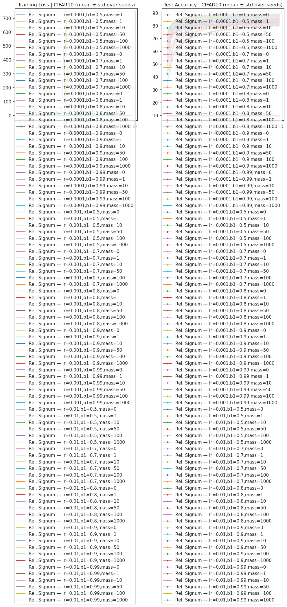
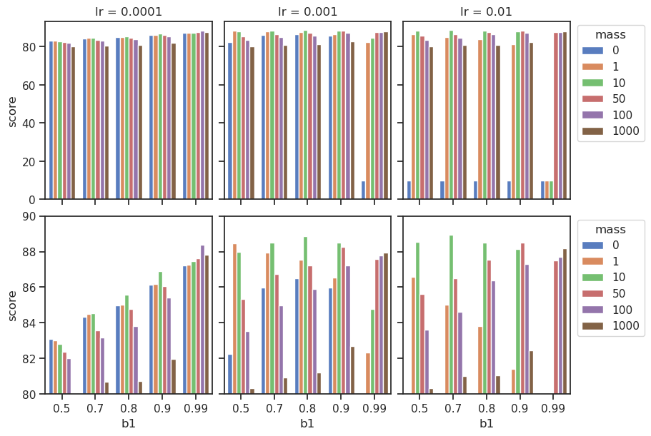
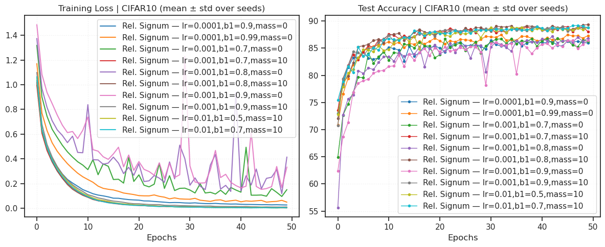
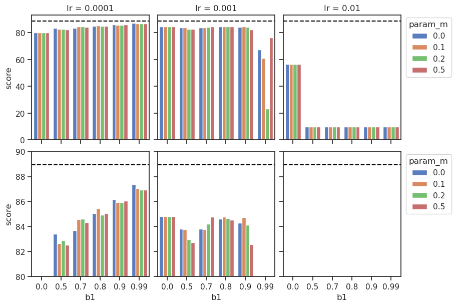
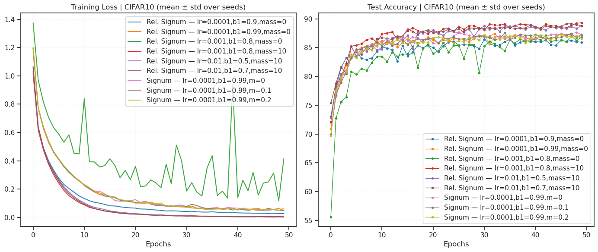
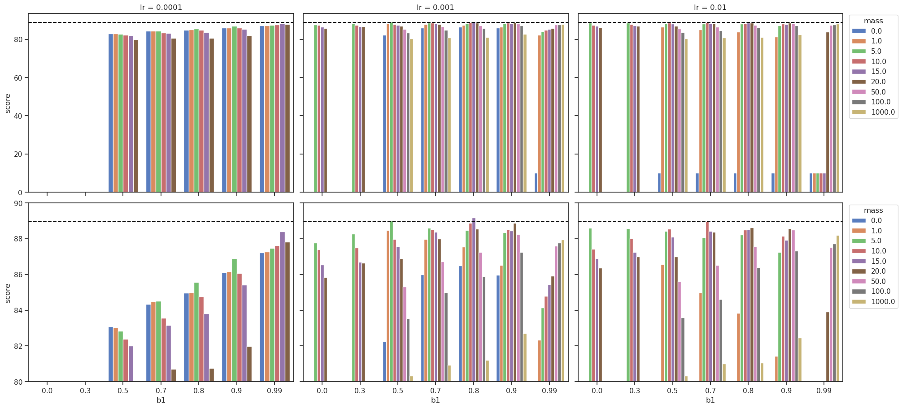

GRA: signum#
project = GRA, host = chewie, device = cuda:0
Goals:#
device_idx = 0
device = f'cuda:{device_idx}'
print(f"device: {device} ——— host: {os.uname().nodename}")
device: cuda:0 ——— host: chewie
Main#
from optimzers import *
from test.test import *
CIFAR10#
batch_size=256
cfg = TrainConfig(
dataset='CIFAR10',
# dataset='ImageNet32',
batch_size=256,
epochs=50,
device=device,
data_on_device=True,
verbose=True,
amp=False,
)
lrs = [1e-4, 1e-3, 1e-2]
betas = [0.5, 0.7, 0.8, 0.9, 0.99]
masses = [0.0, 1, 10, 50, 100, 1000]
experiments = []
for lr, beta1, m in itertools.product(lrs, betas, masses):
name = f"Rel. Signum — lr={lr:g},b1={beta1:g},mass={m:g}"
opt_fn = make_opt(RelativisticSignum, lr=lr, momentum=beta1, mass=m)
experiments.append(Experiment(name=name, opt_fn=opt_fn))
len(experiments)
90
%%time
results = run_experiments(experiments, cfg=cfg, seeds=[0])
plot_results(results, title="CIFAR10 (mean ± std over seeds)")

avg_scores = {k: np.round(d['test_acc'].squeeze()[-5:].mean(), decimals=2) for k, d in results.items()}
avg_scores = dict(sorted(avg_scores.items(), key=lambda t: t[1]))
avg_scores
{'Rel. Signum — lr=0.001,b1=0.99,mass=0': 10.0,
'Rel. Signum — lr=0.01,b1=0.5,mass=0': 10.0,
'Rel. Signum — lr=0.01,b1=0.7,mass=0': 10.0,
'Rel. Signum — lr=0.01,b1=0.8,mass=0': 10.0,
'Rel. Signum — lr=0.01,b1=0.9,mass=0': 10.0,
'Rel. Signum — lr=0.01,b1=0.99,mass=0': 10.0,
'Rel. Signum — lr=0.01,b1=0.99,mass=1': 10.0,
'Rel. Signum — lr=0.01,b1=0.99,mass=10': 10.0,
'Rel. Signum — lr=0.0001,b1=0.5,mass=1000': 80.02,
'Rel. Signum — lr=0.001,b1=0.5,mass=1000': 80.32,
'Rel. Signum — lr=0.01,b1=0.5,mass=1000': 80.33,
'Rel. Signum — lr=0.0001,b1=0.7,mass=1000': 80.7,
'Rel. Signum — lr=0.0001,b1=0.8,mass=1000': 80.75,
'Rel. Signum — lr=0.001,b1=0.7,mass=1000': 80.93,
'Rel. Signum — lr=0.01,b1=0.7,mass=1000': 81.0,
'Rel. Signum — lr=0.01,b1=0.8,mass=1000': 81.06,
'Rel. Signum — lr=0.001,b1=0.8,mass=1000': 81.2,
'Rel. Signum — lr=0.01,b1=0.9,mass=1': 81.43,
'Rel. Signum — lr=0.0001,b1=0.9,mass=1000': 81.99,
'Rel. Signum — lr=0.0001,b1=0.5,mass=100': 82.01,
'Rel. Signum — lr=0.001,b1=0.5,mass=0': 82.27,
'Rel. Signum — lr=0.001,b1=0.99,mass=1': 82.33,
'Rel. Signum — lr=0.0001,b1=0.5,mass=50': 82.39,
'Rel. Signum — lr=0.01,b1=0.9,mass=1000': 82.47,
'Rel. Signum — lr=0.001,b1=0.9,mass=1000': 82.7,
'Rel. Signum — lr=0.0001,b1=0.5,mass=10': 82.83,
'Rel. Signum — lr=0.0001,b1=0.5,mass=1': 83.03,
'Rel. Signum — lr=0.0001,b1=0.5,mass=0': 83.09,
'Rel. Signum — lr=0.0001,b1=0.7,mass=100': 83.16,
'Rel. Signum — lr=0.001,b1=0.5,mass=100': 83.53,
'Rel. Signum — lr=0.0001,b1=0.7,mass=50': 83.56,
'Rel. Signum — lr=0.01,b1=0.5,mass=100': 83.6,
'Rel. Signum — lr=0.0001,b1=0.8,mass=100': 83.81,
'Rel. Signum — lr=0.01,b1=0.8,mass=1': 83.83,
'Rel. Signum — lr=0.0001,b1=0.7,mass=0': 84.33,
'Rel. Signum — lr=0.0001,b1=0.7,mass=1': 84.5,
'Rel. Signum — lr=0.0001,b1=0.7,mass=10': 84.52,
'Rel. Signum — lr=0.01,b1=0.7,mass=100': 84.62,
'Rel. Signum — lr=0.0001,b1=0.8,mass=50': 84.77,
'Rel. Signum — lr=0.001,b1=0.99,mass=10': 84.78,
'Rel. Signum — lr=0.0001,b1=0.8,mass=0': 84.96,
'Rel. Signum — lr=0.001,b1=0.7,mass=100': 84.99,
'Rel. Signum — lr=0.0001,b1=0.8,mass=1': 85.0,
'Rel. Signum — lr=0.01,b1=0.7,mass=1': 85.0,
'Rel. Signum — lr=0.001,b1=0.5,mass=50': 85.32,
'Rel. Signum — lr=0.0001,b1=0.9,mass=100': 85.41,
'Rel. Signum — lr=0.0001,b1=0.8,mass=10': 85.56,
'Rel. Signum — lr=0.01,b1=0.5,mass=50': 85.62,
'Rel. Signum — lr=0.001,b1=0.8,mass=100': 85.9,
'Rel. Signum — lr=0.001,b1=0.9,mass=0': 85.96,
'Rel. Signum — lr=0.001,b1=0.7,mass=0': 85.99,
'Rel. Signum — lr=0.0001,b1=0.9,mass=50': 86.06,
'Rel. Signum — lr=0.0001,b1=0.9,mass=0': 86.12,
'Rel. Signum — lr=0.0001,b1=0.9,mass=1': 86.16,
'Rel. Signum — lr=0.01,b1=0.8,mass=100': 86.39,
'Rel. Signum — lr=0.001,b1=0.8,mass=0': 86.5,
'Rel. Signum — lr=0.01,b1=0.7,mass=50': 86.51,
'Rel. Signum — lr=0.001,b1=0.9,mass=1': 86.53,
'Rel. Signum — lr=0.01,b1=0.5,mass=1': 86.56,
'Rel. Signum — lr=0.001,b1=0.7,mass=50': 86.73,
'Rel. Signum — lr=0.0001,b1=0.9,mass=10': 86.9,
'Rel. Signum — lr=0.0001,b1=0.99,mass=0': 87.22,
'Rel. Signum — lr=0.001,b1=0.8,mass=50': 87.24,
'Rel. Signum — lr=0.001,b1=0.9,mass=100': 87.24,
'Rel. Signum — lr=0.0001,b1=0.99,mass=1': 87.27,
'Rel. Signum — lr=0.01,b1=0.9,mass=100': 87.32,
'Rel. Signum — lr=0.0001,b1=0.99,mass=10': 87.47,
'Rel. Signum — lr=0.01,b1=0.99,mass=50': 87.52,
'Rel. Signum — lr=0.001,b1=0.8,mass=1': 87.55,
'Rel. Signum — lr=0.01,b1=0.8,mass=50': 87.56,
'Rel. Signum — lr=0.001,b1=0.99,mass=50': 87.59,
'Rel. Signum — lr=0.0001,b1=0.99,mass=50': 87.62,
'Rel. Signum — lr=0.01,b1=0.99,mass=100': 87.71,
'Rel. Signum — lr=0.001,b1=0.99,mass=100': 87.78,
'Rel. Signum — lr=0.0001,b1=0.99,mass=1000': 87.82,
'Rel. Signum — lr=0.001,b1=0.99,mass=1000': 87.94,
'Rel. Signum — lr=0.001,b1=0.7,mass=1': 87.96,
'Rel. Signum — lr=0.001,b1=0.5,mass=10': 87.97,
'Rel. Signum — lr=0.01,b1=0.9,mass=10': 88.15,
'Rel. Signum — lr=0.01,b1=0.99,mass=1000': 88.19,
'Rel. Signum — lr=0.001,b1=0.9,mass=50': 88.25,
'Rel. Signum — lr=0.0001,b1=0.99,mass=100': 88.39,
'Rel. Signum — lr=0.001,b1=0.5,mass=1': 88.48,
'Rel. Signum — lr=0.01,b1=0.8,mass=10': 88.49,
'Rel. Signum — lr=0.01,b1=0.9,mass=50': 88.49,
'Rel. Signum — lr=0.001,b1=0.7,mass=10': 88.51,
'Rel. Signum — lr=0.001,b1=0.9,mass=10': 88.52,
'Rel. Signum — lr=0.01,b1=0.5,mass=10': 88.54,
'Rel. Signum — lr=0.001,b1=0.8,mass=10': 88.86,
'Rel. Signum — lr=0.01,b1=0.7,mass=10': 88.96}
def avg_scores_to_df(avg_scores: dict) -> pd.DataFrame:
rows = []
for k, score in avg_scores.items():
key = str(k)
# Split "XXX <dash> YYY" where dash may be em dash, en dash, or hyphen
parts = re.split(r"\s*[—–-]\s*", key, maxsplit=1)
optimizer = parts[0].strip()
params_str = parts[1].strip() if len(parts) > 1 else ""
params = {}
if params_str:
for item in params_str.split(","):
item = item.strip()
if not item or "=" not in item:
continue
kk, vv = item.split("=", 1)
kk = kk.strip()
vv = vv.strip()
# Best-effort numeric parse
try:
if re.fullmatch(r"[+-]?\d+", vv):
vv_parsed = int(vv)
else:
vv_parsed = float(vv)
except Exception:
vv_parsed = vv
params[kk] = vv_parsed
rows.append({
"key": key,
"optimizer": optimizer,
"lr": params.get("lr", None),
"b1": params.get("b1", None),
"mass": params.get("mass", None),
"score": float(score),
**{f"param_{kk}": vv for kk, vv in params.items() if kk not in {"lr", "b1", "mass"}}
})
df = pd.DataFrame(rows)
# Optional: nice ordering if those columns exist
preferred = ["optimizer", "lr", "b1", "mass", "score", "key"]
cols = [c for c in preferred if c in df.columns] + [c for c in df.columns if c not in preferred]
return df[cols]
def _parse_mass_from_key(key: str):
m = re.search(r"(?:^|,)\s*mass\s*=\s*([+-]?(?:\d+(?:\.\d*)?|\.\d+)(?:[eE][+-]?\d+)?)\s*(?:,|$)", key)
if not m:
return None
v = float(m.group(1))
return int(v) if v.is_integer() else v
def top_n_keys_by_mass(avg_scores: dict, masses: Sequence[float], num=5):
out = {}
for mass in masses:
items = [
(k, float(s))
for k, s in avg_scores.items()
if _parse_mass_from_key(str(k)) == mass
]
items.sort(key=lambda x: x[1], reverse=True)
out[mass] = [k for k, _ in items[:num]]
return out
df = avg_scores_to_df(avg_scores)
df['lr'].unique()
array([0.001 , 0.01 , 0.0001])
fig, axes = create_figure(2, 3, (9, 6), sharey='row', sharex='all')
for i, lr in enumerate(sorted(df['lr'].unique())):
ax = axes[0, i]
ax.set_title(f'lr = {lr}')
_df2p = df.loc[df['lr'] == lr]
sns.barplot(data=_df2p, hue='mass', y='score', x='b1', legend=i == 2, palette='muted', ax=ax)
sns.barplot(data=_df2p, hue='mass', y='score', x='b1', legend=i == 2, palette='muted', ax=axes[1, i])
axes[1, 0].set_ylim(bottom=80, top=90)
move_legend(axes[0, 2], (1.01, 1.01))
move_legend(axes[1, 2], (1.01, 1.01))
plt.show()

selected_keys = top5_keys_by_mass(avg_scores, masses=[0, 10])
all_selected_keys = [k for mass in selected_keys for k in selected_keys[mass]]
print(selected_keys)
{ 0: [ 'Rel. Signum — lr=0.0001,b1=0.99,mass=0', 'Rel. Signum — lr=0.001,b1=0.8,mass=0', 'Rel. Signum — lr=0.0001,b1=0.9,mass=0', 'Rel. Signum — lr=0.001,b1=0.7,mass=0', 'Rel. Signum — lr=0.001,b1=0.9,mass=0' ], 10: [ 'Rel. Signum — lr=0.01,b1=0.7,mass=10', 'Rel. Signum — lr=0.001,b1=0.8,mass=10', 'Rel. Signum — lr=0.01,b1=0.5,mass=10', 'Rel. Signum — lr=0.001,b1=0.9,mass=10', 'Rel. Signum — lr=0.001,b1=0.7,mass=10' ] }
selected_results_to_plot = {
k: d for k, d in results.items()
if k in all_selected_keys
}
plot_results(selected_results_to_plot, title="CIFAR10 (mean ± std over seeds)")

Add true signum (with dampening)#
lrs = [1e-4, 1e-3, 1e-2]
betas = [0.0, 0.5, 0.7, 0.8, 0.9, 0.99]
dampening = [0.0, 0.1, 0.2, 0.5]
experiments = []
for lr, beta1, damp in itertools.product(lrs, betas, dampening):
name = f"Signum — lr={lr:g},b1={beta1:g},m={damp:g}"
opt_fn = make_opt(SignSGD, lr=lr, momentum=beta1, dampening=damp)
experiments.append(Experiment(name=name, opt_fn=opt_fn))
len(experiments)
72
%%time
results_signum = run_experiments(experiments, cfg=cfg, seeds=[0])
combined = results | results_signum
avg_scores = {k: np.round(d['test_acc'].squeeze()[-5:].mean(), decimals=2) for k, d in combined.items()}
avg_scores = dict(sorted(avg_scores.items(), key=lambda t: t[1]))
avg_scores
{'Rel. Signum — lr=0.001,b1=0.99,mass=0': 10.0,
'Rel. Signum — lr=0.01,b1=0.5,mass=0': 10.0,
'Rel. Signum — lr=0.01,b1=0.7,mass=0': 10.0,
'Rel. Signum — lr=0.01,b1=0.8,mass=0': 10.0,
'Rel. Signum — lr=0.01,b1=0.9,mass=0': 10.0,
'Rel. Signum — lr=0.01,b1=0.99,mass=0': 10.0,
'Rel. Signum — lr=0.01,b1=0.99,mass=1': 10.0,
'Rel. Signum — lr=0.01,b1=0.99,mass=10': 10.0,
'Signum — lr=0.01,b1=0.5,m=0': 10.0,
'Signum — lr=0.01,b1=0.5,m=0.1': 10.0,
'Signum — lr=0.01,b1=0.5,m=0.2': 10.0,
'Signum — lr=0.01,b1=0.5,m=0.5': 10.0,
'Signum — lr=0.01,b1=0.7,m=0': 10.0,
'Signum — lr=0.01,b1=0.7,m=0.1': 10.0,
'Signum — lr=0.01,b1=0.7,m=0.2': 10.0,
'Signum — lr=0.01,b1=0.7,m=0.5': 10.0,
'Signum — lr=0.01,b1=0.8,m=0': 10.0,
'Signum — lr=0.01,b1=0.8,m=0.1': 10.0,
'Signum — lr=0.01,b1=0.8,m=0.2': 10.0,
'Signum — lr=0.01,b1=0.8,m=0.5': 10.0,
'Signum — lr=0.01,b1=0.9,m=0': 10.0,
'Signum — lr=0.01,b1=0.9,m=0.1': 10.0,
'Signum — lr=0.01,b1=0.9,m=0.2': 10.0,
'Signum — lr=0.01,b1=0.9,m=0.5': 10.0,
'Signum — lr=0.01,b1=0.99,m=0': 10.0,
'Signum — lr=0.01,b1=0.99,m=0.1': 10.0,
'Signum — lr=0.01,b1=0.99,m=0.2': 10.0,
'Signum — lr=0.01,b1=0.99,m=0.5': 10.0,
'Signum — lr=0.001,b1=0.99,m=0.2': 23.33,
'Signum — lr=0.01,b1=0,m=0': 56.51,
'Signum — lr=0.01,b1=0,m=0.1': 56.51,
'Signum — lr=0.01,b1=0,m=0.2': 56.51,
'Signum — lr=0.01,b1=0,m=0.5': 56.51,
'Signum — lr=0.001,b1=0.99,m=0.1': 61.14,
'Signum — lr=0.001,b1=0.99,m=0': 67.45,
'Signum — lr=0.001,b1=0.99,m=0.5': 76.46,
'Rel. Signum — lr=0.0001,b1=0.5,mass=1000': 80.02,
'Signum — lr=0.0001,b1=0,m=0': 80.08,
'Signum — lr=0.0001,b1=0,m=0.1': 80.08,
'Signum — lr=0.0001,b1=0,m=0.2': 80.08,
'Signum — lr=0.0001,b1=0,m=0.5': 80.08,
'Rel. Signum — lr=0.001,b1=0.5,mass=1000': 80.32,
'Rel. Signum — lr=0.01,b1=0.5,mass=1000': 80.33,
'Rel. Signum — lr=0.0001,b1=0.7,mass=1000': 80.7,
'Rel. Signum — lr=0.0001,b1=0.8,mass=1000': 80.75,
'Rel. Signum — lr=0.001,b1=0.7,mass=1000': 80.93,
'Rel. Signum — lr=0.01,b1=0.7,mass=1000': 81.0,
'Rel. Signum — lr=0.01,b1=0.8,mass=1000': 81.06,
'Rel. Signum — lr=0.001,b1=0.8,mass=1000': 81.2,
'Rel. Signum — lr=0.01,b1=0.9,mass=1': 81.43,
'Rel. Signum — lr=0.0001,b1=0.9,mass=1000': 81.99,
'Rel. Signum — lr=0.0001,b1=0.5,mass=100': 82.01,
'Rel. Signum — lr=0.001,b1=0.5,mass=0': 82.27,
'Rel. Signum — lr=0.001,b1=0.99,mass=1': 82.33,
'Rel. Signum — lr=0.0001,b1=0.5,mass=50': 82.39,
'Rel. Signum — lr=0.01,b1=0.9,mass=1000': 82.47,
'Signum — lr=0.0001,b1=0.5,m=0.5': 82.53,
'Signum — lr=0.001,b1=0.9,m=0.5': 82.57,
'Signum — lr=0.0001,b1=0.5,m=0.1': 82.65,
'Rel. Signum — lr=0.001,b1=0.9,mass=1000': 82.7,
'Signum — lr=0.001,b1=0.5,m=0.5': 82.75,
'Rel. Signum — lr=0.0001,b1=0.5,mass=10': 82.83,
'Signum — lr=0.0001,b1=0.5,m=0.2': 82.89,
'Signum — lr=0.001,b1=0.5,m=0.2': 82.97,
'Rel. Signum — lr=0.0001,b1=0.5,mass=1': 83.03,
'Rel. Signum — lr=0.0001,b1=0.5,mass=0': 83.09,
'Rel. Signum — lr=0.0001,b1=0.7,mass=100': 83.16,
'Signum — lr=0.0001,b1=0.5,m=0': 83.42,
'Rel. Signum — lr=0.001,b1=0.5,mass=100': 83.53,
'Rel. Signum — lr=0.0001,b1=0.7,mass=50': 83.56,
'Rel. Signum — lr=0.01,b1=0.5,mass=100': 83.6,
'Signum — lr=0.0001,b1=0.7,m=0': 83.71,
'Signum — lr=0.001,b1=0.7,m=0.1': 83.76,
'Signum — lr=0.001,b1=0.5,m=0.1': 83.79,
'Rel. Signum — lr=0.0001,b1=0.8,mass=100': 83.81,
'Signum — lr=0.001,b1=0.5,m=0': 83.81,
'Signum — lr=0.001,b1=0.7,m=0': 83.81,
'Rel. Signum — lr=0.01,b1=0.8,mass=1': 83.83,
'Signum — lr=0.001,b1=0.9,m=0.2': 84.15,
'Signum — lr=0.001,b1=0.7,m=0.2': 84.22,
'Signum — lr=0.001,b1=0.9,m=0': 84.29,
'Signum — lr=0.0001,b1=0.7,m=0.5': 84.32,
'Rel. Signum — lr=0.0001,b1=0.7,mass=0': 84.33,
'Rel. Signum — lr=0.0001,b1=0.7,mass=1': 84.5,
'Rel. Signum — lr=0.0001,b1=0.7,mass=10': 84.52,
'Signum — lr=0.001,b1=0.8,m=0.5': 84.55,
'Signum — lr=0.0001,b1=0.7,m=0.1': 84.57,
'Signum — lr=0.0001,b1=0.7,m=0.2': 84.6,
'Signum — lr=0.001,b1=0.8,m=0': 84.6,
'Rel. Signum — lr=0.01,b1=0.7,mass=100': 84.62,
'Signum — lr=0.001,b1=0.8,m=0.2': 84.65,
'Signum — lr=0.001,b1=0.9,m=0.1': 84.75,
'Signum — lr=0.001,b1=0.8,m=0.1': 84.76,
'Rel. Signum — lr=0.0001,b1=0.8,mass=50': 84.77,
'Rel. Signum — lr=0.001,b1=0.99,mass=10': 84.78,
'Signum — lr=0.001,b1=0.7,m=0.5': 84.78,
'Signum — lr=0.001,b1=0,m=0': 84.82,
'Signum — lr=0.001,b1=0,m=0.1': 84.82,
'Signum — lr=0.001,b1=0,m=0.2': 84.82,
'Signum — lr=0.001,b1=0,m=0.5': 84.82,
'Signum — lr=0.0001,b1=0.8,m=0.2': 84.93,
'Rel. Signum — lr=0.0001,b1=0.8,mass=0': 84.96,
'Rel. Signum — lr=0.001,b1=0.7,mass=100': 84.99,
'Rel. Signum — lr=0.0001,b1=0.8,mass=1': 85.0,
'Rel. Signum — lr=0.01,b1=0.7,mass=1': 85.0,
'Signum — lr=0.0001,b1=0.8,m=0': 85.06,
'Signum — lr=0.0001,b1=0.8,m=0.5': 85.06,
'Rel. Signum — lr=0.001,b1=0.5,mass=50': 85.32,
'Rel. Signum — lr=0.0001,b1=0.9,mass=100': 85.41,
'Signum — lr=0.0001,b1=0.8,m=0.1': 85.46,
'Rel. Signum — lr=0.0001,b1=0.8,mass=10': 85.56,
'Rel. Signum — lr=0.01,b1=0.5,mass=50': 85.62,
'Rel. Signum — lr=0.001,b1=0.8,mass=100': 85.9,
'Signum — lr=0.0001,b1=0.9,m=0.1': 85.93,
'Signum — lr=0.0001,b1=0.9,m=0.2': 85.95,
'Rel. Signum — lr=0.001,b1=0.9,mass=0': 85.96,
'Rel. Signum — lr=0.001,b1=0.7,mass=0': 85.99,
'Rel. Signum — lr=0.0001,b1=0.9,mass=50': 86.06,
'Signum — lr=0.0001,b1=0.9,m=0.5': 86.07,
'Rel. Signum — lr=0.0001,b1=0.9,mass=0': 86.12,
'Rel. Signum — lr=0.0001,b1=0.9,mass=1': 86.16,
'Signum — lr=0.0001,b1=0.9,m=0': 86.16,
'Rel. Signum — lr=0.01,b1=0.8,mass=100': 86.39,
'Rel. Signum — lr=0.001,b1=0.8,mass=0': 86.5,
'Rel. Signum — lr=0.01,b1=0.7,mass=50': 86.51,
'Rel. Signum — lr=0.001,b1=0.9,mass=1': 86.53,
'Rel. Signum — lr=0.01,b1=0.5,mass=1': 86.56,
'Rel. Signum — lr=0.001,b1=0.7,mass=50': 86.73,
'Rel. Signum — lr=0.0001,b1=0.9,mass=10': 86.9,
'Signum — lr=0.0001,b1=0.99,m=0.5': 86.95,
'Signum — lr=0.0001,b1=0.99,m=0.2': 86.96,
'Signum — lr=0.0001,b1=0.99,m=0.1': 87.06,
'Rel. Signum — lr=0.0001,b1=0.99,mass=0': 87.22,
'Rel. Signum — lr=0.001,b1=0.8,mass=50': 87.24,
'Rel. Signum — lr=0.001,b1=0.9,mass=100': 87.24,
'Rel. Signum — lr=0.0001,b1=0.99,mass=1': 87.27,
'Rel. Signum — lr=0.01,b1=0.9,mass=100': 87.32,
'Signum — lr=0.0001,b1=0.99,m=0': 87.39,
'Rel. Signum — lr=0.0001,b1=0.99,mass=10': 87.47,
'Rel. Signum — lr=0.01,b1=0.99,mass=50': 87.52,
'Rel. Signum — lr=0.001,b1=0.8,mass=1': 87.55,
'Rel. Signum — lr=0.01,b1=0.8,mass=50': 87.56,
'Rel. Signum — lr=0.001,b1=0.99,mass=50': 87.59,
'Rel. Signum — lr=0.0001,b1=0.99,mass=50': 87.62,
'Rel. Signum — lr=0.01,b1=0.99,mass=100': 87.71,
'Rel. Signum — lr=0.001,b1=0.99,mass=100': 87.78,
'Rel. Signum — lr=0.0001,b1=0.99,mass=1000': 87.82,
'Rel. Signum — lr=0.001,b1=0.99,mass=1000': 87.94,
'Rel. Signum — lr=0.001,b1=0.7,mass=1': 87.96,
'Rel. Signum — lr=0.001,b1=0.5,mass=10': 87.97,
'Rel. Signum — lr=0.01,b1=0.9,mass=10': 88.15,
'Rel. Signum — lr=0.01,b1=0.99,mass=1000': 88.19,
'Rel. Signum — lr=0.001,b1=0.9,mass=50': 88.25,
'Rel. Signum — lr=0.0001,b1=0.99,mass=100': 88.39,
'Rel. Signum — lr=0.001,b1=0.5,mass=1': 88.48,
'Rel. Signum — lr=0.01,b1=0.8,mass=10': 88.49,
'Rel. Signum — lr=0.01,b1=0.9,mass=50': 88.49,
'Rel. Signum — lr=0.001,b1=0.7,mass=10': 88.51,
'Rel. Signum — lr=0.001,b1=0.9,mass=10': 88.52,
'Rel. Signum — lr=0.01,b1=0.5,mass=10': 88.54,
'Rel. Signum — lr=0.001,b1=0.8,mass=10': 88.86,
'Rel. Signum — lr=0.01,b1=0.7,mass=10': 88.96}
best_key, best_score = list(avg_scores.items())[
np.argmax(list(avg_scores.values()))]
print(f"best fit:\t{best_key}\nbest score:\t{best_score} %")
best fit: Rel. Signum — lr=0.01,b1=0.7,mass=10 best score: 88.96 %
df = avg_scores_to_df(avg_scores)
df['optimizer'].unique()
array(['Rel. Signum', 'Signum'], dtype=object)
fig, axes = create_figure(2, 3, (9, 6), sharey='row', sharex='all')
for i, lr in enumerate(sorted(df['lr'].unique())):
ax = axes[0, i]
ax.set_title(f'lr = {lr}')
_df2p = df.loc[(df['lr'] == lr) & (df['optimizer'] == 'Signum')]
sns.barplot(data=_df2p, hue='param_m', y='score', x='b1', legend=i == 2, palette='muted', ax=ax)
sns.barplot(data=_df2p, hue='param_m', y='score', x='b1', legend=i == 2, palette='muted', ax=axes[1, i])
ax.axhline(best_score, color='k', ls='--')
axes[1, i].axhline(best_score, color='k', ls='--')
axes[1, 0].set_ylim(bottom=80, top=90)
move_legend(axes[0, 2], (1.01, 1.01))
move_legend(axes[1, 2], (1.01, 1.01))
plt.show()

top_5_signum = {k: v for k, v in avg_scores.items() if k.startswith('Signum')}
top_5_signum = dict(sorted(list(top_3_signum.items()), key=lambda t: t[1], reverse=True)[:5])
print(top_5_signum)
{ 'Signum — lr=0.0001,b1=0.99,m=0': 87.39, 'Signum — lr=0.0001,b1=0.99,m=0.1': 87.06, 'Signum — lr=0.0001,b1=0.99,m=0.2': 86.96 }
selected_keys_rel = top_n_keys_by_mass(avg_scores, masses=[0, 10], num=5)
all_selected_keys = [k for mass in selected_keys_rel for k in selected_keys[mass]]
all_selected_keys += list(top_5_signum)
print(all_selected_keys)
[ 'Rel. Signum — lr=0.0001,b1=0.99,mass=0', 'Rel. Signum — lr=0.001,b1=0.8,mass=0', 'Rel. Signum — lr=0.0001,b1=0.9,mass=0', 'Rel. Signum — lr=0.01,b1=0.7,mass=10', 'Rel. Signum — lr=0.001,b1=0.8,mass=10', 'Rel. Signum — lr=0.01,b1=0.5,mass=10', 'Signum — lr=0.0001,b1=0.99,m=0', 'Signum — lr=0.0001,b1=0.99,m=0.1', 'Signum — lr=0.0001,b1=0.99,m=0.2' ]
selected_results_to_plot = {
k: d for k, d in combined.items()
if k in all_selected_keys
}
plot_results(selected_results_to_plot, title="CIFAR10 (mean ± std over seeds)", figsize=(14, 6))

Explore the mass parameter better#
lrs = [1e-3, 1e-2]
betas = [0.0, 0.3, 0.5, 0.7, 0.8, 0.9, 0.99]
masses = [5, 10, 15, 20]
experiments = []
for lr, beta1, m in itertools.product(lrs, betas, masses):
name = f"Rel. Signum — lr={lr:g},b1={beta1:g},mass={m:g}"
opt_fn = make_opt(RelativisticSignum, lr=lr, momentum=beta1, mass=m)
experiments.append(Experiment(name=name, opt_fn=opt_fn))
len(experiments)
56
%%time
results_explore_mass_param = run_experiments(experiments, cfg=cfg, seeds=[0])
--- Training (CIFAR10) --- Model: ConvNet | seed=0 Optimizer: RelativisticSignum
RelativisticSignum ( Parameter Group 0 lr: 0.001 mass: 5 momentum: 0.0 weight_decay: 0.0 )
Epoch 1/50: Train Loss 1.1421 | Test Acc 71.74%
Epoch 2/50: Train Loss 0.6814 | Test Acc 77.01%
Epoch 3/50: Train Loss 0.5286 | Test Acc 80.64%
Epoch 4/50: Train Loss 0.4292 | Test Acc 81.63%
Epoch 5/50: Train Loss 0.3517 | Test Acc 82.07%
Epoch 6/50: Train Loss 0.2941 | Test Acc 83.22%
Epoch 7/50: Train Loss 0.2444 | Test Acc 84.13%
Epoch 8/50: Train Loss 0.2046 | Test Acc 84.68%
Epoch 9/50: Train Loss 0.1727 | Test Acc 85.12%
Epoch 10/50: Train Loss 0.1439 | Test Acc 84.87%
Epoch 11/50: Train Loss 0.1207 | Test Acc 83.71%
Epoch 12/50: Train Loss 0.1041 | Test Acc 86.24%
Epoch 13/50: Train Loss 0.0919 | Test Acc 86.03%
Epoch 14/50: Train Loss 0.0758 | Test Acc 85.58%
Epoch 15/50: Train Loss 0.0678 | Test Acc 85.85%
Epoch 16/50: Train Loss 0.0577 | Test Acc 86.53%
Epoch 17/50: Train Loss 0.0538 | Test Acc 85.67%
Epoch 18/50: Train Loss 0.0459 | Test Acc 86.03%
Epoch 19/50: Train Loss 0.0430 | Test Acc 86.25%
Epoch 20/50: Train Loss 0.0381 | Test Acc 86.48%
Epoch 21/50: Train Loss 0.0365 | Test Acc 87.08%
Epoch 22/50: Train Loss 0.0299 | Test Acc 85.73%
Epoch 23/50: Train Loss 0.0281 | Test Acc 87.49%
Epoch 24/50: Train Loss 0.0262 | Test Acc 86.63%
Epoch 25/50: Train Loss 0.0259 | Test Acc 86.88%
Epoch 26/50: Train Loss 0.0215 | Test Acc 87.39%
Epoch 27/50: Train Loss 0.0211 | Test Acc 87.21%
Epoch 28/50: Train Loss 0.0188 | Test Acc 86.27%
Epoch 29/50: Train Loss 0.0177 | Test Acc 87.06%
Epoch 30/50: Train Loss 0.0177 | Test Acc 88.28%
Epoch 31/50: Train Loss 0.0147 | Test Acc 87.62%
Epoch 32/50: Train Loss 0.0143 | Test Acc 87.87%
Epoch 33/50: Train Loss 0.0142 | Test Acc 88.08%
Epoch 34/50: Train Loss 0.0130 | Test Acc 88.25%
Epoch 35/50: Train Loss 0.0127 | Test Acc 88.23%
Epoch 36/50: Train Loss 0.0115 | Test Acc 88.32%
Epoch 37/50: Train Loss 0.0099 | Test Acc 88.14%
Epoch 38/50: Train Loss 0.0086 | Test Acc 87.76%
Epoch 39/50: Train Loss 0.0103 | Test Acc 87.46%
Epoch 40/50: Train Loss 0.0085 | Test Acc 87.96%
Epoch 41/50: Train Loss 0.0084 | Test Acc 88.70%
Epoch 42/50: Train Loss 0.0074 | Test Acc 87.76%
Epoch 43/50: Train Loss 0.0096 | Test Acc 88.12%
Epoch 44/50: Train Loss 0.0067 | Test Acc 88.40%
Epoch 45/50: Train Loss 0.0056 | Test Acc 87.42%
Epoch 46/50: Train Loss 0.0085 | Test Acc 87.71%
Epoch 47/50: Train Loss 0.0079 | Test Acc 87.84%
Epoch 48/50: Train Loss 0.0064 | Test Acc 87.97%
Epoch 49/50: Train Loss 0.0053 | Test Acc 87.23%
Epoch 50/50: Train Loss 0.0064 | Test Acc 88.11%
Finished in 164.7s
--- Training (CIFAR10) --- Model: ConvNet | seed=0 Optimizer: RelativisticSignum
RelativisticSignum ( Parameter Group 0 lr: 0.001 mass: 10 momentum: 0.0 weight_decay: 0.0 )
Epoch 1/50: Train Loss 1.1377 | Test Acc 70.52%
Epoch 2/50: Train Loss 0.6971 | Test Acc 78.14%
Epoch 3/50: Train Loss 0.5440 | Test Acc 79.86%
Epoch 4/50: Train Loss 0.4447 | Test Acc 80.11%
Epoch 5/50: Train Loss 0.3683 | Test Acc 80.95%
Epoch 6/50: Train Loss 0.3077 | Test Acc 82.65%
Epoch 7/50: Train Loss 0.2565 | Test Acc 83.74%
Epoch 8/50: Train Loss 0.2125 | Test Acc 84.43%
Epoch 9/50: Train Loss 0.1765 | Test Acc 82.12%
Epoch 10/50: Train Loss 0.1495 | Test Acc 83.09%
Epoch 11/50: Train Loss 0.1260 | Test Acc 84.87%
Epoch 12/50: Train Loss 0.1049 | Test Acc 85.47%
Epoch 13/50: Train Loss 0.0910 | Test Acc 84.29%
Epoch 14/50: Train Loss 0.0794 | Test Acc 83.73%
Epoch 15/50: Train Loss 0.0674 | Test Acc 82.95%
Epoch 16/50: Train Loss 0.0584 | Test Acc 85.00%
Epoch 17/50: Train Loss 0.0490 | Test Acc 85.90%
Epoch 18/50: Train Loss 0.0434 | Test Acc 86.41%
Epoch 19/50: Train Loss 0.0393 | Test Acc 86.52%
Epoch 20/50: Train Loss 0.0346 | Test Acc 86.43%
Epoch 21/50: Train Loss 0.0299 | Test Acc 85.63%
Epoch 22/50: Train Loss 0.0271 | Test Acc 86.68%
Epoch 23/50: Train Loss 0.0259 | Test Acc 86.25%
Epoch 24/50: Train Loss 0.0225 | Test Acc 86.77%
Epoch 25/50: Train Loss 0.0204 | Test Acc 86.84%
Epoch 26/50: Train Loss 0.0164 | Test Acc 86.93%
Epoch 27/50: Train Loss 0.0163 | Test Acc 86.85%
Epoch 28/50: Train Loss 0.0157 | Test Acc 86.27%
Epoch 29/50: Train Loss 0.0130 | Test Acc 86.71%
Epoch 30/50: Train Loss 0.0129 | Test Acc 86.37%
Epoch 31/50: Train Loss 0.0115 | Test Acc 86.59%
Epoch 32/50: Train Loss 0.0098 | Test Acc 84.59%
Epoch 33/50: Train Loss 0.0090 | Test Acc 86.24%
Epoch 34/50: Train Loss 0.0102 | Test Acc 87.03%
Epoch 35/50: Train Loss 0.0090 | Test Acc 86.37%
Epoch 36/50: Train Loss 0.0090 | Test Acc 85.98%
Epoch 37/50: Train Loss 0.0095 | Test Acc 86.22%
Epoch 38/50: Train Loss 0.0073 | Test Acc 86.78%
Epoch 39/50: Train Loss 0.0057 | Test Acc 87.56%
Epoch 40/50: Train Loss 0.0076 | Test Acc 87.24%
Epoch 41/50: Train Loss 0.0046 | Test Acc 87.32%
Epoch 42/50: Train Loss 0.0052 | Test Acc 86.80%
Epoch 43/50: Train Loss 0.0049 | Test Acc 87.32%
Epoch 44/50: Train Loss 0.0051 | Test Acc 87.30%
Epoch 45/50: Train Loss 0.0053 | Test Acc 87.07%
Epoch 46/50: Train Loss 0.0039 | Test Acc 87.37%
Epoch 47/50: Train Loss 0.0048 | Test Acc 87.45%
Epoch 48/50: Train Loss 0.0033 | Test Acc 87.27%
Epoch 49/50: Train Loss 0.0039 | Test Acc 87.42%
Epoch 50/50: Train Loss 0.0028 | Test Acc 87.46%
Finished in 165.3s
--- Training (CIFAR10) --- Model: ConvNet | seed=0 Optimizer: RelativisticSignum
RelativisticSignum ( Parameter Group 0 lr: 0.001 mass: 15 momentum: 0.0 weight_decay: 0.0 )
Epoch 1/50: Train Loss 1.1562 | Test Acc 69.98%
Epoch 2/50: Train Loss 0.7248 | Test Acc 77.15%
Epoch 3/50: Train Loss 0.5701 | Test Acc 78.70%
Epoch 4/50: Train Loss 0.4701 | Test Acc 80.35%
Epoch 5/50: Train Loss 0.3933 | Test Acc 81.91%
Epoch 6/50: Train Loss 0.3308 | Test Acc 81.17%
Epoch 7/50: Train Loss 0.2780 | Test Acc 83.65%
Epoch 8/50: Train Loss 0.2326 | Test Acc 81.53%
Epoch 9/50: Train Loss 0.1939 | Test Acc 82.83%
Epoch 10/50: Train Loss 0.1618 | Test Acc 83.20%
Epoch 11/50: Train Loss 0.1354 | Test Acc 84.84%
Epoch 12/50: Train Loss 0.1115 | Test Acc 84.31%
Epoch 13/50: Train Loss 0.0951 | Test Acc 84.52%
Epoch 14/50: Train Loss 0.0807 | Test Acc 84.87%
Epoch 15/50: Train Loss 0.0686 | Test Acc 85.28%
Epoch 16/50: Train Loss 0.0574 | Test Acc 84.21%
Epoch 17/50: Train Loss 0.0489 | Test Acc 84.20%
Epoch 18/50: Train Loss 0.0449 | Test Acc 83.96%
Epoch 19/50: Train Loss 0.0367 | Test Acc 85.40%
Epoch 20/50: Train Loss 0.0317 | Test Acc 85.56%
Epoch 21/50: Train Loss 0.0263 | Test Acc 85.33%
Epoch 22/50: Train Loss 0.0227 | Test Acc 85.74%
Epoch 23/50: Train Loss 0.0211 | Test Acc 85.54%
Epoch 24/50: Train Loss 0.0206 | Test Acc 85.85%
Epoch 25/50: Train Loss 0.0169 | Test Acc 85.71%
Epoch 26/50: Train Loss 0.0155 | Test Acc 86.37%
Epoch 27/50: Train Loss 0.0140 | Test Acc 86.14%
Epoch 28/50: Train Loss 0.0117 | Test Acc 85.82%
Epoch 29/50: Train Loss 0.0115 | Test Acc 85.94%
Epoch 30/50: Train Loss 0.0110 | Test Acc 85.56%
Epoch 31/50: Train Loss 0.0098 | Test Acc 86.63%
Epoch 32/50: Train Loss 0.0097 | Test Acc 86.09%
Epoch 33/50: Train Loss 0.0083 | Test Acc 86.32%
Epoch 34/50: Train Loss 0.0073 | Test Acc 86.13%
Epoch 35/50: Train Loss 0.0071 | Test Acc 86.00%
Epoch 36/50: Train Loss 0.0067 | Test Acc 84.99%
Epoch 37/50: Train Loss 0.0066 | Test Acc 86.21%
Epoch 38/50: Train Loss 0.0063 | Test Acc 86.69%
Epoch 39/50: Train Loss 0.0061 | Test Acc 86.38%
Epoch 40/50: Train Loss 0.0037 | Test Acc 86.68%
Epoch 41/50: Train Loss 0.0037 | Test Acc 86.80%
Epoch 42/50: Train Loss 0.0036 | Test Acc 86.43%
Epoch 43/50: Train Loss 0.0034 | Test Acc 86.43%
Epoch 44/50: Train Loss 0.0038 | Test Acc 85.20%
Epoch 45/50: Train Loss 0.0040 | Test Acc 86.97%
Epoch 46/50: Train Loss 0.0031 | Test Acc 86.38%
Epoch 47/50: Train Loss 0.0028 | Test Acc 86.93%
Epoch 48/50: Train Loss 0.0029 | Test Acc 86.75%
Epoch 49/50: Train Loss 0.0033 | Test Acc 86.19%
Epoch 50/50: Train Loss 0.0032 | Test Acc 86.52%
Finished in 165.4s
--- Training (CIFAR10) --- Model: ConvNet | seed=0 Optimizer: RelativisticSignum
RelativisticSignum ( Parameter Group 0 lr: 0.001 mass: 20 momentum: 0.0 weight_decay: 0.0 )
Epoch 1/50: Train Loss 1.1810 | Test Acc 69.25%
Epoch 2/50: Train Loss 0.7519 | Test Acc 76.58%
Epoch 3/50: Train Loss 0.5961 | Test Acc 77.72%
Epoch 4/50: Train Loss 0.4964 | Test Acc 79.20%
Epoch 5/50: Train Loss 0.4205 | Test Acc 81.36%
Epoch 6/50: Train Loss 0.3560 | Test Acc 81.58%
Epoch 7/50: Train Loss 0.2998 | Test Acc 82.39%
Epoch 8/50: Train Loss 0.2527 | Test Acc 81.33%
Epoch 9/50: Train Loss 0.2122 | Test Acc 82.95%
Epoch 10/50: Train Loss 0.1764 | Test Acc 82.89%
Epoch 11/50: Train Loss 0.1508 | Test Acc 82.47%
Epoch 12/50: Train Loss 0.1237 | Test Acc 84.16%
Epoch 13/50: Train Loss 0.1004 | Test Acc 84.41%
Epoch 14/50: Train Loss 0.0851 | Test Acc 84.58%
Epoch 15/50: Train Loss 0.0707 | Test Acc 81.50%
Epoch 16/50: Train Loss 0.0606 | Test Acc 82.38%
Epoch 17/50: Train Loss 0.0489 | Test Acc 83.92%
Epoch 18/50: Train Loss 0.0426 | Test Acc 84.52%
Epoch 19/50: Train Loss 0.0366 | Test Acc 82.41%
Epoch 20/50: Train Loss 0.0325 | Test Acc 85.55%
Epoch 21/50: Train Loss 0.0288 | Test Acc 84.38%
Epoch 22/50: Train Loss 0.0253 | Test Acc 84.59%
Epoch 23/50: Train Loss 0.0208 | Test Acc 84.23%
Epoch 24/50: Train Loss 0.0190 | Test Acc 84.66%
Epoch 25/50: Train Loss 0.0172 | Test Acc 85.34%
Epoch 26/50: Train Loss 0.0142 | Test Acc 85.19%
Epoch 27/50: Train Loss 0.0117 | Test Acc 84.84%
Epoch 28/50: Train Loss 0.0092 | Test Acc 85.33%
Epoch 29/50: Train Loss 0.0085 | Test Acc 85.80%
Epoch 30/50: Train Loss 0.0088 | Test Acc 85.39%
Epoch 31/50: Train Loss 0.0086 | Test Acc 85.64%
Epoch 32/50: Train Loss 0.0075 | Test Acc 85.90%
Epoch 33/50: Train Loss 0.0072 | Test Acc 85.57%
Epoch 34/50: Train Loss 0.0060 | Test Acc 85.99%
Epoch 35/50: Train Loss 0.0045 | Test Acc 85.02%
Epoch 36/50: Train Loss 0.0043 | Test Acc 85.68%
Epoch 37/50: Train Loss 0.0049 | Test Acc 85.33%
Epoch 38/50: Train Loss 0.0044 | Test Acc 86.08%
Epoch 39/50: Train Loss 0.0024 | Test Acc 86.10%
Epoch 40/50: Train Loss 0.0028 | Test Acc 85.44%
Epoch 41/50: Train Loss 0.0025 | Test Acc 85.95%
Epoch 42/50: Train Loss 0.0023 | Test Acc 86.07%
Epoch 43/50: Train Loss 0.0016 | Test Acc 86.00%
Epoch 44/50: Train Loss 0.0026 | Test Acc 85.58%
Epoch 45/50: Train Loss 0.0016 | Test Acc 85.82%
Epoch 46/50: Train Loss 0.0022 | Test Acc 85.43%
Epoch 47/50: Train Loss 0.0025 | Test Acc 86.20%
Epoch 48/50: Train Loss 0.0027 | Test Acc 85.42%
Epoch 49/50: Train Loss 0.0018 | Test Acc 85.97%
Epoch 50/50: Train Loss 0.0011 | Test Acc 86.13%
Finished in 165.4s
--- Training (CIFAR10) --- Model: ConvNet | seed=0 Optimizer: RelativisticSignum
RelativisticSignum ( Parameter Group 0 lr: 0.001 mass: 5 momentum: 0.3 weight_decay: 0.0 )
Epoch 1/50: Train Loss 1.0590 | Test Acc 72.55%
Epoch 2/50: Train Loss 0.6334 | Test Acc 76.43%
Epoch 3/50: Train Loss 0.4895 | Test Acc 80.61%
Epoch 4/50: Train Loss 0.3952 | Test Acc 81.20%
Epoch 5/50: Train Loss 0.3250 | Test Acc 84.24%
Epoch 6/50: Train Loss 0.2662 | Test Acc 83.10%
Epoch 7/50: Train Loss 0.2181 | Test Acc 84.75%
Epoch 8/50: Train Loss 0.1806 | Test Acc 86.26%
Epoch 9/50: Train Loss 0.1497 | Test Acc 84.71%
Epoch 10/50: Train Loss 0.1258 | Test Acc 84.34%
Epoch 11/50: Train Loss 0.1067 | Test Acc 85.62%
Epoch 12/50: Train Loss 0.0889 | Test Acc 86.62%
Epoch 13/50: Train Loss 0.0785 | Test Acc 86.03%
Epoch 14/50: Train Loss 0.0675 | Test Acc 86.26%
Epoch 15/50: Train Loss 0.0584 | Test Acc 86.59%
Epoch 16/50: Train Loss 0.0530 | Test Acc 87.18%
Epoch 17/50: Train Loss 0.0445 | Test Acc 87.01%
Epoch 18/50: Train Loss 0.0400 | Test Acc 86.17%
Epoch 19/50: Train Loss 0.0355 | Test Acc 86.94%
Epoch 20/50: Train Loss 0.0341 | Test Acc 87.94%
Epoch 21/50: Train Loss 0.0282 | Test Acc 87.19%
Epoch 22/50: Train Loss 0.0284 | Test Acc 87.08%
Epoch 23/50: Train Loss 0.0243 | Test Acc 87.13%
Epoch 24/50: Train Loss 0.0224 | Test Acc 87.24%
Epoch 25/50: Train Loss 0.0206 | Test Acc 87.42%
Epoch 26/50: Train Loss 0.0204 | Test Acc 88.11%
Epoch 27/50: Train Loss 0.0188 | Test Acc 87.27%
Epoch 28/50: Train Loss 0.0174 | Test Acc 87.61%
Epoch 29/50: Train Loss 0.0159 | Test Acc 87.53%
Epoch 30/50: Train Loss 0.0152 | Test Acc 88.11%
Epoch 31/50: Train Loss 0.0127 | Test Acc 88.36%
Epoch 32/50: Train Loss 0.0124 | Test Acc 87.94%
Epoch 33/50: Train Loss 0.0131 | Test Acc 88.03%
Epoch 34/50: Train Loss 0.0103 | Test Acc 87.97%
Epoch 35/50: Train Loss 0.0093 | Test Acc 87.98%
Epoch 36/50: Train Loss 0.0100 | Test Acc 88.12%
Epoch 37/50: Train Loss 0.0087 | Test Acc 88.08%
Epoch 38/50: Train Loss 0.0092 | Test Acc 88.29%
Epoch 39/50: Train Loss 0.0097 | Test Acc 87.58%
Epoch 40/50: Train Loss 0.0083 | Test Acc 87.99%
Epoch 41/50: Train Loss 0.0072 | Test Acc 88.29%
Epoch 42/50: Train Loss 0.0056 | Test Acc 88.30%
Epoch 43/50: Train Loss 0.0051 | Test Acc 88.33%
Epoch 44/50: Train Loss 0.0072 | Test Acc 88.57%
Epoch 45/50: Train Loss 0.0057 | Test Acc 88.59%
Epoch 46/50: Train Loss 0.0071 | Test Acc 88.15%
Epoch 47/50: Train Loss 0.0060 | Test Acc 88.46%
Epoch 48/50: Train Loss 0.0061 | Test Acc 88.21%
Epoch 49/50: Train Loss 0.0060 | Test Acc 88.39%
Epoch 50/50: Train Loss 0.0058 | Test Acc 88.20%
Finished in 165.1s
--- Training (CIFAR10) --- Model: ConvNet | seed=0 Optimizer: RelativisticSignum
RelativisticSignum ( Parameter Group 0 lr: 0.001 mass: 10 momentum: 0.3 weight_decay: 0.0 )
Epoch 1/50: Train Loss 1.0532 | Test Acc 73.18%
Epoch 2/50: Train Loss 0.6380 | Test Acc 79.37%
Epoch 3/50: Train Loss 0.4933 | Test Acc 81.83%
Epoch 4/50: Train Loss 0.3978 | Test Acc 82.43%
Epoch 5/50: Train Loss 0.3271 | Test Acc 82.46%
Epoch 6/50: Train Loss 0.2681 | Test Acc 82.45%
Epoch 7/50: Train Loss 0.2198 | Test Acc 84.21%
Epoch 8/50: Train Loss 0.1836 | Test Acc 84.04%
Epoch 9/50: Train Loss 0.1482 | Test Acc 82.06%
Epoch 10/50: Train Loss 0.1253 | Test Acc 83.45%
Epoch 11/50: Train Loss 0.1047 | Test Acc 84.40%
Epoch 12/50: Train Loss 0.0896 | Test Acc 84.38%
Epoch 13/50: Train Loss 0.0782 | Test Acc 85.78%
Epoch 14/50: Train Loss 0.0646 | Test Acc 84.88%
Epoch 15/50: Train Loss 0.0577 | Test Acc 84.98%
Epoch 16/50: Train Loss 0.0496 | Test Acc 85.48%
Epoch 17/50: Train Loss 0.0450 | Test Acc 86.09%
Epoch 18/50: Train Loss 0.0413 | Test Acc 86.85%
Epoch 19/50: Train Loss 0.0368 | Test Acc 85.78%
Epoch 20/50: Train Loss 0.0295 | Test Acc 86.83%
Epoch 21/50: Train Loss 0.0281 | Test Acc 86.47%
Epoch 22/50: Train Loss 0.0256 | Test Acc 86.33%
Epoch 23/50: Train Loss 0.0225 | Test Acc 86.17%
Epoch 24/50: Train Loss 0.0223 | Test Acc 87.00%
Epoch 25/50: Train Loss 0.0194 | Test Acc 86.77%
Epoch 26/50: Train Loss 0.0177 | Test Acc 87.31%
Epoch 27/50: Train Loss 0.0155 | Test Acc 86.39%
Epoch 28/50: Train Loss 0.0166 | Test Acc 86.79%
Epoch 29/50: Train Loss 0.0142 | Test Acc 86.91%
Epoch 30/50: Train Loss 0.0125 | Test Acc 87.90%
Epoch 31/50: Train Loss 0.0108 | Test Acc 87.58%
Epoch 32/50: Train Loss 0.0112 | Test Acc 87.44%
Epoch 33/50: Train Loss 0.0079 | Test Acc 87.56%
Epoch 34/50: Train Loss 0.0088 | Test Acc 87.50%
Epoch 35/50: Train Loss 0.0107 | Test Acc 87.33%
Epoch 36/50: Train Loss 0.0081 | Test Acc 87.92%
Epoch 37/50: Train Loss 0.0064 | Test Acc 87.64%
Epoch 38/50: Train Loss 0.0077 | Test Acc 87.74%
Epoch 39/50: Train Loss 0.0076 | Test Acc 87.53%
Epoch 40/50: Train Loss 0.0070 | Test Acc 87.38%
Epoch 41/50: Train Loss 0.0068 | Test Acc 88.21%
Epoch 42/50: Train Loss 0.0061 | Test Acc 87.22%
Epoch 43/50: Train Loss 0.0060 | Test Acc 87.67%
Epoch 44/50: Train Loss 0.0038 | Test Acc 87.79%
Epoch 45/50: Train Loss 0.0056 | Test Acc 86.93%
Epoch 46/50: Train Loss 0.0056 | Test Acc 87.17%
Epoch 47/50: Train Loss 0.0043 | Test Acc 87.65%
Epoch 49/50: Train Loss 0.0049 | Test Acc 87.78%
Epoch 50/50: Train Loss 0.0053 | Test Acc 87.70%
Finished in 165.5s
--- Training (CIFAR10) --- Model: ConvNet | seed=0 Optimizer: RelativisticSignum
RelativisticSignum ( Parameter Group 0 lr: 0.001 mass: 15 momentum: 0.3 weight_decay: 0.0 )
Epoch 1/50: Train Loss 1.0688 | Test Acc 72.04%
Epoch 2/50: Train Loss 0.6596 | Test Acc 78.23%
Epoch 3/50: Train Loss 0.5133 | Test Acc 79.72%
Epoch 4/50: Train Loss 0.4168 | Test Acc 81.61%
Epoch 5/50: Train Loss 0.3432 | Test Acc 82.56%
Epoch 6/50: Train Loss 0.2825 | Test Acc 83.51%
Epoch 7/50: Train Loss 0.2319 | Test Acc 84.32%
Epoch 8/50: Train Loss 0.1923 | Test Acc 82.65%
Epoch 9/50: Train Loss 0.1563 | Test Acc 81.92%
Epoch 10/50: Train Loss 0.1297 | Test Acc 82.75%
Epoch 11/50: Train Loss 0.1104 | Test Acc 83.08%
Epoch 12/50: Train Loss 0.0910 | Test Acc 83.89%
Epoch 13/50: Train Loss 0.0783 | Test Acc 85.69%
Epoch 14/50: Train Loss 0.0665 | Test Acc 84.07%
Epoch 15/50: Train Loss 0.0562 | Test Acc 84.56%
Epoch 16/50: Train Loss 0.0495 | Test Acc 85.14%
Epoch 17/50: Train Loss 0.0425 | Test Acc 85.36%
Epoch 18/50: Train Loss 0.0383 | Test Acc 85.31%
Epoch 19/50: Train Loss 0.0333 | Test Acc 85.85%
Epoch 20/50: Train Loss 0.0303 | Test Acc 85.68%
Epoch 21/50: Train Loss 0.0275 | Test Acc 84.69%
Epoch 22/50: Train Loss 0.0256 | Test Acc 86.74%
Epoch 23/50: Train Loss 0.0205 | Test Acc 85.91%
Epoch 24/50: Train Loss 0.0183 | Test Acc 85.19%
Epoch 25/50: Train Loss 0.0161 | Test Acc 85.82%
Epoch 26/50: Train Loss 0.0151 | Test Acc 86.67%
Epoch 27/50: Train Loss 0.0144 | Test Acc 86.62%
Epoch 28/50: Train Loss 0.0138 | Test Acc 85.96%
Epoch 29/50: Train Loss 0.0134 | Test Acc 86.30%
Epoch 30/50: Train Loss 0.0110 | Test Acc 86.96%
Epoch 31/50: Train Loss 0.0099 | Test Acc 85.67%
Epoch 32/50: Train Loss 0.0096 | Test Acc 86.34%
Epoch 33/50: Train Loss 0.0100 | Test Acc 86.60%
Epoch 34/50: Train Loss 0.0079 | Test Acc 86.91%
Epoch 35/50: Train Loss 0.0077 | Test Acc 86.40%
Epoch 36/50: Train Loss 0.0072 | Test Acc 86.70%
Epoch 37/50: Train Loss 0.0063 | Test Acc 86.72%
Epoch 38/50: Train Loss 0.0059 | Test Acc 86.55%
Epoch 39/50: Train Loss 0.0040 | Test Acc 87.00%
Epoch 40/50: Train Loss 0.0041 | Test Acc 87.02%
Epoch 41/50: Train Loss 0.0044 | Test Acc 87.14%
Epoch 42/50: Train Loss 0.0071 | Test Acc 86.02%
Epoch 43/50: Train Loss 0.0061 | Test Acc 86.63%
Epoch 44/50: Train Loss 0.0052 | Test Acc 87.07%
Epoch 45/50: Train Loss 0.0043 | Test Acc 86.86%
Epoch 46/50: Train Loss 0.0040 | Test Acc 87.23%
Epoch 47/50: Train Loss 0.0054 | Test Acc 86.79%
Epoch 48/50: Train Loss 0.0040 | Test Acc 85.96%
Epoch 49/50: Train Loss 0.0043 | Test Acc 87.00%
Epoch 50/50: Train Loss 0.0043 | Test Acc 86.51%
Finished in 165.2s
--- Training (CIFAR10) --- Model: ConvNet | seed=0 Optimizer: RelativisticSignum
RelativisticSignum ( Parameter Group 0 lr: 0.001 mass: 20 momentum: 0.3 weight_decay: 0.0 )
Epoch 1/50: Train Loss 1.0935 | Test Acc 71.99%
Epoch 2/50: Train Loss 0.6824 | Test Acc 78.01%
Epoch 3/50: Train Loss 0.5356 | Test Acc 79.74%
Epoch 4/50: Train Loss 0.4379 | Test Acc 80.20%
Epoch 5/50: Train Loss 0.3620 | Test Acc 81.88%
Epoch 6/50: Train Loss 0.2986 | Test Acc 81.84%
Epoch 7/50: Train Loss 0.2465 | Test Acc 84.13%
Epoch 8/50: Train Loss 0.2037 | Test Acc 82.48%
Epoch 9/50: Train Loss 0.1638 | Test Acc 82.87%
Epoch 10/50: Train Loss 0.1369 | Test Acc 84.71%
Epoch 11/50: Train Loss 0.1139 | Test Acc 81.88%
Epoch 12/50: Train Loss 0.0939 | Test Acc 83.28%
Epoch 13/50: Train Loss 0.0820 | Test Acc 83.24%
Epoch 14/50: Train Loss 0.0663 | Test Acc 84.58%
Epoch 15/50: Train Loss 0.0593 | Test Acc 81.61%
Epoch 16/50: Train Loss 0.0500 | Test Acc 82.33%
Epoch 17/50: Train Loss 0.0440 | Test Acc 85.27%
Epoch 18/50: Train Loss 0.0369 | Test Acc 85.43%
Epoch 19/50: Train Loss 0.0321 | Test Acc 84.47%
Epoch 20/50: Train Loss 0.0279 | Test Acc 82.94%
Epoch 21/50: Train Loss 0.0256 | Test Acc 85.05%
Epoch 22/50: Train Loss 0.0231 | Test Acc 85.74%
Epoch 23/50: Train Loss 0.0206 | Test Acc 85.18%
Epoch 24/50: Train Loss 0.0169 | Test Acc 85.16%
Epoch 25/50: Train Loss 0.0150 | Test Acc 83.52%
Epoch 26/50: Train Loss 0.0159 | Test Acc 85.73%
Epoch 27/50: Train Loss 0.0128 | Test Acc 85.41%
Epoch 28/50: Train Loss 0.0117 | Test Acc 86.06%
Epoch 29/50: Train Loss 0.0104 | Test Acc 85.98%
Epoch 30/50: Train Loss 0.0098 | Test Acc 86.07%
Epoch 31/50: Train Loss 0.0088 | Test Acc 86.11%
Epoch 32/50: Train Loss 0.0068 | Test Acc 86.22%
Epoch 33/50: Train Loss 0.0085 | Test Acc 86.23%
Epoch 34/50: Train Loss 0.0072 | Test Acc 86.48%
Epoch 35/50: Train Loss 0.0069 | Test Acc 86.45%
Epoch 36/50: Train Loss 0.0058 | Test Acc 86.38%
Epoch 37/50: Train Loss 0.0071 | Test Acc 86.51%
Epoch 38/50: Train Loss 0.0048 | Test Acc 86.24%
Epoch 39/50: Train Loss 0.0045 | Test Acc 86.06%
Epoch 40/50: Train Loss 0.0039 | Test Acc 85.99%
Epoch 41/50: Train Loss 0.0024 | Test Acc 86.86%
Epoch 42/50: Train Loss 0.0019 | Test Acc 86.29%
Epoch 43/50: Train Loss 0.0027 | Test Acc 86.36%
Epoch 44/50: Train Loss 0.0031 | Test Acc 84.83%
Epoch 45/50: Train Loss 0.0039 | Test Acc 86.79%
Epoch 46/50: Train Loss 0.0030 | Test Acc 86.59%
Epoch 47/50: Train Loss 0.0040 | Test Acc 86.78%
Epoch 48/50: Train Loss 0.0040 | Test Acc 86.62%
Epoch 49/50: Train Loss 0.0037 | Test Acc 86.33%
Epoch 50/50: Train Loss 0.0037 | Test Acc 86.93%
Finished in 164.9s
--- Training (CIFAR10) --- Model: ConvNet | seed=0 Optimizer: RelativisticSignum
RelativisticSignum ( Parameter Group 0 lr: 0.001 mass: 5 momentum: 0.5 weight_decay: 0.0 )
Epoch 1/50: Train Loss 1.0364 | Test Acc 73.94%
Epoch 2/50: Train Loss 0.6223 | Test Acc 79.36%
Epoch 3/50: Train Loss 0.4792 | Test Acc 80.70%
Epoch 4/50: Train Loss 0.3852 | Test Acc 82.00%
Epoch 5/50: Train Loss 0.3128 | Test Acc 83.96%
Epoch 6/50: Train Loss 0.2551 | Test Acc 84.74%
Epoch 7/50: Train Loss 0.2079 | Test Acc 85.33%
Epoch 8/50: Train Loss 0.1700 | Test Acc 85.06%
Epoch 9/50: Train Loss 0.1409 | Test Acc 85.43%
Epoch 10/50: Train Loss 0.1202 | Test Acc 85.78%
Epoch 11/50: Train Loss 0.0965 | Test Acc 86.21%
Epoch 12/50: Train Loss 0.0825 | Test Acc 84.45%
Epoch 13/50: Train Loss 0.0730 | Test Acc 87.14%
Epoch 14/50: Train Loss 0.0638 | Test Acc 87.53%
Epoch 15/50: Train Loss 0.0553 | Test Acc 88.08%
Epoch 16/50: Train Loss 0.0447 | Test Acc 87.88%
Epoch 17/50: Train Loss 0.0409 | Test Acc 87.55%
Epoch 18/50: Train Loss 0.0392 | Test Acc 87.91%
Epoch 19/50: Train Loss 0.0325 | Test Acc 88.38%
Epoch 20/50: Train Loss 0.0284 | Test Acc 88.50%
Epoch 21/50: Train Loss 0.0292 | Test Acc 88.08%
Epoch 22/50: Train Loss 0.0260 | Test Acc 88.15%
Epoch 23/50: Train Loss 0.0236 | Test Acc 88.36%
Epoch 24/50: Train Loss 0.0217 | Test Acc 88.43%
Epoch 25/50: Train Loss 0.0190 | Test Acc 88.37%
Epoch 26/50: Train Loss 0.0175 | Test Acc 88.20%
Epoch 27/50: Train Loss 0.0177 | Test Acc 87.01%
Epoch 28/50: Train Loss 0.0168 | Test Acc 87.13%
Epoch 29/50: Train Loss 0.0142 | Test Acc 88.79%
Epoch 30/50: Train Loss 0.0145 | Test Acc 88.86%
Epoch 31/50: Train Loss 0.0130 | Test Acc 88.45%
Epoch 32/50: Train Loss 0.0133 | Test Acc 88.23%
Epoch 33/50: Train Loss 0.0126 | Test Acc 88.79%
Epoch 34/50: Train Loss 0.0108 | Test Acc 89.47%
Epoch 35/50: Train Loss 0.0085 | Test Acc 88.87%
Epoch 36/50: Train Loss 0.0094 | Test Acc 88.52%
Epoch 37/50: Train Loss 0.0103 | Test Acc 89.12%
Epoch 38/50: Train Loss 0.0090 | Test Acc 88.91%
Epoch 39/50: Train Loss 0.0089 | Test Acc 88.56%
Epoch 40/50: Train Loss 0.0095 | Test Acc 88.74%
Epoch 41/50: Train Loss 0.0091 | Test Acc 88.72%
Epoch 42/50: Train Loss 0.0071 | Test Acc 89.23%
Epoch 43/50: Train Loss 0.0075 | Test Acc 89.32%
Epoch 44/50: Train Loss 0.0081 | Test Acc 89.09%
Epoch 45/50: Train Loss 0.0073 | Test Acc 89.07%
Epoch 46/50: Train Loss 0.0055 | Test Acc 89.44%
Epoch 47/50: Train Loss 0.0056 | Test Acc 88.90%
Epoch 48/50: Train Loss 0.0052 | Test Acc 88.97%
Epoch 49/50: Train Loss 0.0055 | Test Acc 88.86%
Epoch 50/50: Train Loss 0.0063 | Test Acc 88.81%
Finished in 165.3s
--- Training (CIFAR10) --- Model: ConvNet | seed=0 Optimizer: RelativisticSignum
RelativisticSignum ( Parameter Group 0 lr: 0.001 mass: 10 momentum: 0.5 weight_decay: 0.0 )
Epoch 1/50: Train Loss 1.0134 | Test Acc 73.96%
Epoch 2/50: Train Loss 0.6110 | Test Acc 79.30%
Epoch 3/50: Train Loss 0.4720 | Test Acc 81.47%
Epoch 4/50: Train Loss 0.3782 | Test Acc 82.25%
Epoch 5/50: Train Loss 0.3086 | Test Acc 83.49%
Epoch 6/50: Train Loss 0.2519 | Test Acc 84.43%
Epoch 7/50: Train Loss 0.2044 | Test Acc 84.48%
Epoch 8/50: Train Loss 0.1704 | Test Acc 83.07%
Epoch 9/50: Train Loss 0.1392 | Test Acc 85.20%
Epoch 10/50: Train Loss 0.1186 | Test Acc 84.99%
Epoch 11/50: Train Loss 0.0983 | Test Acc 85.69%
Epoch 12/50: Train Loss 0.0833 | Test Acc 85.53%
Epoch 13/50: Train Loss 0.0733 | Test Acc 84.41%
Epoch 14/50: Train Loss 0.0599 | Test Acc 87.70%
Epoch 15/50: Train Loss 0.0528 | Test Acc 84.99%
Epoch 16/50: Train Loss 0.0457 | Test Acc 86.77%
Epoch 17/50: Train Loss 0.0430 | Test Acc 84.69%
Epoch 18/50: Train Loss 0.0359 | Test Acc 83.92%
Epoch 19/50: Train Loss 0.0340 | Test Acc 87.00%
Epoch 20/50: Train Loss 0.0278 | Test Acc 87.07%
Epoch 21/50: Train Loss 0.0280 | Test Acc 86.83%
Epoch 22/50: Train Loss 0.0230 | Test Acc 86.67%
Epoch 23/50: Train Loss 0.0231 | Test Acc 86.92%
Epoch 24/50: Train Loss 0.0217 | Test Acc 86.70%
Epoch 25/50: Train Loss 0.0191 | Test Acc 87.64%
Epoch 26/50: Train Loss 0.0170 | Test Acc 87.47%
Epoch 27/50: Train Loss 0.0168 | Test Acc 87.12%
Epoch 28/50: Train Loss 0.0139 | Test Acc 86.83%
Epoch 29/50: Train Loss 0.0152 | Test Acc 87.21%
Epoch 30/50: Train Loss 0.0125 | Test Acc 88.05%
Epoch 31/50: Train Loss 0.0111 | Test Acc 86.79%
Epoch 32/50: Train Loss 0.0112 | Test Acc 87.66%
Epoch 33/50: Train Loss 0.0104 | Test Acc 87.66%
Epoch 34/50: Train Loss 0.0096 | Test Acc 87.55%
Epoch 35/50: Train Loss 0.0103 | Test Acc 87.66%
Epoch 36/50: Train Loss 0.0086 | Test Acc 87.91%
Epoch 37/50: Train Loss 0.0073 | Test Acc 87.78%
Epoch 38/50: Train Loss 0.0063 | Test Acc 88.00%
Epoch 39/50: Train Loss 0.0065 | Test Acc 87.74%
Epoch 40/50: Train Loss 0.0061 | Test Acc 86.96%
Epoch 41/50: Train Loss 0.0058 | Test Acc 87.85%
Epoch 42/50: Train Loss 0.0053 | Test Acc 88.01%
Epoch 43/50: Train Loss 0.0047 | Test Acc 87.96%
Epoch 44/50: Train Loss 0.0057 | Test Acc 88.15%
Epoch 45/50: Train Loss 0.0041 | Test Acc 88.08%
Epoch 46/50: Train Loss 0.0052 | Test Acc 88.17%
Epoch 47/50: Train Loss 0.0043 | Test Acc 87.60%
Epoch 48/50: Train Loss 0.0042 | Test Acc 88.03%
Epoch 49/50: Train Loss 0.0044 | Test Acc 87.95%
Epoch 50/50: Train Loss 0.0042 | Test Acc 88.09%
Finished in 165.3s
--- Training (CIFAR10) --- Model: ConvNet | seed=0 Optimizer: RelativisticSignum
RelativisticSignum ( Parameter Group 0 lr: 0.001 mass: 15 momentum: 0.5 weight_decay: 0.0 )
Epoch 1/50: Train Loss 1.0201 | Test Acc 74.01%
Epoch 2/50: Train Loss 0.6241 | Test Acc 79.06%
Epoch 3/50: Train Loss 0.4840 | Test Acc 80.89%
Epoch 4/50: Train Loss 0.3906 | Test Acc 81.68%
Epoch 5/50: Train Loss 0.3211 | Test Acc 81.71%
Epoch 6/50: Train Loss 0.2632 | Test Acc 84.40%
Epoch 7/50: Train Loss 0.2139 | Test Acc 84.23%
Epoch 8/50: Train Loss 0.1752 | Test Acc 84.22%
Epoch 9/50: Train Loss 0.1431 | Test Acc 83.12%
Epoch 10/50: Train Loss 0.1212 | Test Acc 84.52%
Epoch 11/50: Train Loss 0.1034 | Test Acc 84.17%
Epoch 12/50: Train Loss 0.0862 | Test Acc 83.26%
Epoch 13/50: Train Loss 0.0741 | Test Acc 85.36%
Epoch 14/50: Train Loss 0.0626 | Test Acc 85.36%
Epoch 15/50: Train Loss 0.0549 | Test Acc 84.06%
Epoch 16/50: Train Loss 0.0484 | Test Acc 85.74%
Epoch 17/50: Train Loss 0.0414 | Test Acc 85.85%
Epoch 18/50: Train Loss 0.0382 | Test Acc 85.58%
Epoch 19/50: Train Loss 0.0355 | Test Acc 85.76%
Epoch 20/50: Train Loss 0.0304 | Test Acc 85.34%
Epoch 21/50: Train Loss 0.0255 | Test Acc 86.45%
Epoch 22/50: Train Loss 0.0239 | Test Acc 86.02%
Epoch 23/50: Train Loss 0.0208 | Test Acc 86.47%
Epoch 24/50: Train Loss 0.0205 | Test Acc 87.08%
Epoch 25/50: Train Loss 0.0179 | Test Acc 86.90%
Epoch 26/50: Train Loss 0.0171 | Test Acc 86.95%
Epoch 27/50: Train Loss 0.0144 | Test Acc 87.47%
Epoch 28/50: Train Loss 0.0129 | Test Acc 86.70%
Epoch 29/50: Train Loss 0.0140 | Test Acc 86.54%
Epoch 30/50: Train Loss 0.0130 | Test Acc 87.48%
Epoch 31/50: Train Loss 0.0106 | Test Acc 86.90%
Epoch 32/50: Train Loss 0.0087 | Test Acc 86.51%
Epoch 33/50: Train Loss 0.0088 | Test Acc 87.56%
Epoch 34/50: Train Loss 0.0067 | Test Acc 87.39%
Epoch 35/50: Train Loss 0.0072 | Test Acc 87.38%
Epoch 36/50: Train Loss 0.0085 | Test Acc 87.22%
Epoch 37/50: Train Loss 0.0075 | Test Acc 86.91%
Epoch 38/50: Train Loss 0.0068 | Test Acc 87.54%
Epoch 39/50: Train Loss 0.0061 | Test Acc 87.23%
Epoch 40/50: Train Loss 0.0051 | Test Acc 87.64%
Epoch 41/50: Train Loss 0.0047 | Test Acc 87.63%
Epoch 42/50: Train Loss 0.0082 | Test Acc 87.32%
Epoch 43/50: Train Loss 0.0064 | Test Acc 87.66%
Epoch 44/50: Train Loss 0.0054 | Test Acc 87.64%
Epoch 45/50: Train Loss 0.0040 | Test Acc 87.73%
Epoch 46/50: Train Loss 0.0049 | Test Acc 87.29%
Epoch 47/50: Train Loss 0.0052 | Test Acc 87.82%
Epoch 48/50: Train Loss 0.0037 | Test Acc 87.48%
Epoch 49/50: Train Loss 0.0045 | Test Acc 87.66%
Epoch 50/50: Train Loss 0.0034 | Test Acc 87.56%
Finished in 165.2s
--- Training (CIFAR10) --- Model: ConvNet | seed=0 Optimizer: RelativisticSignum
RelativisticSignum ( Parameter Group 0 lr: 0.001 mass: 20 momentum: 0.5 weight_decay: 0.0 )
Epoch 1/50: Train Loss 1.0390 | Test Acc 73.61%
Epoch 2/50: Train Loss 0.6403 | Test Acc 78.52%
Epoch 3/50: Train Loss 0.4987 | Test Acc 80.93%
Epoch 4/50: Train Loss 0.4035 | Test Acc 81.63%
Epoch 5/50: Train Loss 0.3309 | Test Acc 82.55%
Epoch 6/50: Train Loss 0.2717 | Test Acc 83.84%
Epoch 7/50: Train Loss 0.2211 | Test Acc 84.52%
Epoch 8/50: Train Loss 0.1827 | Test Acc 83.48%
Epoch 9/50: Train Loss 0.1476 | Test Acc 83.45%
Epoch 10/50: Train Loss 0.1251 | Test Acc 82.57%
Epoch 11/50: Train Loss 0.1042 | Test Acc 80.66%
Epoch 12/50: Train Loss 0.0902 | Test Acc 84.21%
Epoch 13/50: Train Loss 0.0753 | Test Acc 82.71%
Epoch 14/50: Train Loss 0.0647 | Test Acc 84.34%
Epoch 15/50: Train Loss 0.0561 | Test Acc 85.34%
Epoch 16/50: Train Loss 0.0486 | Test Acc 84.26%
Epoch 17/50: Train Loss 0.0415 | Test Acc 84.81%
Epoch 18/50: Train Loss 0.0387 | Test Acc 84.42%
Epoch 19/50: Train Loss 0.0333 | Test Acc 84.41%
Epoch 20/50: Train Loss 0.0277 | Test Acc 85.75%
Epoch 21/50: Train Loss 0.0260 | Test Acc 85.80%
Epoch 22/50: Train Loss 0.0223 | Test Acc 86.09%
Epoch 23/50: Train Loss 0.0199 | Test Acc 86.03%
Epoch 24/50: Train Loss 0.0197 | Test Acc 86.16%
Epoch 25/50: Train Loss 0.0171 | Test Acc 86.19%
Epoch 26/50: Train Loss 0.0155 | Test Acc 86.11%
Epoch 27/50: Train Loss 0.0140 | Test Acc 86.00%
Epoch 28/50: Train Loss 0.0135 | Test Acc 86.64%
Epoch 29/50: Train Loss 0.0111 | Test Acc 85.83%
Epoch 30/50: Train Loss 0.0097 | Test Acc 86.29%
Epoch 31/50: Train Loss 0.0101 | Test Acc 86.91%
Epoch 32/50: Train Loss 0.0086 | Test Acc 86.59%
Epoch 33/50: Train Loss 0.0097 | Test Acc 86.45%
Epoch 34/50: Train Loss 0.0091 | Test Acc 86.34%
Epoch 35/50: Train Loss 0.0077 | Test Acc 86.76%
Epoch 36/50: Train Loss 0.0057 | Test Acc 86.40%
Epoch 37/50: Train Loss 0.0063 | Test Acc 86.09%
Epoch 38/50: Train Loss 0.0061 | Test Acc 87.32%
Epoch 39/50: Train Loss 0.0057 | Test Acc 86.82%
Epoch 40/50: Train Loss 0.0046 | Test Acc 86.54%
Epoch 41/50: Train Loss 0.0042 | Test Acc 87.13%
Epoch 42/50: Train Loss 0.0038 | Test Acc 87.00%
Epoch 43/50: Train Loss 0.0047 | Test Acc 86.57%
Epoch 44/50: Train Loss 0.0042 | Test Acc 86.90%
Epoch 45/50: Train Loss 0.0052 | Test Acc 86.98%
Epoch 46/50: Train Loss 0.0040 | Test Acc 87.17%
Epoch 47/50: Train Loss 0.0027 | Test Acc 87.30%
Epoch 48/50: Train Loss 0.0032 | Test Acc 86.70%
Epoch 49/50: Train Loss 0.0039 | Test Acc 87.11%
Epoch 50/50: Train Loss 0.0025 | Test Acc 86.23%
Finished in 164.9s
--- Training (CIFAR10) --- Model: ConvNet | seed=0 Optimizer: RelativisticSignum
RelativisticSignum ( Parameter Group 0 lr: 0.001 mass: 5 momentum: 0.7 weight_decay: 0.0 )
Epoch 1/50: Train Loss 1.0525 | Test Acc 68.59%
Epoch 2/50: Train Loss 0.6373 | Test Acc 77.63%
Epoch 3/50: Train Loss 0.4863 | Test Acc 80.45%
Epoch 4/50: Train Loss 0.3870 | Test Acc 83.06%
Epoch 5/50: Train Loss 0.3101 | Test Acc 83.76%
Epoch 6/50: Train Loss 0.2499 | Test Acc 84.28%
Epoch 7/50: Train Loss 0.2021 | Test Acc 85.47%
Epoch 8/50: Train Loss 0.1649 | Test Acc 85.85%
Epoch 9/50: Train Loss 0.1367 | Test Acc 85.92%
Epoch 10/50: Train Loss 0.1117 | Test Acc 87.05%
Epoch 11/50: Train Loss 0.0966 | Test Acc 86.59%
Epoch 12/50: Train Loss 0.0826 | Test Acc 87.68%
Epoch 13/50: Train Loss 0.0697 | Test Acc 86.89%
Epoch 14/50: Train Loss 0.0593 | Test Acc 87.50%
Epoch 15/50: Train Loss 0.0528 | Test Acc 87.26%
Epoch 16/50: Train Loss 0.0451 | Test Acc 87.52%
Epoch 17/50: Train Loss 0.0408 | Test Acc 87.60%
Epoch 18/50: Train Loss 0.0356 | Test Acc 87.31%
Epoch 19/50: Train Loss 0.0367 | Test Acc 87.88%
Epoch 20/50: Train Loss 0.0321 | Test Acc 87.76%
Epoch 21/50: Train Loss 0.0284 | Test Acc 87.91%
Epoch 22/50: Train Loss 0.0282 | Test Acc 87.34%
Epoch 23/50: Train Loss 0.0254 | Test Acc 86.69%
Epoch 24/50: Train Loss 0.0240 | Test Acc 87.62%
Epoch 25/50: Train Loss 0.0203 | Test Acc 87.80%
Epoch 26/50: Train Loss 0.0213 | Test Acc 87.92%
Epoch 27/50: Train Loss 0.0194 | Test Acc 87.89%
Epoch 28/50: Train Loss 0.0192 | Test Acc 88.33%
Epoch 29/50: Train Loss 0.0146 | Test Acc 87.93%
Epoch 30/50: Train Loss 0.0148 | Test Acc 87.95%
Epoch 31/50: Train Loss 0.0159 | Test Acc 88.27%
Epoch 32/50: Train Loss 0.0139 | Test Acc 88.73%
Epoch 33/50: Train Loss 0.0129 | Test Acc 88.00%
Epoch 34/50: Train Loss 0.0138 | Test Acc 88.59%
Epoch 35/50: Train Loss 0.0129 | Test Acc 88.28%
Epoch 36/50: Train Loss 0.0121 | Test Acc 88.46%
Epoch 37/50: Train Loss 0.0143 | Test Acc 88.82%
Epoch 38/50: Train Loss 0.0128 | Test Acc 88.69%
Epoch 39/50: Train Loss 0.0110 | Test Acc 88.45%
Epoch 40/50: Train Loss 0.0100 | Test Acc 88.58%
Epoch 41/50: Train Loss 0.0097 | Test Acc 88.20%
Epoch 42/50: Train Loss 0.0113 | Test Acc 88.56%
Epoch 43/50: Train Loss 0.0098 | Test Acc 88.83%
Epoch 44/50: Train Loss 0.0095 | Test Acc 88.25%
Epoch 45/50: Train Loss 0.0094 | Test Acc 88.81%
Epoch 46/50: Train Loss 0.0090 | Test Acc 88.85%
Epoch 47/50: Train Loss 0.0075 | Test Acc 88.56%
Epoch 48/50: Train Loss 0.0086 | Test Acc 88.15%
Epoch 49/50: Train Loss 0.0091 | Test Acc 88.67%
Epoch 50/50: Train Loss 0.0077 | Test Acc 88.78%
Finished in 165.4s
--- Training (CIFAR10) --- Model: ConvNet | seed=0 Optimizer: RelativisticSignum
RelativisticSignum ( Parameter Group 0 lr: 0.001 mass: 10 momentum: 0.7 weight_decay: 0.0 )
Epoch 1/50: Train Loss 0.9984 | Test Acc 73.60%
Epoch 2/50: Train Loss 0.6074 | Test Acc 79.28%
Epoch 3/50: Train Loss 0.4668 | Test Acc 81.81%
Epoch 4/50: Train Loss 0.3751 | Test Acc 83.78%
Epoch 5/50: Train Loss 0.3038 | Test Acc 82.86%
Epoch 6/50: Train Loss 0.2447 | Test Acc 84.26%
Epoch 7/50: Train Loss 0.2006 | Test Acc 85.48%
Epoch 8/50: Train Loss 0.1640 | Test Acc 85.11%
Epoch 9/50: Train Loss 0.1343 | Test Acc 86.51%
Epoch 10/50: Train Loss 0.1105 | Test Acc 86.57%
Epoch 11/50: Train Loss 0.0923 | Test Acc 87.56%
Epoch 12/50: Train Loss 0.0754 | Test Acc 87.37%
Epoch 13/50: Train Loss 0.0607 | Test Acc 86.74%
Epoch 14/50: Train Loss 0.0568 | Test Acc 87.28%
Epoch 15/50: Train Loss 0.0486 | Test Acc 86.84%
Epoch 16/50: Train Loss 0.0450 | Test Acc 87.05%
Epoch 17/50: Train Loss 0.0361 | Test Acc 88.08%
Epoch 18/50: Train Loss 0.0340 | Test Acc 86.99%
Epoch 19/50: Train Loss 0.0290 | Test Acc 87.82%
Epoch 20/50: Train Loss 0.0257 | Test Acc 88.03%
Epoch 21/50: Train Loss 0.0243 | Test Acc 88.14%
Epoch 22/50: Train Loss 0.0216 | Test Acc 88.06%
Epoch 23/50: Train Loss 0.0192 | Test Acc 88.64%
Epoch 24/50: Train Loss 0.0183 | Test Acc 88.25%
Epoch 25/50: Train Loss 0.0160 | Test Acc 87.69%
Epoch 26/50: Train Loss 0.0152 | Test Acc 88.30%
Epoch 27/50: Train Loss 0.0139 | Test Acc 88.46%
Epoch 28/50: Train Loss 0.0135 | Test Acc 87.87%
Epoch 29/50: Train Loss 0.0131 | Test Acc 88.47%
Epoch 30/50: Train Loss 0.0114 | Test Acc 88.31%
Epoch 31/50: Train Loss 0.0107 | Test Acc 88.56%
Epoch 32/50: Train Loss 0.0092 | Test Acc 87.81%
Epoch 33/50: Train Loss 0.0093 | Test Acc 88.24%
Epoch 34/50: Train Loss 0.0075 | Test Acc 87.84%
Epoch 35/50: Train Loss 0.0084 | Test Acc 88.58%
Epoch 36/50: Train Loss 0.0085 | Test Acc 88.50%
Epoch 37/50: Train Loss 0.0065 | Test Acc 88.55%
Epoch 38/50: Train Loss 0.0062 | Test Acc 88.93%
Epoch 39/50: Train Loss 0.0066 | Test Acc 88.58%
Epoch 40/50: Train Loss 0.0056 | Test Acc 88.86%
Epoch 41/50: Train Loss 0.0060 | Test Acc 88.35%
Epoch 42/50: Train Loss 0.0050 | Test Acc 88.24%
Epoch 43/50: Train Loss 0.0042 | Test Acc 88.55%
Epoch 44/50: Train Loss 0.0057 | Test Acc 88.38%
Epoch 45/50: Train Loss 0.0045 | Test Acc 88.95%
Epoch 46/50: Train Loss 0.0058 | Test Acc 88.92%
Epoch 47/50: Train Loss 0.0055 | Test Acc 88.01%
Epoch 48/50: Train Loss 0.0044 | Test Acc 88.71%
Epoch 49/50: Train Loss 0.0041 | Test Acc 88.87%
Epoch 50/50: Train Loss 0.0043 | Test Acc 88.06%
Finished in 165.2s
--- Training (CIFAR10) --- Model: ConvNet | seed=0 Optimizer: RelativisticSignum
RelativisticSignum ( Parameter Group 0 lr: 0.001 mass: 15 momentum: 0.7 weight_decay: 0.0 )
Epoch 1/50: Train Loss 0.9865 | Test Acc 72.55%
Epoch 2/50: Train Loss 0.6000 | Test Acc 78.82%
Epoch 3/50: Train Loss 0.4657 | Test Acc 81.67%
Epoch 4/50: Train Loss 0.3729 | Test Acc 81.39%
Epoch 5/50: Train Loss 0.3061 | Test Acc 83.04%
Epoch 6/50: Train Loss 0.2491 | Test Acc 82.96%
Epoch 7/50: Train Loss 0.2024 | Test Acc 83.86%
Epoch 8/50: Train Loss 0.1678 | Test Acc 83.78%
Epoch 9/50: Train Loss 0.1391 | Test Acc 85.38%
Epoch 10/50: Train Loss 0.1146 | Test Acc 85.62%
Epoch 11/50: Train Loss 0.0992 | Test Acc 86.16%
Epoch 12/50: Train Loss 0.0804 | Test Acc 87.39%
Epoch 13/50: Train Loss 0.0688 | Test Acc 87.24%
Epoch 14/50: Train Loss 0.0575 | Test Acc 85.54%
Epoch 15/50: Train Loss 0.0506 | Test Acc 87.13%
Epoch 16/50: Train Loss 0.0429 | Test Acc 87.35%
Epoch 17/50: Train Loss 0.0368 | Test Acc 87.38%
Epoch 18/50: Train Loss 0.0356 | Test Acc 87.40%
Epoch 19/50: Train Loss 0.0318 | Test Acc 86.81%
Epoch 20/50: Train Loss 0.0268 | Test Acc 87.84%
Epoch 21/50: Train Loss 0.0249 | Test Acc 87.57%
Epoch 22/50: Train Loss 0.0232 | Test Acc 87.56%
Epoch 23/50: Train Loss 0.0197 | Test Acc 87.11%
Epoch 24/50: Train Loss 0.0199 | Test Acc 87.26%
Epoch 25/50: Train Loss 0.0181 | Test Acc 87.84%
Epoch 26/50: Train Loss 0.0156 | Test Acc 88.28%
Epoch 27/50: Train Loss 0.0153 | Test Acc 87.36%
Epoch 28/50: Train Loss 0.0108 | Test Acc 88.11%
Epoch 29/50: Train Loss 0.0102 | Test Acc 87.53%
Epoch 30/50: Train Loss 0.0109 | Test Acc 87.98%
Epoch 31/50: Train Loss 0.0086 | Test Acc 88.03%
Epoch 32/50: Train Loss 0.0093 | Test Acc 88.62%
Epoch 33/50: Train Loss 0.0078 | Test Acc 88.06%
Epoch 34/50: Train Loss 0.0091 | Test Acc 88.82%
Epoch 35/50: Train Loss 0.0066 | Test Acc 88.21%
Epoch 36/50: Train Loss 0.0068 | Test Acc 87.98%
Epoch 37/50: Train Loss 0.0072 | Test Acc 88.45%
Epoch 38/50: Train Loss 0.0065 | Test Acc 88.06%
Epoch 39/50: Train Loss 0.0066 | Test Acc 88.33%
Epoch 40/50: Train Loss 0.0061 | Test Acc 88.74%
Epoch 41/50: Train Loss 0.0055 | Test Acc 88.41%
Epoch 42/50: Train Loss 0.0057 | Test Acc 88.50%
Epoch 43/50: Train Loss 0.0038 | Test Acc 88.76%
Epoch 44/50: Train Loss 0.0049 | Test Acc 88.50%
Epoch 45/50: Train Loss 0.0050 | Test Acc 88.42%
Epoch 46/50: Train Loss 0.0053 | Test Acc 88.78%
Epoch 47/50: Train Loss 0.0053 | Test Acc 88.03%
Epoch 48/50: Train Loss 0.0046 | Test Acc 88.81%
Epoch 49/50: Train Loss 0.0040 | Test Acc 88.34%
Epoch 50/50: Train Loss 0.0060 | Test Acc 87.86%
Finished in 164.6s
--- Training (CIFAR10) --- Model: ConvNet | seed=0 Optimizer: RelativisticSignum
RelativisticSignum ( Parameter Group 0 lr: 0.001 mass: 20 momentum: 0.7 weight_decay: 0.0 )
Epoch 1/50: Train Loss 0.9939 | Test Acc 70.99%
Epoch 2/50: Train Loss 0.6043 | Test Acc 79.04%
Epoch 3/50: Train Loss 0.4689 | Test Acc 82.11%
Epoch 4/50: Train Loss 0.3774 | Test Acc 80.36%
Epoch 5/50: Train Loss 0.3076 | Test Acc 81.46%
Epoch 6/50: Train Loss 0.2535 | Test Acc 83.72%
Epoch 7/50: Train Loss 0.2064 | Test Acc 83.29%
Epoch 8/50: Train Loss 0.1739 | Test Acc 81.44%
Epoch 9/50: Train Loss 0.1438 | Test Acc 84.31%
Epoch 10/50: Train Loss 0.1179 | Test Acc 85.51%
Epoch 11/50: Train Loss 0.0999 | Test Acc 85.17%
Epoch 12/50: Train Loss 0.0823 | Test Acc 85.98%
Epoch 13/50: Train Loss 0.0711 | Test Acc 86.72%
Epoch 14/50: Train Loss 0.0593 | Test Acc 85.13%
Epoch 15/50: Train Loss 0.0549 | Test Acc 85.35%
Epoch 16/50: Train Loss 0.0455 | Test Acc 86.64%
Epoch 17/50: Train Loss 0.0382 | Test Acc 86.14%
Epoch 18/50: Train Loss 0.0375 | Test Acc 87.10%
Epoch 19/50: Train Loss 0.0315 | Test Acc 86.97%
Epoch 20/50: Train Loss 0.0278 | Test Acc 86.80%
Epoch 21/50: Train Loss 0.0260 | Test Acc 87.17%
Epoch 22/50: Train Loss 0.0218 | Test Acc 87.15%
Epoch 23/50: Train Loss 0.0210 | Test Acc 87.56%
Epoch 24/50: Train Loss 0.0192 | Test Acc 87.33%
Epoch 25/50: Train Loss 0.0169 | Test Acc 87.14%
Epoch 26/50: Train Loss 0.0169 | Test Acc 87.79%
Epoch 27/50: Train Loss 0.0153 | Test Acc 87.54%
Epoch 28/50: Train Loss 0.0137 | Test Acc 86.79%
Epoch 29/50: Train Loss 0.0115 | Test Acc 87.53%
Epoch 30/50: Train Loss 0.0105 | Test Acc 87.75%
Epoch 31/50: Train Loss 0.0096 | Test Acc 87.57%
Epoch 32/50: Train Loss 0.0081 | Test Acc 87.69%
Epoch 33/50: Train Loss 0.0100 | Test Acc 87.37%
Epoch 34/50: Train Loss 0.0080 | Test Acc 87.62%
Epoch 35/50: Train Loss 0.0081 | Test Acc 87.50%
Epoch 36/50: Train Loss 0.0080 | Test Acc 87.76%
Epoch 37/50: Train Loss 0.0075 | Test Acc 86.88%
Epoch 38/50: Train Loss 0.0069 | Test Acc 87.23%
Epoch 39/50: Train Loss 0.0067 | Test Acc 87.82%
Epoch 40/50: Train Loss 0.0069 | Test Acc 87.92%
Epoch 41/50: Train Loss 0.0052 | Test Acc 88.17%
Epoch 42/50: Train Loss 0.0049 | Test Acc 86.71%
Epoch 43/50: Train Loss 0.0069 | Test Acc 87.87%
Epoch 44/50: Train Loss 0.0046 | Test Acc 88.05%
Epoch 45/50: Train Loss 0.0048 | Test Acc 87.84%
Epoch 46/50: Train Loss 0.0043 | Test Acc 87.98%
Epoch 47/50: Train Loss 0.0033 | Test Acc 88.22%
Epoch 48/50: Train Loss 0.0041 | Test Acc 87.60%
Epoch 49/50: Train Loss 0.0049 | Test Acc 88.06%
Epoch 50/50: Train Loss 0.0045 | Test Acc 88.11%
Finished in 165.3s
--- Training (CIFAR10) --- Model: ConvNet | seed=0 Optimizer: RelativisticSignum
RelativisticSignum ( Parameter Group 0 lr: 0.001 mass: 5 momentum: 0.8 weight_decay: 0.0 )
Epoch 1/50: Train Loss 1.1040 | Test Acc 66.45%
Epoch 2/50: Train Loss 0.6719 | Test Acc 78.91%
Epoch 3/50: Train Loss 0.5140 | Test Acc 81.52%
Epoch 4/50: Train Loss 0.4070 | Test Acc 82.15%
Epoch 5/50: Train Loss 0.3309 | Test Acc 84.30%
Epoch 6/50: Train Loss 0.2695 | Test Acc 84.71%
Epoch 7/50: Train Loss 0.2218 | Test Acc 86.14%
Epoch 8/50: Train Loss 0.1836 | Test Acc 85.92%
Epoch 9/50: Train Loss 0.1492 | Test Acc 86.58%
Epoch 10/50: Train Loss 0.1321 | Test Acc 86.76%
Epoch 11/50: Train Loss 0.1104 | Test Acc 86.59%
Epoch 12/50: Train Loss 0.0930 | Test Acc 86.70%
Epoch 13/50: Train Loss 0.0804 | Test Acc 87.49%
Epoch 14/50: Train Loss 0.0715 | Test Acc 85.97%
Epoch 15/50: Train Loss 0.0661 | Test Acc 87.65%
Epoch 16/50: Train Loss 0.0590 | Test Acc 87.60%
Epoch 17/50: Train Loss 0.0525 | Test Acc 86.93%
Epoch 18/50: Train Loss 0.0481 | Test Acc 87.80%
Epoch 19/50: Train Loss 0.0441 | Test Acc 88.02%
Epoch 20/50: Train Loss 0.0384 | Test Acc 87.82%
Epoch 21/50: Train Loss 0.0379 | Test Acc 87.03%
Epoch 22/50: Train Loss 0.0366 | Test Acc 87.11%
Epoch 23/50: Train Loss 0.0328 | Test Acc 87.70%
Epoch 24/50: Train Loss 0.0308 | Test Acc 88.10%
Epoch 25/50: Train Loss 0.0300 | Test Acc 87.48%
Epoch 26/50: Train Loss 0.0291 | Test Acc 88.50%
Epoch 27/50: Train Loss 0.0246 | Test Acc 88.18%
Epoch 28/50: Train Loss 0.0246 | Test Acc 87.98%
Epoch 29/50: Train Loss 0.0214 | Test Acc 88.21%
Epoch 30/50: Train Loss 0.0215 | Test Acc 88.49%
Epoch 31/50: Train Loss 0.0216 | Test Acc 87.70%
Epoch 32/50: Train Loss 0.0186 | Test Acc 87.91%
Epoch 33/50: Train Loss 0.0196 | Test Acc 88.05%
Epoch 34/50: Train Loss 0.0202 | Test Acc 87.46%
Epoch 35/50: Train Loss 0.0174 | Test Acc 88.14%
Epoch 36/50: Train Loss 0.0168 | Test Acc 88.31%
Epoch 37/50: Train Loss 0.0164 | Test Acc 88.19%
Epoch 38/50: Train Loss 0.0156 | Test Acc 87.92%
Epoch 39/50: Train Loss 0.0130 | Test Acc 87.98%
Epoch 40/50: Train Loss 0.0130 | Test Acc 88.11%
Epoch 41/50: Train Loss 0.0135 | Test Acc 88.52%
Epoch 42/50: Train Loss 0.0131 | Test Acc 88.45%
Epoch 43/50: Train Loss 0.0130 | Test Acc 87.78%
Epoch 44/50: Train Loss 0.0114 | Test Acc 88.52%
Epoch 45/50: Train Loss 0.0117 | Test Acc 88.39%
Epoch 46/50: Train Loss 0.0127 | Test Acc 88.51%
Epoch 47/50: Train Loss 0.0121 | Test Acc 88.53%
Epoch 48/50: Train Loss 0.0114 | Test Acc 88.49%
Epoch 49/50: Train Loss 0.0105 | Test Acc 88.73%
Epoch 50/50: Train Loss 0.0115 | Test Acc 88.09%
Finished in 165.6s
--- Training (CIFAR10) --- Model: ConvNet | seed=0 Optimizer: RelativisticSignum
RelativisticSignum ( Parameter Group 0 lr: 0.001 mass: 10 momentum: 0.8 weight_decay: 0.0 )
Epoch 1/50: Train Loss 1.0183 | Test Acc 72.07%
Epoch 2/50: Train Loss 0.6169 | Test Acc 78.43%
Epoch 3/50: Train Loss 0.4778 | Test Acc 79.90%
Epoch 4/50: Train Loss 0.3778 | Test Acc 82.28%
Epoch 5/50: Train Loss 0.3013 | Test Acc 85.26%
Epoch 6/50: Train Loss 0.2431 | Test Acc 85.43%
Epoch 7/50: Train Loss 0.1919 | Test Acc 85.69%
Epoch 8/50: Train Loss 0.1537 | Test Acc 86.41%
Epoch 9/50: Train Loss 0.1278 | Test Acc 86.59%
Epoch 10/50: Train Loss 0.1049 | Test Acc 85.98%
Epoch 11/50: Train Loss 0.0886 | Test Acc 87.34%
Epoch 12/50: Train Loss 0.0710 | Test Acc 87.53%
Epoch 13/50: Train Loss 0.0618 | Test Acc 87.72%
Epoch 14/50: Train Loss 0.0543 | Test Acc 86.44%
Epoch 15/50: Train Loss 0.0459 | Test Acc 87.05%
Epoch 16/50: Train Loss 0.0391 | Test Acc 87.93%
Epoch 17/50: Train Loss 0.0351 | Test Acc 88.44%
Epoch 18/50: Train Loss 0.0295 | Test Acc 87.97%
Epoch 19/50: Train Loss 0.0287 | Test Acc 87.69%
Epoch 20/50: Train Loss 0.0264 | Test Acc 87.44%
Epoch 21/50: Train Loss 0.0234 | Test Acc 88.03%
Epoch 22/50: Train Loss 0.0226 | Test Acc 87.67%
Epoch 23/50: Train Loss 0.0193 | Test Acc 88.25%
Epoch 24/50: Train Loss 0.0188 | Test Acc 88.31%
Epoch 25/50: Train Loss 0.0179 | Test Acc 87.90%
Epoch 26/50: Train Loss 0.0166 | Test Acc 88.67%
Epoch 27/50: Train Loss 0.0139 | Test Acc 88.21%
Epoch 28/50: Train Loss 0.0131 | Test Acc 88.76%
Epoch 29/50: Train Loss 0.0123 | Test Acc 88.77%
Epoch 30/50: Train Loss 0.0123 | Test Acc 88.41%
Epoch 31/50: Train Loss 0.0119 | Test Acc 88.13%
Epoch 32/50: Train Loss 0.0128 | Test Acc 89.06%
Epoch 33/50: Train Loss 0.0101 | Test Acc 88.92%
Epoch 34/50: Train Loss 0.0087 | Test Acc 88.91%
Epoch 35/50: Train Loss 0.0089 | Test Acc 89.10%
Epoch 36/50: Train Loss 0.0086 | Test Acc 88.44%
Epoch 37/50: Train Loss 0.0085 | Test Acc 88.80%
Epoch 38/50: Train Loss 0.0085 | Test Acc 89.10%
Epoch 39/50: Train Loss 0.0065 | Test Acc 89.01%
Epoch 40/50: Train Loss 0.0085 | Test Acc 88.95%
Epoch 41/50: Train Loss 0.0066 | Test Acc 88.55%
Epoch 42/50: Train Loss 0.0072 | Test Acc 88.39%
Epoch 43/50: Train Loss 0.0077 | Test Acc 89.08%
Epoch 44/50: Train Loss 0.0056 | Test Acc 88.77%
Epoch 45/50: Train Loss 0.0054 | Test Acc 88.78%
Epoch 46/50: Train Loss 0.0058 | Test Acc 88.41%
Epoch 47/50: Train Loss 0.0065 | Test Acc 88.47%
Epoch 48/50: Train Loss 0.0053 | Test Acc 88.86%
Epoch 49/50: Train Loss 0.0051 | Test Acc 89.25%
Epoch 50/50: Train Loss 0.0044 | Test Acc 89.32%
Finished in 165.1s
--- Training (CIFAR10) --- Model: ConvNet | seed=0 Optimizer: RelativisticSignum
RelativisticSignum ( Parameter Group 0 lr: 0.001 mass: 15 momentum: 0.8 weight_decay: 0.0 )
Epoch 1/50: Train Loss 0.9911 | Test Acc 70.16%
Epoch 2/50: Train Loss 0.6021 | Test Acc 77.59%
Epoch 3/50: Train Loss 0.4654 | Test Acc 79.94%
Epoch 4/50: Train Loss 0.3710 | Test Acc 81.23%
Epoch 5/50: Train Loss 0.3002 | Test Acc 82.84%
Epoch 6/50: Train Loss 0.2419 | Test Acc 82.80%
Epoch 7/50: Train Loss 0.1961 | Test Acc 84.78%
Epoch 8/50: Train Loss 0.1632 | Test Acc 86.95%
Epoch 9/50: Train Loss 0.1257 | Test Acc 86.20%
Epoch 10/50: Train Loss 0.1076 | Test Acc 86.40%
Epoch 11/50: Train Loss 0.0890 | Test Acc 87.77%
Epoch 12/50: Train Loss 0.0745 | Test Acc 85.59%
Epoch 13/50: Train Loss 0.0624 | Test Acc 87.33%
Epoch 14/50: Train Loss 0.0532 | Test Acc 87.42%
Epoch 15/50: Train Loss 0.0461 | Test Acc 87.68%
Epoch 16/50: Train Loss 0.0401 | Test Acc 87.89%
Epoch 17/50: Train Loss 0.0328 | Test Acc 88.30%
Epoch 18/50: Train Loss 0.0285 | Test Acc 88.01%
Epoch 19/50: Train Loss 0.0279 | Test Acc 88.32%
Epoch 20/50: Train Loss 0.0267 | Test Acc 88.39%
Epoch 21/50: Train Loss 0.0227 | Test Acc 88.26%
Epoch 22/50: Train Loss 0.0211 | Test Acc 88.62%
Epoch 23/50: Train Loss 0.0162 | Test Acc 88.63%
Epoch 24/50: Train Loss 0.0170 | Test Acc 88.56%
Epoch 25/50: Train Loss 0.0155 | Test Acc 88.09%
Epoch 26/50: Train Loss 0.0134 | Test Acc 88.10%
Epoch 27/50: Train Loss 0.0129 | Test Acc 88.79%
Epoch 28/50: Train Loss 0.0128 | Test Acc 87.94%
Epoch 29/50: Train Loss 0.0115 | Test Acc 88.41%
Epoch 30/50: Train Loss 0.0106 | Test Acc 88.31%
Epoch 31/50: Train Loss 0.0093 | Test Acc 88.79%
Epoch 32/50: Train Loss 0.0094 | Test Acc 88.88%
Epoch 33/50: Train Loss 0.0098 | Test Acc 89.02%
Epoch 34/50: Train Loss 0.0072 | Test Acc 88.96%
Epoch 35/50: Train Loss 0.0066 | Test Acc 88.89%
Epoch 36/50: Train Loss 0.0080 | Test Acc 88.74%
Epoch 37/50: Train Loss 0.0070 | Test Acc 89.21%
Epoch 38/50: Train Loss 0.0059 | Test Acc 88.61%
Epoch 39/50: Train Loss 0.0063 | Test Acc 88.96%
Epoch 40/50: Train Loss 0.0067 | Test Acc 88.89%
Epoch 41/50: Train Loss 0.0052 | Test Acc 88.77%
Epoch 42/50: Train Loss 0.0049 | Test Acc 88.98%
Epoch 43/50: Train Loss 0.0054 | Test Acc 89.27%
Epoch 44/50: Train Loss 0.0048 | Test Acc 88.76%
Epoch 45/50: Train Loss 0.0046 | Test Acc 88.90%
Epoch 46/50: Train Loss 0.0044 | Test Acc 89.34%
Epoch 47/50: Train Loss 0.0051 | Test Acc 88.96%
Epoch 48/50: Train Loss 0.0052 | Test Acc 88.84%
Epoch 49/50: Train Loss 0.0058 | Test Acc 89.23%
Epoch 50/50: Train Loss 0.0029 | Test Acc 89.48%
Finished in 165.5s
--- Training (CIFAR10) --- Model: ConvNet | seed=0 Optimizer: RelativisticSignum
RelativisticSignum ( Parameter Group 0 lr: 0.001 mass: 20 momentum: 0.8 weight_decay: 0.0 )
Epoch 1/50: Train Loss 0.9906 | Test Acc 68.80%
Epoch 2/50: Train Loss 0.6023 | Test Acc 78.55%
Epoch 3/50: Train Loss 0.4670 | Test Acc 79.85%
Epoch 4/50: Train Loss 0.3747 | Test Acc 80.31%
Epoch 5/50: Train Loss 0.3067 | Test Acc 82.71%
Epoch 6/50: Train Loss 0.2491 | Test Acc 84.82%
Epoch 7/50: Train Loss 0.2002 | Test Acc 86.10%
Epoch 8/50: Train Loss 0.1640 | Test Acc 84.94%
Epoch 9/50: Train Loss 0.1357 | Test Acc 85.35%
Epoch 10/50: Train Loss 0.1119 | Test Acc 86.66%
Epoch 11/50: Train Loss 0.0932 | Test Acc 87.09%
Epoch 12/50: Train Loss 0.0787 | Test Acc 85.69%
Epoch 13/50: Train Loss 0.0649 | Test Acc 87.57%
Epoch 14/50: Train Loss 0.0580 | Test Acc 84.70%
Epoch 15/50: Train Loss 0.0523 | Test Acc 86.93%
Epoch 16/50: Train Loss 0.0423 | Test Acc 87.54%
Epoch 17/50: Train Loss 0.0354 | Test Acc 86.90%
Epoch 18/50: Train Loss 0.0319 | Test Acc 87.29%
Epoch 19/50: Train Loss 0.0270 | Test Acc 87.57%
Epoch 20/50: Train Loss 0.0240 | Test Acc 87.98%
Epoch 21/50: Train Loss 0.0242 | Test Acc 87.78%
Epoch 22/50: Train Loss 0.0217 | Test Acc 87.78%
Epoch 23/50: Train Loss 0.0190 | Test Acc 88.08%
Epoch 24/50: Train Loss 0.0160 | Test Acc 87.67%
Epoch 25/50: Train Loss 0.0142 | Test Acc 88.35%
Epoch 26/50: Train Loss 0.0158 | Test Acc 87.90%
Epoch 27/50: Train Loss 0.0141 | Test Acc 88.35%
Epoch 28/50: Train Loss 0.0120 | Test Acc 87.53%
Epoch 29/50: Train Loss 0.0106 | Test Acc 87.96%
Epoch 30/50: Train Loss 0.0107 | Test Acc 88.14%
Epoch 31/50: Train Loss 0.0094 | Test Acc 88.04%
Epoch 32/50: Train Loss 0.0091 | Test Acc 87.95%
Epoch 33/50: Train Loss 0.0096 | Test Acc 87.75%
Epoch 34/50: Train Loss 0.0099 | Test Acc 87.98%
Epoch 35/50: Train Loss 0.0075 | Test Acc 87.70%
Epoch 36/50: Train Loss 0.0070 | Test Acc 88.56%
Epoch 37/50: Train Loss 0.0067 | Test Acc 88.43%
Epoch 38/50: Train Loss 0.0055 | Test Acc 87.98%
Epoch 39/50: Train Loss 0.0060 | Test Acc 88.53%
Epoch 40/50: Train Loss 0.0061 | Test Acc 88.29%
Epoch 41/50: Train Loss 0.0057 | Test Acc 88.29%
Epoch 42/50: Train Loss 0.0063 | Test Acc 87.83%
Epoch 43/50: Train Loss 0.0046 | Test Acc 88.77%
Epoch 44/50: Train Loss 0.0043 | Test Acc 88.55%
Epoch 45/50: Train Loss 0.0048 | Test Acc 88.81%
Epoch 46/50: Train Loss 0.0044 | Test Acc 88.45%
Epoch 47/50: Train Loss 0.0042 | Test Acc 88.60%
Epoch 48/50: Train Loss 0.0030 | Test Acc 88.36%
Epoch 49/50: Train Loss 0.0037 | Test Acc 88.79%
Epoch 50/50: Train Loss 0.0037 | Test Acc 88.52%
Finished in 165.4s
--- Training (CIFAR10) --- Model: ConvNet | seed=0 Optimizer: RelativisticSignum
RelativisticSignum ( Parameter Group 0 lr: 0.001 mass: 5 momentum: 0.9 weight_decay: 0.0 )
Epoch 1/50: Train Loss 1.1992 | Test Acc 70.60%
Epoch 2/50: Train Loss 0.7344 | Test Acc 77.21%
Epoch 3/50: Train Loss 0.5631 | Test Acc 79.85%
Epoch 4/50: Train Loss 0.4529 | Test Acc 81.55%
Epoch 5/50: Train Loss 0.3687 | Test Acc 84.08%
Epoch 6/50: Train Loss 0.3077 | Test Acc 84.27%
Epoch 7/50: Train Loss 0.2547 | Test Acc 84.64%
Epoch 8/50: Train Loss 0.2097 | Test Acc 86.01%
Epoch 9/50: Train Loss 0.1786 | Test Acc 86.24%
Epoch 10/50: Train Loss 0.1480 | Test Acc 85.58%
Epoch 11/50: Train Loss 0.1252 | Test Acc 85.69%
Epoch 12/50: Train Loss 0.1046 | Test Acc 86.50%
Epoch 13/50: Train Loss 0.0963 | Test Acc 86.53%
Epoch 14/50: Train Loss 0.0834 | Test Acc 86.47%
Epoch 15/50: Train Loss 0.0757 | Test Acc 87.74%
Epoch 16/50: Train Loss 0.0665 | Test Acc 87.75%
Epoch 17/50: Train Loss 0.0637 | Test Acc 87.24%
Epoch 18/50: Train Loss 0.0558 | Test Acc 86.99%
Epoch 19/50: Train Loss 0.0524 | Test Acc 87.71%
Epoch 20/50: Train Loss 0.0462 | Test Acc 87.44%
Epoch 21/50: Train Loss 0.0415 | Test Acc 87.08%
Epoch 22/50: Train Loss 0.0368 | Test Acc 87.80%
Epoch 23/50: Train Loss 0.0384 | Test Acc 87.55%
Epoch 24/50: Train Loss 0.0357 | Test Acc 88.26%
Epoch 25/50: Train Loss 0.0349 | Test Acc 87.74%
Epoch 26/50: Train Loss 0.0318 | Test Acc 88.08%
Epoch 27/50: Train Loss 0.0291 | Test Acc 87.40%
Epoch 28/50: Train Loss 0.0284 | Test Acc 87.73%
Epoch 29/50: Train Loss 0.0263 | Test Acc 87.91%
Epoch 30/50: Train Loss 0.0230 | Test Acc 88.07%
Epoch 31/50: Train Loss 0.0227 | Test Acc 88.20%
Epoch 32/50: Train Loss 0.0225 | Test Acc 87.67%
Epoch 33/50: Train Loss 0.0196 | Test Acc 87.82%
Epoch 34/50: Train Loss 0.0184 | Test Acc 88.28%
Epoch 35/50: Train Loss 0.0186 | Test Acc 88.34%
Epoch 36/50: Train Loss 0.0194 | Test Acc 88.36%
Epoch 37/50: Train Loss 0.0181 | Test Acc 87.98%
Epoch 38/50: Train Loss 0.0181 | Test Acc 88.23%
Epoch 39/50: Train Loss 0.0153 | Test Acc 88.19%
Epoch 40/50: Train Loss 0.0152 | Test Acc 88.56%
Epoch 41/50: Train Loss 0.0143 | Test Acc 87.91%
Epoch 42/50: Train Loss 0.0151 | Test Acc 87.89%
Epoch 43/50: Train Loss 0.0139 | Test Acc 88.31%
Epoch 44/50: Train Loss 0.0121 | Test Acc 88.31%
Epoch 45/50: Train Loss 0.0127 | Test Acc 88.15%
Epoch 46/50: Train Loss 0.0134 | Test Acc 88.35%
Epoch 47/50: Train Loss 0.0123 | Test Acc 88.49%
Epoch 48/50: Train Loss 0.0126 | Test Acc 88.39%
Epoch 49/50: Train Loss 0.0116 | Test Acc 88.25%
Epoch 50/50: Train Loss 0.0121 | Test Acc 88.24%
Finished in 165.2s
--- Training (CIFAR10) --- Model: ConvNet | seed=0 Optimizer: RelativisticSignum
RelativisticSignum ( Parameter Group 0 lr: 0.001 mass: 10 momentum: 0.9 weight_decay: 0.0 )
Epoch 1/50: Train Loss 1.0998 | Test Acc 70.78%
Epoch 2/50: Train Loss 0.6808 | Test Acc 79.42%
Epoch 3/50: Train Loss 0.5171 | Test Acc 81.77%
Epoch 4/50: Train Loss 0.4152 | Test Acc 84.34%
Epoch 5/50: Train Loss 0.3378 | Test Acc 84.14%
Epoch 6/50: Train Loss 0.2754 | Test Acc 83.49%
Epoch 7/50: Train Loss 0.2295 | Test Acc 84.94%
Epoch 8/50: Train Loss 0.1896 | Test Acc 84.97%
Epoch 9/50: Train Loss 0.1605 | Test Acc 86.03%
Epoch 10/50: Train Loss 0.1366 | Test Acc 86.75%
Epoch 11/50: Train Loss 0.1103 | Test Acc 87.40%
Epoch 12/50: Train Loss 0.0983 | Test Acc 86.26%
Epoch 13/50: Train Loss 0.0839 | Test Acc 86.71%
Epoch 14/50: Train Loss 0.0760 | Test Acc 86.89%
Epoch 15/50: Train Loss 0.0663 | Test Acc 86.89%
Epoch 16/50: Train Loss 0.0583 | Test Acc 87.20%
Epoch 17/50: Train Loss 0.0541 | Test Acc 87.60%
Epoch 18/50: Train Loss 0.0480 | Test Acc 87.77%
Epoch 19/50: Train Loss 0.0412 | Test Acc 87.92%
Epoch 20/50: Train Loss 0.0369 | Test Acc 87.17%
Epoch 21/50: Train Loss 0.0365 | Test Acc 88.09%
Epoch 22/50: Train Loss 0.0334 | Test Acc 88.33%
Epoch 23/50: Train Loss 0.0303 | Test Acc 88.29%
Epoch 24/50: Train Loss 0.0299 | Test Acc 88.30%
Epoch 25/50: Train Loss 0.0299 | Test Acc 88.15%
Epoch 26/50: Train Loss 0.0247 | Test Acc 88.33%
Epoch 27/50: Train Loss 0.0233 | Test Acc 88.06%
Epoch 28/50: Train Loss 0.0240 | Test Acc 88.05%
Epoch 29/50: Train Loss 0.0217 | Test Acc 88.34%
Epoch 30/50: Train Loss 0.0209 | Test Acc 88.59%
Epoch 31/50: Train Loss 0.0197 | Test Acc 88.36%
Epoch 32/50: Train Loss 0.0186 | Test Acc 88.65%
Epoch 33/50: Train Loss 0.0179 | Test Acc 88.60%
Epoch 34/50: Train Loss 0.0183 | Test Acc 87.93%
Epoch 35/50: Train Loss 0.0185 | Test Acc 88.58%
Epoch 36/50: Train Loss 0.0154 | Test Acc 88.30%
Epoch 37/50: Train Loss 0.0148 | Test Acc 88.34%
Epoch 38/50: Train Loss 0.0146 | Test Acc 88.21%
Epoch 39/50: Train Loss 0.0141 | Test Acc 88.75%
Epoch 40/50: Train Loss 0.0145 | Test Acc 88.86%
Epoch 41/50: Train Loss 0.0129 | Test Acc 88.32%
Epoch 42/50: Train Loss 0.0140 | Test Acc 88.72%
Epoch 43/50: Train Loss 0.0119 | Test Acc 88.47%
Epoch 44/50: Train Loss 0.0117 | Test Acc 88.64%
Epoch 45/50: Train Loss 0.0102 | Test Acc 88.93%
Epoch 46/50: Train Loss 0.0108 | Test Acc 88.14%
Epoch 47/50: Train Loss 0.0100 | Test Acc 88.35%
Epoch 48/50: Train Loss 0.0098 | Test Acc 88.65%
Epoch 49/50: Train Loss 0.0097 | Test Acc 88.73%
Epoch 50/50: Train Loss 0.0105 | Test Acc 88.75%
Finished in 165.8s
--- Training (CIFAR10) --- Model: ConvNet | seed=0 Optimizer: RelativisticSignum
RelativisticSignum ( Parameter Group 0 lr: 0.001 mass: 15 momentum: 0.9 weight_decay: 0.0 )
Epoch 1/50: Train Loss 1.0614 | Test Acc 74.11%
Epoch 2/50: Train Loss 0.6526 | Test Acc 79.49%
Epoch 3/50: Train Loss 0.4920 | Test Acc 80.65%
Epoch 4/50: Train Loss 0.3949 | Test Acc 83.41%
Epoch 5/50: Train Loss 0.3181 | Test Acc 84.63%
Epoch 6/50: Train Loss 0.2623 | Test Acc 83.84%
Epoch 7/50: Train Loss 0.2099 | Test Acc 86.01%
Epoch 8/50: Train Loss 0.1743 | Test Acc 85.71%
Epoch 9/50: Train Loss 0.1398 | Test Acc 86.54%
Epoch 10/50: Train Loss 0.1181 | Test Acc 87.21%
Epoch 11/50: Train Loss 0.0959 | Test Acc 86.19%
Epoch 12/50: Train Loss 0.0831 | Test Acc 86.51%
Epoch 13/50: Train Loss 0.0706 | Test Acc 87.03%
Epoch 14/50: Train Loss 0.0651 | Test Acc 87.40%
Epoch 15/50: Train Loss 0.0557 | Test Acc 87.10%
Epoch 16/50: Train Loss 0.0492 | Test Acc 87.44%
Epoch 17/50: Train Loss 0.0445 | Test Acc 87.23%
Epoch 18/50: Train Loss 0.0429 | Test Acc 88.08%
Epoch 19/50: Train Loss 0.0344 | Test Acc 87.92%
Epoch 20/50: Train Loss 0.0292 | Test Acc 87.91%
Epoch 21/50: Train Loss 0.0295 | Test Acc 88.19%
Epoch 22/50: Train Loss 0.0269 | Test Acc 87.66%
Epoch 23/50: Train Loss 0.0258 | Test Acc 88.07%
Epoch 24/50: Train Loss 0.0215 | Test Acc 88.31%
Epoch 25/50: Train Loss 0.0212 | Test Acc 88.58%
Epoch 26/50: Train Loss 0.0192 | Test Acc 88.53%
Epoch 27/50: Train Loss 0.0178 | Test Acc 87.50%
Epoch 28/50: Train Loss 0.0160 | Test Acc 88.35%
Epoch 29/50: Train Loss 0.0153 | Test Acc 88.12%
Epoch 30/50: Train Loss 0.0147 | Test Acc 88.57%
Epoch 31/50: Train Loss 0.0137 | Test Acc 88.00%
Epoch 32/50: Train Loss 0.0128 | Test Acc 88.24%
Epoch 33/50: Train Loss 0.0127 | Test Acc 88.60%
Epoch 34/50: Train Loss 0.0132 | Test Acc 87.84%
Epoch 35/50: Train Loss 0.0119 | Test Acc 88.67%
Epoch 36/50: Train Loss 0.0119 | Test Acc 87.81%
Epoch 37/50: Train Loss 0.0121 | Test Acc 87.81%
Epoch 38/50: Train Loss 0.0112 | Test Acc 88.71%
Epoch 39/50: Train Loss 0.0107 | Test Acc 88.78%
Epoch 40/50: Train Loss 0.0094 | Test Acc 88.12%
Epoch 41/50: Train Loss 0.0093 | Test Acc 88.43%
Epoch 42/50: Train Loss 0.0106 | Test Acc 88.09%
Epoch 43/50: Train Loss 0.0101 | Test Acc 88.45%
Epoch 44/50: Train Loss 0.0099 | Test Acc 88.26%
Epoch 45/50: Train Loss 0.0074 | Test Acc 88.60%
Epoch 46/50: Train Loss 0.0086 | Test Acc 88.27%
Epoch 47/50: Train Loss 0.0078 | Test Acc 88.67%
Epoch 48/50: Train Loss 0.0074 | Test Acc 88.07%
Epoch 49/50: Train Loss 0.0087 | Test Acc 88.57%
Epoch 50/50: Train Loss 0.0070 | Test Acc 88.68%
Finished in 168.3s
--- Training (CIFAR10) --- Model: ConvNet | seed=0 Optimizer: RelativisticSignum
RelativisticSignum ( Parameter Group 0 lr: 0.001 mass: 20 momentum: 0.9 weight_decay: 0.0 )
Epoch 1/50: Train Loss 1.0444 | Test Acc 74.12%
Epoch 2/50: Train Loss 0.6399 | Test Acc 79.59%
Epoch 3/50: Train Loss 0.4894 | Test Acc 78.01%
Epoch 4/50: Train Loss 0.3900 | Test Acc 83.03%
Epoch 5/50: Train Loss 0.3139 | Test Acc 83.65%
Epoch 6/50: Train Loss 0.2554 | Test Acc 85.39%
Epoch 7/50: Train Loss 0.2060 | Test Acc 85.42%
Epoch 8/50: Train Loss 0.1630 | Test Acc 85.07%
Epoch 9/50: Train Loss 0.1382 | Test Acc 86.86%
Epoch 10/50: Train Loss 0.1129 | Test Acc 86.37%
Epoch 11/50: Train Loss 0.0953 | Test Acc 87.37%
Epoch 12/50: Train Loss 0.0793 | Test Acc 86.82%
Epoch 13/50: Train Loss 0.0656 | Test Acc 87.89%
Epoch 14/50: Train Loss 0.0559 | Test Acc 87.53%
Epoch 15/50: Train Loss 0.0471 | Test Acc 87.36%
Epoch 16/50: Train Loss 0.0434 | Test Acc 87.73%
Epoch 17/50: Train Loss 0.0398 | Test Acc 88.09%
Epoch 18/50: Train Loss 0.0338 | Test Acc 87.54%
Epoch 19/50: Train Loss 0.0310 | Test Acc 88.27%
Epoch 20/50: Train Loss 0.0275 | Test Acc 87.90%
Epoch 21/50: Train Loss 0.0254 | Test Acc 88.10%
Epoch 22/50: Train Loss 0.0218 | Test Acc 88.41%
Epoch 23/50: Train Loss 0.0205 | Test Acc 88.07%
Epoch 24/50: Train Loss 0.0179 | Test Acc 88.47%
Epoch 25/50: Train Loss 0.0174 | Test Acc 88.35%
Epoch 26/50: Train Loss 0.0154 | Test Acc 88.31%
Epoch 27/50: Train Loss 0.0136 | Test Acc 88.83%
Epoch 28/50: Train Loss 0.0122 | Test Acc 88.86%
Epoch 29/50: Train Loss 0.0122 | Test Acc 88.69%
Epoch 30/50: Train Loss 0.0126 | Test Acc 88.78%
Epoch 31/50: Train Loss 0.0111 | Test Acc 88.62%
Epoch 32/50: Train Loss 0.0109 | Test Acc 88.62%
Epoch 33/50: Train Loss 0.0118 | Test Acc 88.76%
Epoch 34/50: Train Loss 0.0102 | Test Acc 88.82%
Epoch 35/50: Train Loss 0.0083 | Test Acc 88.78%
Epoch 36/50: Train Loss 0.0092 | Test Acc 88.75%
Epoch 37/50: Train Loss 0.0088 | Test Acc 88.98%
Epoch 38/50: Train Loss 0.0078 | Test Acc 88.84%
Epoch 39/50: Train Loss 0.0061 | Test Acc 88.90%
Epoch 40/50: Train Loss 0.0065 | Test Acc 88.90%
Epoch 41/50: Train Loss 0.0071 | Test Acc 88.95%
Epoch 42/50: Train Loss 0.0055 | Test Acc 88.77%
Epoch 43/50: Train Loss 0.0061 | Test Acc 88.67%
Epoch 44/50: Train Loss 0.0055 | Test Acc 88.74%
Epoch 45/50: Train Loss 0.0063 | Test Acc 88.61%
Epoch 46/50: Train Loss 0.0052 | Test Acc 88.74%
Epoch 47/50: Train Loss 0.0051 | Test Acc 88.91%
Epoch 48/50: Train Loss 0.0054 | Test Acc 88.79%
Epoch 49/50: Train Loss 0.0058 | Test Acc 88.65%
Epoch 50/50: Train Loss 0.0066 | Test Acc 89.22%
Finished in 166.2s
--- Training (CIFAR10) --- Model: ConvNet | seed=0 Optimizer: RelativisticSignum
RelativisticSignum ( Parameter Group 0 lr: 0.001 mass: 5 momentum: 0.99 weight_decay: 0.0 )
Epoch 1/50: Train Loss 1.6536 | Test Acc 52.31%
Epoch 2/50: Train Loss 1.2990 | Test Acc 62.53%
Epoch 3/50: Train Loss 0.9854 | Test Acc 69.99%
Epoch 4/50: Train Loss 0.8046 | Test Acc 73.63%
Epoch 5/50: Train Loss 0.6690 | Test Acc 73.85%
Epoch 6/50: Train Loss 0.5900 | Test Acc 79.35%
Epoch 7/50: Train Loss 0.5331 | Test Acc 79.33%
Epoch 8/50: Train Loss 0.4819 | Test Acc 80.74%
Epoch 9/50: Train Loss 0.4316 | Test Acc 81.82%
Epoch 10/50: Train Loss 0.3911 | Test Acc 81.49%
Epoch 11/50: Train Loss 0.3696 | Test Acc 81.81%
Epoch 12/50: Train Loss 0.3437 | Test Acc 82.93%
Epoch 13/50: Train Loss 0.3034 | Test Acc 82.79%
Epoch 14/50: Train Loss 0.2814 | Test Acc 83.67%
Epoch 15/50: Train Loss 0.2560 | Test Acc 82.91%
Epoch 16/50: Train Loss 0.2389 | Test Acc 83.55%
Epoch 17/50: Train Loss 0.2208 | Test Acc 81.88%
Epoch 18/50: Train Loss 0.2282 | Test Acc 83.93%
Epoch 19/50: Train Loss 0.2136 | Test Acc 83.58%
Epoch 20/50: Train Loss 0.2123 | Test Acc 83.62%
Epoch 21/50: Train Loss 0.1909 | Test Acc 82.85%
Epoch 22/50: Train Loss 0.1840 | Test Acc 83.81%
Epoch 23/50: Train Loss 0.1696 | Test Acc 83.53%
Epoch 24/50: Train Loss 0.1655 | Test Acc 82.51%
Epoch 25/50: Train Loss 0.1551 | Test Acc 83.54%
Epoch 26/50: Train Loss 0.1357 | Test Acc 83.20%
Epoch 27/50: Train Loss 0.1157 | Test Acc 84.23%
Epoch 28/50: Train Loss 0.1128 | Test Acc 82.58%
Epoch 29/50: Train Loss 0.1147 | Test Acc 83.75%
Epoch 30/50: Train Loss 0.1022 | Test Acc 84.65%
Epoch 31/50: Train Loss 0.1104 | Test Acc 84.41%
Epoch 32/50: Train Loss 0.1116 | Test Acc 83.61%
Epoch 33/50: Train Loss 0.0940 | Test Acc 84.23%
Epoch 34/50: Train Loss 0.0864 | Test Acc 83.86%
Epoch 35/50: Train Loss 0.0925 | Test Acc 84.06%
Epoch 36/50: Train Loss 0.0829 | Test Acc 83.79%
Epoch 37/50: Train Loss 0.0920 | Test Acc 82.56%
Epoch 38/50: Train Loss 0.0920 | Test Acc 83.65%
Epoch 39/50: Train Loss 0.0801 | Test Acc 84.46%
Epoch 40/50: Train Loss 0.0700 | Test Acc 84.57%
Epoch 41/50: Train Loss 0.0696 | Test Acc 82.32%
Epoch 42/50: Train Loss 0.0872 | Test Acc 83.72%
Epoch 43/50: Train Loss 0.0679 | Test Acc 82.75%
Epoch 44/50: Train Loss 0.0717 | Test Acc 82.91%
Epoch 45/50: Train Loss 0.0722 | Test Acc 83.23%
Epoch 46/50: Train Loss 0.0741 | Test Acc 84.41%
Epoch 47/50: Train Loss 0.0689 | Test Acc 84.25%
Epoch 48/50: Train Loss 0.0776 | Test Acc 83.67%
Epoch 49/50: Train Loss 0.0727 | Test Acc 84.39%
Epoch 50/50: Train Loss 0.0667 | Test Acc 84.00%
Finished in 165.7s
--- Training (CIFAR10) --- Model: ConvNet | seed=0 Optimizer: RelativisticSignum
RelativisticSignum ( Parameter Group 0 lr: 0.001 mass: 10 momentum: 0.99 weight_decay: 0.0 )
Epoch 1/50: Train Loss 1.4745 | Test Acc 61.40%
Epoch 2/50: Train Loss 1.0331 | Test Acc 70.71%
Epoch 3/50: Train Loss 0.7795 | Test Acc 74.92%
Epoch 4/50: Train Loss 0.6425 | Test Acc 77.80%
Epoch 5/50: Train Loss 0.5429 | Test Acc 80.26%
Epoch 6/50: Train Loss 0.4741 | Test Acc 81.43%
Epoch 7/50: Train Loss 0.4192 | Test Acc 81.53%
Epoch 8/50: Train Loss 0.3924 | Test Acc 82.97%
Epoch 9/50: Train Loss 0.3285 | Test Acc 83.50%
Epoch 10/50: Train Loss 0.2844 | Test Acc 83.55%
Epoch 11/50: Train Loss 0.2890 | Test Acc 83.69%
Epoch 12/50: Train Loss 0.2489 | Test Acc 83.73%
Epoch 13/50: Train Loss 0.2471 | Test Acc 83.48%
Epoch 14/50: Train Loss 0.2157 | Test Acc 84.11%
Epoch 15/50: Train Loss 0.1839 | Test Acc 84.24%
Epoch 16/50: Train Loss 0.1676 | Test Acc 84.16%
Epoch 17/50: Train Loss 0.1484 | Test Acc 84.21%
Epoch 18/50: Train Loss 0.1286 | Test Acc 83.73%
Epoch 19/50: Train Loss 0.1345 | Test Acc 83.19%
Epoch 20/50: Train Loss 0.1366 | Test Acc 83.77%
Epoch 21/50: Train Loss 0.1349 | Test Acc 84.33%
Epoch 22/50: Train Loss 0.1191 | Test Acc 83.58%
Epoch 23/50: Train Loss 0.1253 | Test Acc 84.15%
Epoch 24/50: Train Loss 0.1045 | Test Acc 85.02%
Epoch 25/50: Train Loss 0.0893 | Test Acc 83.81%
Epoch 26/50: Train Loss 0.0843 | Test Acc 83.14%
Epoch 27/50: Train Loss 0.0927 | Test Acc 84.91%
Epoch 28/50: Train Loss 0.0784 | Test Acc 84.67%
Epoch 29/50: Train Loss 0.0746 | Test Acc 84.53%
Epoch 30/50: Train Loss 0.0780 | Test Acc 84.29%
Epoch 31/50: Train Loss 0.0779 | Test Acc 84.22%
Epoch 32/50: Train Loss 0.0718 | Test Acc 85.12%
Epoch 33/50: Train Loss 0.0698 | Test Acc 84.69%
Epoch 34/50: Train Loss 0.0637 | Test Acc 84.53%
Epoch 35/50: Train Loss 0.0619 | Test Acc 84.26%
Epoch 36/50: Train Loss 0.0624 | Test Acc 84.57%
Epoch 37/50: Train Loss 0.0643 | Test Acc 84.51%
Epoch 38/50: Train Loss 0.0517 | Test Acc 84.79%
Epoch 39/50: Train Loss 0.0467 | Test Acc 84.80%
Epoch 40/50: Train Loss 0.0471 | Test Acc 85.15%
Epoch 41/50: Train Loss 0.0372 | Test Acc 85.02%
Epoch 42/50: Train Loss 0.0420 | Test Acc 85.25%
Epoch 43/50: Train Loss 0.0383 | Test Acc 85.09%
Epoch 44/50: Train Loss 0.0444 | Test Acc 84.04%
Epoch 45/50: Train Loss 0.0427 | Test Acc 85.32%
Epoch 46/50: Train Loss 0.0370 | Test Acc 85.13%
Epoch 47/50: Train Loss 0.0361 | Test Acc 85.12%
Epoch 48/50: Train Loss 0.0386 | Test Acc 84.16%
Epoch 49/50: Train Loss 0.0525 | Test Acc 85.06%
Epoch 50/50: Train Loss 0.0505 | Test Acc 84.45%
Finished in 165.5s
--- Training (CIFAR10) --- Model: ConvNet | seed=0 Optimizer: RelativisticSignum
RelativisticSignum ( Parameter Group 0 lr: 0.001 mass: 15 momentum: 0.99 weight_decay: 0.0 )
Epoch 1/50: Train Loss 1.4209 | Test Acc 62.61%
Epoch 2/50: Train Loss 0.9567 | Test Acc 72.68%
Epoch 3/50: Train Loss 0.7316 | Test Acc 77.62%
Epoch 4/50: Train Loss 0.5933 | Test Acc 78.41%
Epoch 5/50: Train Loss 0.5118 | Test Acc 81.44%
Epoch 6/50: Train Loss 0.4434 | Test Acc 82.81%
Epoch 7/50: Train Loss 0.3732 | Test Acc 83.34%
Epoch 8/50: Train Loss 0.3243 | Test Acc 82.81%
Epoch 9/50: Train Loss 0.2962 | Test Acc 82.47%
Epoch 10/50: Train Loss 0.2786 | Test Acc 84.33%
Epoch 11/50: Train Loss 0.2427 | Test Acc 84.43%
Epoch 12/50: Train Loss 0.2139 | Test Acc 83.64%
Epoch 13/50: Train Loss 0.2037 | Test Acc 82.79%
Epoch 14/50: Train Loss 0.1797 | Test Acc 84.12%
Epoch 15/50: Train Loss 0.1548 | Test Acc 84.80%
Epoch 16/50: Train Loss 0.1314 | Test Acc 84.56%
Epoch 17/50: Train Loss 0.1303 | Test Acc 84.54%
Epoch 18/50: Train Loss 0.1175 | Test Acc 84.57%
Epoch 19/50: Train Loss 0.1051 | Test Acc 84.22%
Epoch 20/50: Train Loss 0.1077 | Test Acc 83.89%
Epoch 21/50: Train Loss 0.1025 | Test Acc 84.60%
Epoch 22/50: Train Loss 0.1013 | Test Acc 85.22%
Epoch 23/50: Train Loss 0.0757 | Test Acc 85.08%
Epoch 24/50: Train Loss 0.0634 | Test Acc 85.18%
Epoch 25/50: Train Loss 0.0715 | Test Acc 83.44%
Epoch 26/50: Train Loss 0.0688 | Test Acc 84.14%
Epoch 27/50: Train Loss 0.0710 | Test Acc 85.13%
Epoch 28/50: Train Loss 0.0530 | Test Acc 85.46%
Epoch 29/50: Train Loss 0.0522 | Test Acc 83.97%
Epoch 30/50: Train Loss 0.0535 | Test Acc 84.73%
Epoch 31/50: Train Loss 0.0492 | Test Acc 85.22%
Epoch 32/50: Train Loss 0.0499 | Test Acc 85.27%
Epoch 33/50: Train Loss 0.0399 | Test Acc 85.08%
Epoch 34/50: Train Loss 0.0408 | Test Acc 86.03%
Epoch 35/50: Train Loss 0.0434 | Test Acc 85.42%
Epoch 36/50: Train Loss 0.0294 | Test Acc 85.06%
Epoch 37/50: Train Loss 0.0268 | Test Acc 85.36%
Epoch 38/50: Train Loss 0.0315 | Test Acc 84.33%
Epoch 39/50: Train Loss 0.0320 | Test Acc 85.62%
Epoch 40/50: Train Loss 0.0361 | Test Acc 84.76%
Epoch 41/50: Train Loss 0.0405 | Test Acc 85.37%
Epoch 42/50: Train Loss 0.0393 | Test Acc 85.22%
Epoch 43/50: Train Loss 0.0392 | Test Acc 84.70%
Epoch 44/50: Train Loss 0.0355 | Test Acc 84.74%
Epoch 45/50: Train Loss 0.0332 | Test Acc 85.51%
Epoch 46/50: Train Loss 0.0295 | Test Acc 85.28%
Epoch 47/50: Train Loss 0.0254 | Test Acc 85.38%
Epoch 48/50: Train Loss 0.0218 | Test Acc 85.86%
Epoch 49/50: Train Loss 0.0271 | Test Acc 84.81%
Epoch 50/50: Train Loss 0.0270 | Test Acc 85.91%
Finished in 164.9s
--- Training (CIFAR10) --- Model: ConvNet | seed=0 Optimizer: RelativisticSignum
RelativisticSignum ( Parameter Group 0 lr: 0.001 mass: 20 momentum: 0.99 weight_decay: 0.0 )
Epoch 1/50: Train Loss 1.3849 | Test Acc 63.05%
Epoch 2/50: Train Loss 0.9352 | Test Acc 74.52%
Epoch 3/50: Train Loss 0.7029 | Test Acc 76.99%
Epoch 4/50: Train Loss 0.5751 | Test Acc 80.69%
Epoch 5/50: Train Loss 0.4871 | Test Acc 80.95%
Epoch 6/50: Train Loss 0.4296 | Test Acc 81.98%
Epoch 7/50: Train Loss 0.3681 | Test Acc 82.35%
Epoch 8/50: Train Loss 0.3115 | Test Acc 83.72%
Epoch 9/50: Train Loss 0.2845 | Test Acc 83.93%
Epoch 10/50: Train Loss 0.2522 | Test Acc 85.31%
Epoch 11/50: Train Loss 0.2299 | Test Acc 84.87%
Epoch 12/50: Train Loss 0.1912 | Test Acc 84.43%
Epoch 13/50: Train Loss 0.1628 | Test Acc 84.58%
Epoch 14/50: Train Loss 0.1468 | Test Acc 84.48%
Epoch 15/50: Train Loss 0.1318 | Test Acc 85.77%
Epoch 16/50: Train Loss 0.1253 | Test Acc 84.67%
Epoch 17/50: Train Loss 0.1139 | Test Acc 84.90%
Epoch 18/50: Train Loss 0.0934 | Test Acc 84.53%
Epoch 19/50: Train Loss 0.0962 | Test Acc 85.22%
Epoch 20/50: Train Loss 0.0992 | Test Acc 84.62%
Epoch 21/50: Train Loss 0.0865 | Test Acc 84.70%
Epoch 22/50: Train Loss 0.0814 | Test Acc 85.16%
Epoch 23/50: Train Loss 0.0876 | Test Acc 84.59%
Epoch 24/50: Train Loss 0.0715 | Test Acc 84.77%
Epoch 25/50: Train Loss 0.0733 | Test Acc 84.46%
Epoch 26/50: Train Loss 0.0703 | Test Acc 85.12%
Epoch 27/50: Train Loss 0.0510 | Test Acc 85.25%
Epoch 28/50: Train Loss 0.0496 | Test Acc 84.27%
Epoch 29/50: Train Loss 0.0487 | Test Acc 85.60%
Epoch 30/50: Train Loss 0.0453 | Test Acc 85.16%
Epoch 31/50: Train Loss 0.0382 | Test Acc 85.73%
Epoch 32/50: Train Loss 0.0406 | Test Acc 85.46%
Epoch 33/50: Train Loss 0.0343 | Test Acc 85.27%
Epoch 34/50: Train Loss 0.0310 | Test Acc 85.00%
Epoch 35/50: Train Loss 0.0269 | Test Acc 85.98%
Epoch 36/50: Train Loss 0.0238 | Test Acc 85.63%
Epoch 37/50: Train Loss 0.0287 | Test Acc 85.04%
Epoch 38/50: Train Loss 0.0265 | Test Acc 85.31%
Epoch 39/50: Train Loss 0.0291 | Test Acc 85.61%
Epoch 40/50: Train Loss 0.0332 | Test Acc 85.76%
Epoch 41/50: Train Loss 0.0259 | Test Acc 85.75%
Epoch 42/50: Train Loss 0.0225 | Test Acc 85.76%
Epoch 43/50: Train Loss 0.0218 | Test Acc 86.04%
Epoch 44/50: Train Loss 0.0207 | Test Acc 85.64%
Epoch 45/50: Train Loss 0.0223 | Test Acc 85.16%
Epoch 46/50: Train Loss 0.0203 | Test Acc 85.45%
Epoch 47/50: Train Loss 0.0173 | Test Acc 86.14%
Epoch 48/50: Train Loss 0.0147 | Test Acc 85.94%
Epoch 49/50: Train Loss 0.0153 | Test Acc 85.92%
Epoch 50/50: Train Loss 0.0151 | Test Acc 86.08%
Finished in 165.3s
--- Training (CIFAR10) --- Model: ConvNet | seed=0 Optimizer: RelativisticSignum
RelativisticSignum ( Parameter Group 0 lr: 0.01 mass: 5 momentum: 0.0 weight_decay: 0.0 )
Epoch 1/50: Train Loss 1.2435 | Test Acc 70.05%
Epoch 2/50: Train Loss 0.7289 | Test Acc 77.81%
Epoch 3/50: Train Loss 0.5554 | Test Acc 80.32%
Epoch 4/50: Train Loss 0.4514 | Test Acc 82.71%
Epoch 5/50: Train Loss 0.3717 | Test Acc 83.14%
Epoch 6/50: Train Loss 0.3053 | Test Acc 84.61%
Epoch 7/50: Train Loss 0.2551 | Test Acc 84.23%
Epoch 8/50: Train Loss 0.2144 | Test Acc 85.74%
Epoch 9/50: Train Loss 0.1745 | Test Acc 84.83%
Epoch 10/50: Train Loss 0.1454 | Test Acc 86.46%
Epoch 11/50: Train Loss 0.1194 | Test Acc 85.75%
Epoch 12/50: Train Loss 0.1049 | Test Acc 86.53%
Epoch 13/50: Train Loss 0.0839 | Test Acc 86.07%
Epoch 14/50: Train Loss 0.0720 | Test Acc 87.04%
Epoch 15/50: Train Loss 0.0656 | Test Acc 86.81%
Epoch 16/50: Train Loss 0.0558 | Test Acc 87.22%
Epoch 17/50: Train Loss 0.0461 | Test Acc 86.86%
Epoch 18/50: Train Loss 0.0418 | Test Acc 87.34%
Epoch 19/50: Train Loss 0.0372 | Test Acc 87.05%
Epoch 20/50: Train Loss 0.0345 | Test Acc 86.17%
Epoch 21/50: Train Loss 0.0282 | Test Acc 87.09%
Epoch 22/50: Train Loss 0.0289 | Test Acc 87.13%
Epoch 23/50: Train Loss 0.0256 | Test Acc 87.37%
Epoch 24/50: Train Loss 0.0226 | Test Acc 88.12%
Epoch 25/50: Train Loss 0.0190 | Test Acc 87.86%
Epoch 26/50: Train Loss 0.0171 | Test Acc 87.76%
Epoch 27/50: Train Loss 0.0166 | Test Acc 87.75%
Epoch 28/50: Train Loss 0.0147 | Test Acc 87.92%
Epoch 29/50: Train Loss 0.0138 | Test Acc 86.55%
Epoch 30/50: Train Loss 0.0129 | Test Acc 88.15%
Epoch 31/50: Train Loss 0.0114 | Test Acc 88.23%
Epoch 32/50: Train Loss 0.0122 | Test Acc 88.14%
Epoch 33/50: Train Loss 0.0126 | Test Acc 87.90%
Epoch 34/50: Train Loss 0.0121 | Test Acc 87.97%
Epoch 35/50: Train Loss 0.0101 | Test Acc 88.13%
Epoch 36/50: Train Loss 0.0090 | Test Acc 87.88%
Epoch 37/50: Train Loss 0.0089 | Test Acc 88.21%
Epoch 38/50: Train Loss 0.0086 | Test Acc 87.89%
Epoch 39/50: Train Loss 0.0072 | Test Acc 88.38%
Epoch 40/50: Train Loss 0.0062 | Test Acc 88.34%
Epoch 41/50: Train Loss 0.0066 | Test Acc 88.36%
Epoch 42/50: Train Loss 0.0045 | Test Acc 88.41%
Epoch 43/50: Train Loss 0.0050 | Test Acc 87.82%
Epoch 44/50: Train Loss 0.0041 | Test Acc 88.36%
Epoch 45/50: Train Loss 0.0049 | Test Acc 87.89%
Epoch 46/50: Train Loss 0.0056 | Test Acc 88.83%
Epoch 47/50: Train Loss 0.0048 | Test Acc 88.34%
Epoch 48/50: Train Loss 0.0039 | Test Acc 88.40%
Epoch 49/50: Train Loss 0.0038 | Test Acc 88.77%
Epoch 50/50: Train Loss 0.0034 | Test Acc 88.62%
Finished in 165.2s
--- Training (CIFAR10) --- Model: ConvNet | seed=0 Optimizer: RelativisticSignum
RelativisticSignum ( Parameter Group 0 lr: 0.01 mass: 10 momentum: 0.0 weight_decay: 0.0 )
Epoch 1/50: Train Loss 1.1672 | Test Acc 68.75%
Epoch 2/50: Train Loss 0.7099 | Test Acc 77.29%
Epoch 3/50: Train Loss 0.5510 | Test Acc 80.19%
Epoch 4/50: Train Loss 0.4494 | Test Acc 81.04%
Epoch 5/50: Train Loss 0.3731 | Test Acc 82.11%
Epoch 6/50: Train Loss 0.3116 | Test Acc 82.88%
Epoch 7/50: Train Loss 0.2605 | Test Acc 84.81%
Epoch 8/50: Train Loss 0.2179 | Test Acc 84.83%
Epoch 9/50: Train Loss 0.1824 | Test Acc 83.44%
Epoch 10/50: Train Loss 0.1526 | Test Acc 85.65%
Epoch 11/50: Train Loss 0.1280 | Test Acc 84.39%
Epoch 12/50: Train Loss 0.1055 | Test Acc 85.32%
Epoch 13/50: Train Loss 0.0909 | Test Acc 85.97%
Epoch 14/50: Train Loss 0.0744 | Test Acc 85.27%
Epoch 15/50: Train Loss 0.0679 | Test Acc 85.03%
Epoch 16/50: Train Loss 0.0553 | Test Acc 84.83%
Epoch 17/50: Train Loss 0.0453 | Test Acc 86.48%
Epoch 18/50: Train Loss 0.0410 | Test Acc 85.79%
Epoch 19/50: Train Loss 0.0375 | Test Acc 85.93%
Epoch 20/50: Train Loss 0.0324 | Test Acc 87.00%
Epoch 21/50: Train Loss 0.0295 | Test Acc 86.84%
Epoch 22/50: Train Loss 0.0248 | Test Acc 86.87%
Epoch 23/50: Train Loss 0.0208 | Test Acc 87.70%
Epoch 24/50: Train Loss 0.0213 | Test Acc 86.53%
Epoch 25/50: Train Loss 0.0185 | Test Acc 86.25%
Epoch 26/50: Train Loss 0.0187 | Test Acc 87.13%
Epoch 27/50: Train Loss 0.0128 | Test Acc 87.27%
Epoch 28/50: Train Loss 0.0132 | Test Acc 86.53%
Epoch 29/50: Train Loss 0.0123 | Test Acc 87.41%
Epoch 30/50: Train Loss 0.0096 | Test Acc 85.58%
Epoch 31/50: Train Loss 0.0098 | Test Acc 87.63%
Epoch 32/50: Train Loss 0.0094 | Test Acc 84.88%
Epoch 33/50: Train Loss 0.0118 | Test Acc 87.04%
Epoch 34/50: Train Loss 0.0106 | Test Acc 86.88%
Epoch 35/50: Train Loss 0.0075 | Test Acc 87.31%
Epoch 36/50: Train Loss 0.0088 | Test Acc 86.51%
Epoch 37/50: Train Loss 0.0068 | Test Acc 86.84%
Epoch 38/50: Train Loss 0.0054 | Test Acc 87.42%
Epoch 39/50: Train Loss 0.0066 | Test Acc 86.90%
Epoch 40/50: Train Loss 0.0068 | Test Acc 87.51%
Epoch 41/50: Train Loss 0.0053 | Test Acc 86.94%
Epoch 42/50: Train Loss 0.0051 | Test Acc 86.80%
Epoch 43/50: Train Loss 0.0047 | Test Acc 87.57%
Epoch 44/50: Train Loss 0.0048 | Test Acc 86.72%
Epoch 45/50: Train Loss 0.0054 | Test Acc 85.43%
Epoch 46/50: Train Loss 0.0057 | Test Acc 87.12%
Epoch 47/50: Train Loss 0.0036 | Test Acc 87.57%
Epoch 48/50: Train Loss 0.0042 | Test Acc 87.70%
Epoch 49/50: Train Loss 0.0033 | Test Acc 87.31%
Epoch 50/50: Train Loss 0.0028 | Test Acc 87.38%
Finished in 164.4s
--- Training (CIFAR10) --- Model: ConvNet | seed=0 Optimizer: RelativisticSignum
RelativisticSignum ( Parameter Group 0 lr: 0.01 mass: 15 momentum: 0.0 weight_decay: 0.0 )
Epoch 1/50: Train Loss 1.1654 | Test Acc 69.75%
Epoch 2/50: Train Loss 0.7290 | Test Acc 77.46%
Epoch 3/50: Train Loss 0.5740 | Test Acc 78.95%
Epoch 4/50: Train Loss 0.4735 | Test Acc 80.82%
Epoch 5/50: Train Loss 0.3969 | Test Acc 81.40%
Epoch 6/50: Train Loss 0.3347 | Test Acc 81.99%
Epoch 7/50: Train Loss 0.2814 | Test Acc 84.49%
Epoch 8/50: Train Loss 0.2389 | Test Acc 83.70%
Epoch 9/50: Train Loss 0.1961 | Test Acc 82.39%
Epoch 10/50: Train Loss 0.1691 | Test Acc 80.45%
Epoch 11/50: Train Loss 0.1392 | Test Acc 84.41%
Epoch 12/50: Train Loss 0.1130 | Test Acc 83.65%
Epoch 13/50: Train Loss 0.1008 | Test Acc 84.33%
Epoch 14/50: Train Loss 0.0848 | Test Acc 82.69%
Epoch 15/50: Train Loss 0.0665 | Test Acc 84.61%
Epoch 16/50: Train Loss 0.0602 | Test Acc 83.49%
Epoch 17/50: Train Loss 0.0470 | Test Acc 84.61%
Epoch 18/50: Train Loss 0.0473 | Test Acc 84.04%
Epoch 19/50: Train Loss 0.0355 | Test Acc 86.06%
Epoch 20/50: Train Loss 0.0307 | Test Acc 84.10%
Epoch 21/50: Train Loss 0.0255 | Test Acc 85.07%
Epoch 22/50: Train Loss 0.0223 | Test Acc 85.86%
Epoch 23/50: Train Loss 0.0186 | Test Acc 85.88%
Epoch 24/50: Train Loss 0.0200 | Test Acc 85.51%
Epoch 25/50: Train Loss 0.0172 | Test Acc 85.10%
Epoch 26/50: Train Loss 0.0148 | Test Acc 86.29%
Epoch 27/50: Train Loss 0.0136 | Test Acc 85.15%
Epoch 28/50: Train Loss 0.0105 | Test Acc 85.78%
Epoch 29/50: Train Loss 0.0105 | Test Acc 86.54%
Epoch 30/50: Train Loss 0.0104 | Test Acc 85.89%
Epoch 31/50: Train Loss 0.0077 | Test Acc 86.02%
Epoch 32/50: Train Loss 0.0061 | Test Acc 86.64%
Epoch 33/50: Train Loss 0.0067 | Test Acc 86.39%
Epoch 34/50: Train Loss 0.0057 | Test Acc 86.64%
Epoch 35/50: Train Loss 0.0059 | Test Acc 85.78%
Epoch 36/50: Train Loss 0.0047 | Test Acc 86.86%
Epoch 37/50: Train Loss 0.0055 | Test Acc 86.17%
Epoch 38/50: Train Loss 0.0063 | Test Acc 86.63%
Epoch 39/50: Train Loss 0.0042 | Test Acc 85.41%
Epoch 40/50: Train Loss 0.0044 | Test Acc 85.77%
Epoch 41/50: Train Loss 0.0047 | Test Acc 86.33%
Epoch 42/50: Train Loss 0.0049 | Test Acc 86.46%
Epoch 43/50: Train Loss 0.0058 | Test Acc 86.48%
Epoch 44/50: Train Loss 0.0040 | Test Acc 86.66%
Epoch 45/50: Train Loss 0.0025 | Test Acc 86.30%
Epoch 46/50: Train Loss 0.0029 | Test Acc 86.74%
Epoch 47/50: Train Loss 0.0023 | Test Acc 86.88%
Epoch 48/50: Train Loss 0.0017 | Test Acc 87.24%
Epoch 49/50: Train Loss 0.0023 | Test Acc 86.51%
Epoch 50/50: Train Loss 0.0022 | Test Acc 87.15%
Finished in 165.0s
--- Training (CIFAR10) --- Model: ConvNet | seed=0 Optimizer: RelativisticSignum
RelativisticSignum ( Parameter Group 0 lr: 0.01 mass: 20 momentum: 0.0 weight_decay: 0.0 )
Epoch 1/50: Train Loss 1.1850 | Test Acc 69.12%
Epoch 2/50: Train Loss 0.7541 | Test Acc 76.25%
Epoch 3/50: Train Loss 0.5978 | Test Acc 78.17%
Epoch 4/50: Train Loss 0.4982 | Test Acc 80.07%
Epoch 5/50: Train Loss 0.4222 | Test Acc 81.16%
Epoch 6/50: Train Loss 0.3572 | Test Acc 81.19%
Epoch 7/50: Train Loss 0.3031 | Test Acc 82.55%
Epoch 8/50: Train Loss 0.2567 | Test Acc 82.62%
Epoch 9/50: Train Loss 0.2139 | Test Acc 81.88%
Epoch 10/50: Train Loss 0.1821 | Test Acc 82.56%
Epoch 11/50: Train Loss 0.1528 | Test Acc 83.03%
Epoch 12/50: Train Loss 0.1312 | Test Acc 84.45%
Epoch 13/50: Train Loss 0.1108 | Test Acc 84.19%
Epoch 14/50: Train Loss 0.0885 | Test Acc 83.82%
Epoch 15/50: Train Loss 0.0720 | Test Acc 82.08%
Epoch 16/50: Train Loss 0.0596 | Test Acc 83.06%
Epoch 17/50: Train Loss 0.0518 | Test Acc 83.64%
Epoch 18/50: Train Loss 0.0411 | Test Acc 80.43%
Epoch 19/50: Train Loss 0.0343 | Test Acc 85.15%
Epoch 20/50: Train Loss 0.0323 | Test Acc 84.85%
Epoch 21/50: Train Loss 0.0255 | Test Acc 85.38%
Epoch 22/50: Train Loss 0.0238 | Test Acc 85.12%
Epoch 23/50: Train Loss 0.0193 | Test Acc 83.84%
Epoch 24/50: Train Loss 0.0184 | Test Acc 83.95%
Epoch 25/50: Train Loss 0.0138 | Test Acc 85.45%
Epoch 26/50: Train Loss 0.0147 | Test Acc 84.12%
Epoch 27/50: Train Loss 0.0110 | Test Acc 85.85%
Epoch 28/50: Train Loss 0.0103 | Test Acc 85.41%
Epoch 29/50: Train Loss 0.0180 | Test Acc 85.36%
Epoch 30/50: Train Loss 0.0087 | Test Acc 85.91%
Epoch 31/50: Train Loss 0.0078 | Test Acc 85.71%
Epoch 32/50: Train Loss 0.0060 | Test Acc 85.86%
Epoch 33/50: Train Loss 0.0072 | Test Acc 85.66%
Epoch 34/50: Train Loss 0.0064 | Test Acc 83.41%
Epoch 35/50: Train Loss 0.0046 | Test Acc 85.28%
Epoch 36/50: Train Loss 0.0037 | Test Acc 85.50%
Epoch 37/50: Train Loss 0.0044 | Test Acc 86.07%
Epoch 38/50: Train Loss 0.0032 | Test Acc 86.08%
Epoch 39/50: Train Loss 0.0038 | Test Acc 86.27%
Epoch 40/50: Train Loss 0.0028 | Test Acc 86.33%
Epoch 41/50: Train Loss 0.0021 | Test Acc 86.33%
Epoch 42/50: Train Loss 0.0023 | Test Acc 86.24%
Epoch 43/50: Train Loss 0.0020 | Test Acc 86.52%
Epoch 44/50: Train Loss 0.0013 | Test Acc 86.43%
Epoch 45/50: Train Loss 0.0013 | Test Acc 86.46%
Epoch 46/50: Train Loss 0.0011 | Test Acc 86.14%
Epoch 47/50: Train Loss 0.0009 | Test Acc 86.39%
Epoch 48/50: Train Loss 0.0013 | Test Acc 86.43%
Epoch 49/50: Train Loss 0.0007 | Test Acc 86.63%
Epoch 50/50: Train Loss 0.0010 | Test Acc 86.28%
Finished in 164.9s
--- Training (CIFAR10) --- Model: ConvNet | seed=0 Optimizer: RelativisticSignum
RelativisticSignum ( Parameter Group 0 lr: 0.01 mass: 5 momentum: 0.3 weight_decay: 0.0 )
Epoch 1/50: Train Loss 1.1936 | Test Acc 72.32%
Epoch 2/50: Train Loss 0.6944 | Test Acc 77.13%
Epoch 3/50: Train Loss 0.5306 | Test Acc 81.75%
Epoch 4/50: Train Loss 0.4262 | Test Acc 80.62%
Epoch 5/50: Train Loss 0.3498 | Test Acc 83.41%
Epoch 6/50: Train Loss 0.2858 | Test Acc 82.30%
Epoch 7/50: Train Loss 0.2346 | Test Acc 84.79%
Epoch 8/50: Train Loss 0.1936 | Test Acc 84.83%
Epoch 9/50: Train Loss 0.1574 | Test Acc 86.41%
Epoch 10/50: Train Loss 0.1316 | Test Acc 85.31%
Epoch 11/50: Train Loss 0.1057 | Test Acc 86.13%
Epoch 12/50: Train Loss 0.0895 | Test Acc 85.41%
Epoch 13/50: Train Loss 0.0784 | Test Acc 85.03%
Epoch 14/50: Train Loss 0.0669 | Test Acc 86.99%
Epoch 15/50: Train Loss 0.0563 | Test Acc 87.73%
Epoch 16/50: Train Loss 0.0480 | Test Acc 87.68%
Epoch 17/50: Train Loss 0.0410 | Test Acc 87.50%
Epoch 18/50: Train Loss 0.0367 | Test Acc 87.56%
Epoch 19/50: Train Loss 0.0337 | Test Acc 87.45%
Epoch 20/50: Train Loss 0.0307 | Test Acc 88.04%
Epoch 21/50: Train Loss 0.0257 | Test Acc 88.48%
Epoch 22/50: Train Loss 0.0221 | Test Acc 88.04%
Epoch 23/50: Train Loss 0.0204 | Test Acc 87.84%
Epoch 24/50: Train Loss 0.0204 | Test Acc 88.16%
Epoch 25/50: Train Loss 0.0169 | Test Acc 88.21%
Epoch 26/50: Train Loss 0.0171 | Test Acc 87.25%
Epoch 27/50: Train Loss 0.0151 | Test Acc 88.12%
Epoch 28/50: Train Loss 0.0133 | Test Acc 88.27%
Epoch 29/50: Train Loss 0.0117 | Test Acc 88.09%
Epoch 30/50: Train Loss 0.0122 | Test Acc 88.19%
Epoch 31/50: Train Loss 0.0101 | Test Acc 88.37%
Epoch 32/50: Train Loss 0.0104 | Test Acc 87.80%
Epoch 33/50: Train Loss 0.0107 | Test Acc 88.56%
Epoch 34/50: Train Loss 0.0091 | Test Acc 88.41%
Epoch 35/50: Train Loss 0.0083 | Test Acc 88.57%
Epoch 36/50: Train Loss 0.0075 | Test Acc 88.54%
Epoch 37/50: Train Loss 0.0079 | Test Acc 88.36%
Epoch 38/50: Train Loss 0.0062 | Test Acc 88.53%
Epoch 39/50: Train Loss 0.0062 | Test Acc 88.70%
Epoch 40/50: Train Loss 0.0086 | Test Acc 88.26%
Epoch 41/50: Train Loss 0.0067 | Test Acc 88.42%
Epoch 42/50: Train Loss 0.0061 | Test Acc 88.68%
Epoch 43/50: Train Loss 0.0067 | Test Acc 88.33%
Epoch 44/50: Train Loss 0.0058 | Test Acc 88.72%
Epoch 45/50: Train Loss 0.0050 | Test Acc 89.07%
Epoch 46/50: Train Loss 0.0036 | Test Acc 88.59%
Epoch 47/50: Train Loss 0.0048 | Test Acc 88.43%
Epoch 48/50: Train Loss 0.0044 | Test Acc 88.78%
Epoch 49/50: Train Loss 0.0041 | Test Acc 88.60%
Epoch 50/50: Train Loss 0.0048 | Test Acc 88.47%
Finished in 164.4s
--- Training (CIFAR10) --- Model: ConvNet | seed=0 Optimizer: RelativisticSignum
RelativisticSignum ( Parameter Group 0 lr: 0.01 mass: 10 momentum: 0.3 weight_decay: 0.0 )
Epoch 1/50: Train Loss 1.0951 | Test Acc 71.89%
Epoch 2/50: Train Loss 0.6574 | Test Acc 78.41%
Epoch 3/50: Train Loss 0.5094 | Test Acc 79.57%
Epoch 4/50: Train Loss 0.4123 | Test Acc 82.54%
Epoch 5/50: Train Loss 0.3396 | Test Acc 83.22%
Epoch 6/50: Train Loss 0.2810 | Test Acc 83.93%
Epoch 7/50: Train Loss 0.2322 | Test Acc 84.98%
Epoch 8/50: Train Loss 0.1930 | Test Acc 84.40%
Epoch 9/50: Train Loss 0.1577 | Test Acc 84.42%
Epoch 10/50: Train Loss 0.1325 | Test Acc 85.82%
Epoch 11/50: Train Loss 0.1106 | Test Acc 85.48%
Epoch 12/50: Train Loss 0.0929 | Test Acc 85.60%
Epoch 13/50: Train Loss 0.0767 | Test Acc 85.43%
Epoch 14/50: Train Loss 0.0692 | Test Acc 86.53%
Epoch 15/50: Train Loss 0.0566 | Test Acc 84.60%
Epoch 16/50: Train Loss 0.0517 | Test Acc 82.20%
Epoch 17/50: Train Loss 0.0456 | Test Acc 86.39%
Epoch 18/50: Train Loss 0.0406 | Test Acc 86.28%
Epoch 19/50: Train Loss 0.0360 | Test Acc 85.76%
Epoch 20/50: Train Loss 0.0316 | Test Acc 85.11%
Epoch 21/50: Train Loss 0.0267 | Test Acc 86.29%
Epoch 22/50: Train Loss 0.0244 | Test Acc 86.74%
Epoch 23/50: Train Loss 0.0222 | Test Acc 85.59%
Epoch 24/50: Train Loss 0.0210 | Test Acc 87.42%
Epoch 25/50: Train Loss 0.0174 | Test Acc 87.72%
Epoch 26/50: Train Loss 0.0165 | Test Acc 87.67%
Epoch 27/50: Train Loss 0.0146 | Test Acc 87.48%
Epoch 28/50: Train Loss 0.0130 | Test Acc 88.30%
Epoch 29/50: Train Loss 0.0131 | Test Acc 87.71%
Epoch 30/50: Train Loss 0.0115 | Test Acc 87.07%
Epoch 31/50: Train Loss 0.0125 | Test Acc 86.99%
Epoch 32/50: Train Loss 0.0119 | Test Acc 87.00%
Epoch 33/50: Train Loss 0.0103 | Test Acc 87.72%
Epoch 34/50: Train Loss 0.0095 | Test Acc 87.14%
Epoch 35/50: Train Loss 0.0099 | Test Acc 87.92%
Epoch 36/50: Train Loss 0.0080 | Test Acc 88.31%
Epoch 37/50: Train Loss 0.0083 | Test Acc 87.71%
Epoch 38/50: Train Loss 0.0072 | Test Acc 87.54%
Epoch 39/50: Train Loss 0.0057 | Test Acc 87.96%
Epoch 40/50: Train Loss 0.0051 | Test Acc 88.00%
Epoch 41/50: Train Loss 0.0069 | Test Acc 88.09%
Epoch 42/50: Train Loss 0.0060 | Test Acc 87.18%
Epoch 43/50: Train Loss 0.0056 | Test Acc 88.09%
Epoch 44/50: Train Loss 0.0067 | Test Acc 88.14%
Epoch 45/50: Train Loss 0.0043 | Test Acc 87.62%
Epoch 46/50: Train Loss 0.0034 | Test Acc 87.79%
Epoch 47/50: Train Loss 0.0045 | Test Acc 88.11%
Epoch 48/50: Train Loss 0.0032 | Test Acc 88.34%
Epoch 49/50: Train Loss 0.0042 | Test Acc 87.70%
Epoch 50/50: Train Loss 0.0029 | Test Acc 88.21%
Finished in 165.0s
--- Training (CIFAR10) --- Model: ConvNet | seed=0 Optimizer: RelativisticSignum
RelativisticSignum ( Parameter Group 0 lr: 0.01 mass: 15 momentum: 0.3 weight_decay: 0.0 )
Epoch 1/50: Train Loss 1.0847 | Test Acc 71.74%
Epoch 2/50: Train Loss 0.6668 | Test Acc 78.58%
Epoch 3/50: Train Loss 0.5205 | Test Acc 79.29%
Epoch 4/50: Train Loss 0.4228 | Test Acc 81.24%
Epoch 5/50: Train Loss 0.3495 | Test Acc 81.99%
Epoch 6/50: Train Loss 0.2888 | Test Acc 83.04%
Epoch 7/50: Train Loss 0.2369 | Test Acc 82.90%
Epoch 8/50: Train Loss 0.1969 | Test Acc 83.57%
Epoch 9/50: Train Loss 0.1593 | Test Acc 84.31%
Epoch 10/50: Train Loss 0.1365 | Test Acc 83.75%
Epoch 11/50: Train Loss 0.1159 | Test Acc 84.04%
Epoch 12/50: Train Loss 0.0948 | Test Acc 85.01%
Epoch 13/50: Train Loss 0.0810 | Test Acc 85.02%
Epoch 14/50: Train Loss 0.0674 | Test Acc 85.47%
Epoch 15/50: Train Loss 0.0601 | Test Acc 86.00%
Epoch 16/50: Train Loss 0.0503 | Test Acc 85.29%
Epoch 17/50: Train Loss 0.0449 | Test Acc 85.10%
Epoch 18/50: Train Loss 0.0391 | Test Acc 85.29%
Epoch 19/50: Train Loss 0.0336 | Test Acc 82.60%
Epoch 20/50: Train Loss 0.0268 | Test Acc 86.10%
Epoch 21/50: Train Loss 0.0246 | Test Acc 83.84%
Epoch 22/50: Train Loss 0.0210 | Test Acc 86.30%
Epoch 23/50: Train Loss 0.0191 | Test Acc 85.63%
Epoch 24/50: Train Loss 0.0176 | Test Acc 86.23%
Epoch 25/50: Train Loss 0.0155 | Test Acc 86.11%
Epoch 26/50: Train Loss 0.0153 | Test Acc 86.18%
Epoch 27/50: Train Loss 0.0138 | Test Acc 86.16%
Epoch 28/50: Train Loss 0.0127 | Test Acc 86.19%
Epoch 29/50: Train Loss 0.0124 | Test Acc 86.34%
Epoch 30/50: Train Loss 0.0106 | Test Acc 86.69%
Epoch 31/50: Train Loss 0.0098 | Test Acc 87.12%
Epoch 32/50: Train Loss 0.0085 | Test Acc 86.51%
Epoch 33/50: Train Loss 0.0065 | Test Acc 86.27%
Epoch 34/50: Train Loss 0.0069 | Test Acc 86.62%
Epoch 35/50: Train Loss 0.0075 | Test Acc 86.43%
Epoch 36/50: Train Loss 0.0053 | Test Acc 87.26%
Epoch 37/50: Train Loss 0.0052 | Test Acc 87.35%
Epoch 38/50: Train Loss 0.0042 | Test Acc 86.07%
Epoch 39/50: Train Loss 0.0065 | Test Acc 87.23%
Epoch 40/50: Train Loss 0.0060 | Test Acc 86.95%
Epoch 41/50: Train Loss 0.0054 | Test Acc 86.72%
Epoch 42/50: Train Loss 0.0045 | Test Acc 86.18%
Epoch 43/50: Train Loss 0.0063 | Test Acc 87.16%
Epoch 44/50: Train Loss 0.0037 | Test Acc 87.61%
Epoch 45/50: Train Loss 0.0022 | Test Acc 87.46%
Epoch 46/50: Train Loss 0.0043 | Test Acc 86.85%
Epoch 47/50: Train Loss 0.0040 | Test Acc 87.39%
Epoch 48/50: Train Loss 0.0026 | Test Acc 87.31%
Epoch 49/50: Train Loss 0.0032 | Test Acc 87.44%
Epoch 50/50: Train Loss 0.0029 | Test Acc 87.22%
Finished in 165.3s
--- Training (CIFAR10) --- Model: ConvNet | seed=0 Optimizer: RelativisticSignum
RelativisticSignum ( Parameter Group 0 lr: 0.01 mass: 20 momentum: 0.3 weight_decay: 0.0 )
Epoch 1/50: Train Loss 1.0998 | Test Acc 71.62%
Epoch 2/50: Train Loss 0.6877 | Test Acc 77.70%
Epoch 3/50: Train Loss 0.5415 | Test Acc 79.15%
Epoch 4/50: Train Loss 0.4435 | Test Acc 80.92%
Epoch 5/50: Train Loss 0.3677 | Test Acc 81.35%
Epoch 6/50: Train Loss 0.3035 | Test Acc 80.94%
Epoch 7/50: Train Loss 0.2524 | Test Acc 83.22%
Epoch 8/50: Train Loss 0.2079 | Test Acc 82.31%
Epoch 9/50: Train Loss 0.1681 | Test Acc 83.60%
Epoch 10/50: Train Loss 0.1427 | Test Acc 83.96%
Epoch 11/50: Train Loss 0.1187 | Test Acc 83.76%
Epoch 12/50: Train Loss 0.0968 | Test Acc 82.62%
Epoch 13/50: Train Loss 0.0828 | Test Acc 84.09%
Epoch 14/50: Train Loss 0.0695 | Test Acc 84.66%
Epoch 15/50: Train Loss 0.0596 | Test Acc 83.96%
Epoch 16/50: Train Loss 0.0499 | Test Acc 83.88%
Epoch 17/50: Train Loss 0.0436 | Test Acc 84.49%
Epoch 18/50: Train Loss 0.0354 | Test Acc 83.34%
Epoch 19/50: Train Loss 0.0335 | Test Acc 84.76%
Epoch 20/50: Train Loss 0.0277 | Test Acc 83.45%
Epoch 21/50: Train Loss 0.0247 | Test Acc 85.07%
Epoch 22/50: Train Loss 0.0249 | Test Acc 85.11%
Epoch 23/50: Train Loss 0.0179 | Test Acc 85.34%
Epoch 24/50: Train Loss 0.0177 | Test Acc 85.42%
Epoch 25/50: Train Loss 0.0153 | Test Acc 85.89%
Epoch 26/50: Train Loss 0.0137 | Test Acc 85.12%
Epoch 27/50: Train Loss 0.0115 | Test Acc 85.89%
Epoch 28/50: Train Loss 0.0104 | Test Acc 86.61%
Epoch 29/50: Train Loss 0.0101 | Test Acc 86.18%
Epoch 30/50: Train Loss 0.0097 | Test Acc 85.47%
Epoch 31/50: Train Loss 0.0087 | Test Acc 86.48%
Epoch 32/50: Train Loss 0.0090 | Test Acc 86.52%
Epoch 33/50: Train Loss 0.0077 | Test Acc 86.06%
Epoch 34/50: Train Loss 0.0082 | Test Acc 86.28%
Epoch 35/50: Train Loss 0.0057 | Test Acc 86.52%
Epoch 36/50: Train Loss 0.0069 | Test Acc 85.94%
Epoch 37/50: Train Loss 0.0047 | Test Acc 86.26%
Epoch 38/50: Train Loss 0.0046 | Test Acc 86.39%
Epoch 39/50: Train Loss 0.0032 | Test Acc 86.94%
Epoch 40/50: Train Loss 0.0025 | Test Acc 86.79%
Epoch 41/50: Train Loss 0.0027 | Test Acc 86.74%
Epoch 42/50: Train Loss 0.0028 | Test Acc 86.98%
Epoch 43/50: Train Loss 0.0033 | Test Acc 86.33%
Epoch 44/50: Train Loss 0.0027 | Test Acc 86.31%
Epoch 45/50: Train Loss 0.0022 | Test Acc 87.05%
Epoch 46/50: Train Loss 0.0017 | Test Acc 87.09%
Epoch 47/50: Train Loss 0.0023 | Test Acc 86.92%
Epoch 48/50: Train Loss 0.0019 | Test Acc 87.15%
Epoch 49/50: Train Loss 0.0017 | Test Acc 87.00%
Epoch 50/50: Train Loss 0.0015 | Test Acc 86.81%
Finished in 164.8s
--- Training (CIFAR10) --- Model: ConvNet | seed=0 Optimizer: RelativisticSignum
RelativisticSignum ( Parameter Group 0 lr: 0.01 mass: 5 momentum: 0.5 weight_decay: 0.0 )
Epoch 1/50: Train Loss 1.1987 | Test Acc 71.84%
Epoch 2/50: Train Loss 0.6917 | Test Acc 77.07%
Epoch 3/50: Train Loss 0.5266 | Test Acc 78.94%
Epoch 4/50: Train Loss 0.4151 | Test Acc 80.65%
Epoch 5/50: Train Loss 0.3373 | Test Acc 83.34%
Epoch 6/50: Train Loss 0.2747 | Test Acc 83.64%
Epoch 7/50: Train Loss 0.2226 | Test Acc 84.02%
Epoch 8/50: Train Loss 0.1827 | Test Acc 84.65%
Epoch 9/50: Train Loss 0.1456 | Test Acc 85.61%
Epoch 10/50: Train Loss 0.1217 | Test Acc 86.61%
Epoch 11/50: Train Loss 0.1007 | Test Acc 86.54%
Epoch 12/50: Train Loss 0.0824 | Test Acc 85.53%
Epoch 13/50: Train Loss 0.0722 | Test Acc 86.08%
Epoch 14/50: Train Loss 0.0564 | Test Acc 87.35%
Epoch 15/50: Train Loss 0.0514 | Test Acc 86.63%
Epoch 16/50: Train Loss 0.0445 | Test Acc 86.74%
Epoch 17/50: Train Loss 0.0379 | Test Acc 87.73%
Epoch 18/50: Train Loss 0.0356 | Test Acc 87.25%
Epoch 19/50: Train Loss 0.0304 | Test Acc 86.94%
Epoch 20/50: Train Loss 0.0298 | Test Acc 87.60%
Epoch 21/50: Train Loss 0.0248 | Test Acc 87.69%
Epoch 22/50: Train Loss 0.0240 | Test Acc 86.90%
Epoch 23/50: Train Loss 0.0187 | Test Acc 88.38%
Epoch 24/50: Train Loss 0.0178 | Test Acc 88.03%
Epoch 25/50: Train Loss 0.0144 | Test Acc 87.21%
Epoch 26/50: Train Loss 0.0155 | Test Acc 87.53%
Epoch 27/50: Train Loss 0.0137 | Test Acc 88.09%
Epoch 28/50: Train Loss 0.0124 | Test Acc 88.18%
Epoch 29/50: Train Loss 0.0119 | Test Acc 87.70%
Epoch 30/50: Train Loss 0.0138 | Test Acc 87.92%
Epoch 31/50: Train Loss 0.0098 | Test Acc 88.30%
Epoch 32/50: Train Loss 0.0122 | Test Acc 88.13%
Epoch 33/50: Train Loss 0.0094 | Test Acc 87.85%
Epoch 34/50: Train Loss 0.0093 | Test Acc 87.92%
Epoch 35/50: Train Loss 0.0080 | Test Acc 88.13%
Epoch 36/50: Train Loss 0.0082 | Test Acc 88.53%
Epoch 37/50: Train Loss 0.0079 | Test Acc 88.46%
Epoch 38/50: Train Loss 0.0096 | Test Acc 88.37%
Epoch 39/50: Train Loss 0.0067 | Test Acc 88.22%
Epoch 40/50: Train Loss 0.0058 | Test Acc 88.59%
Epoch 41/50: Train Loss 0.0070 | Test Acc 87.71%
Epoch 42/50: Train Loss 0.0061 | Test Acc 88.44%
Epoch 43/50: Train Loss 0.0058 | Test Acc 88.13%
Epoch 44/50: Train Loss 0.0054 | Test Acc 88.23%
Epoch 45/50: Train Loss 0.0073 | Test Acc 88.45%
Epoch 46/50: Train Loss 0.0054 | Test Acc 87.98%
Epoch 47/50: Train Loss 0.0054 | Test Acc 88.66%
Epoch 48/50: Train Loss 0.0038 | Test Acc 88.58%
Epoch 49/50: Train Loss 0.0050 | Test Acc 88.55%
Epoch 50/50: Train Loss 0.0041 | Test Acc 88.34%
Finished in 165.4s
--- Training (CIFAR10) --- Model: ConvNet | seed=0 Optimizer: RelativisticSignum
RelativisticSignum ( Parameter Group 0 lr: 0.01 mass: 10 momentum: 0.5 weight_decay: 0.0 )
Epoch 1/50: Train Loss 1.0572 | Test Acc 72.80%
Epoch 2/50: Train Loss 0.6339 | Test Acc 77.93%
Epoch 3/50: Train Loss 0.4907 | Test Acc 80.43%
Epoch 4/50: Train Loss 0.3935 | Test Acc 81.08%
Epoch 5/50: Train Loss 0.3236 | Test Acc 83.23%
Epoch 6/50: Train Loss 0.2669 | Test Acc 84.75%
Epoch 7/50: Train Loss 0.2177 | Test Acc 84.67%
Epoch 8/50: Train Loss 0.1803 | Test Acc 84.33%
Epoch 9/50: Train Loss 0.1471 | Test Acc 85.42%
Epoch 10/50: Train Loss 0.1221 | Test Acc 84.55%
Epoch 11/50: Train Loss 0.1018 | Test Acc 84.76%
Epoch 12/50: Train Loss 0.0842 | Test Acc 85.98%
Epoch 13/50: Train Loss 0.0705 | Test Acc 86.71%
Epoch 14/50: Train Loss 0.0635 | Test Acc 86.93%
Epoch 15/50: Train Loss 0.0559 | Test Acc 86.24%
Epoch 16/50: Train Loss 0.0460 | Test Acc 87.17%
Epoch 17/50: Train Loss 0.0410 | Test Acc 84.82%
Epoch 18/50: Train Loss 0.0353 | Test Acc 87.63%
Epoch 19/50: Train Loss 0.0332 | Test Acc 87.52%
Epoch 20/50: Train Loss 0.0278 | Test Acc 87.84%
Epoch 21/50: Train Loss 0.0269 | Test Acc 87.94%
Epoch 22/50: Train Loss 0.0240 | Test Acc 87.41%
Epoch 23/50: Train Loss 0.0215 | Test Acc 87.16%
Epoch 24/50: Train Loss 0.0197 | Test Acc 87.85%
Epoch 25/50: Train Loss 0.0164 | Test Acc 87.71%
Epoch 26/50: Train Loss 0.0176 | Test Acc 87.63%
Epoch 27/50: Train Loss 0.0145 | Test Acc 87.81%
Epoch 28/50: Train Loss 0.0117 | Test Acc 88.18%
Epoch 29/50: Train Loss 0.0112 | Test Acc 86.93%
Epoch 30/50: Train Loss 0.0110 | Test Acc 88.25%
Epoch 31/50: Train Loss 0.0110 | Test Acc 88.76%
Epoch 32/50: Train Loss 0.0106 | Test Acc 88.19%
Epoch 33/50: Train Loss 0.0088 | Test Acc 88.48%
Epoch 34/50: Train Loss 0.0089 | Test Acc 87.81%
Epoch 35/50: Train Loss 0.0090 | Test Acc 88.76%
Epoch 36/50: Train Loss 0.0060 | Test Acc 88.70%
Epoch 37/50: Train Loss 0.0074 | Test Acc 88.83%
Epoch 38/50: Train Loss 0.0068 | Test Acc 88.42%
Epoch 39/50: Train Loss 0.0055 | Test Acc 88.18%
Epoch 40/50: Train Loss 0.0061 | Test Acc 88.64%
Epoch 41/50: Train Loss 0.0052 | Test Acc 88.42%
Epoch 42/50: Train Loss 0.0059 | Test Acc 88.34%
Epoch 43/50: Train Loss 0.0061 | Test Acc 88.06%
Epoch 44/50: Train Loss 0.0052 | Test Acc 88.65%
Epoch 45/50: Train Loss 0.0071 | Test Acc 88.40%
Epoch 46/50: Train Loss 0.0047 | Test Acc 88.53%
Epoch 47/50: Train Loss 0.0041 | Test Acc 88.32%
Epoch 48/50: Train Loss 0.0034 | Test Acc 88.67%
Epoch 49/50: Train Loss 0.0045 | Test Acc 88.37%
Epoch 50/50: Train Loss 0.0041 | Test Acc 88.81%
Finished in 165.3s
--- Training (CIFAR10) --- Model: ConvNet | seed=0 Optimizer: RelativisticSignum
RelativisticSignum ( Parameter Group 0 lr: 0.01 mass: 15 momentum: 0.5 weight_decay: 0.0 )
Epoch 1/50: Train Loss 1.0410 | Test Acc 73.72%
Epoch 2/50: Train Loss 0.6327 | Test Acc 79.10%
Epoch 3/50: Train Loss 0.4924 | Test Acc 81.29%
Epoch 4/50: Train Loss 0.3966 | Test Acc 81.81%
Epoch 5/50: Train Loss 0.3277 | Test Acc 83.54%
Epoch 6/50: Train Loss 0.2673 | Test Acc 84.10%
Epoch 7/50: Train Loss 0.2158 | Test Acc 84.95%
Epoch 8/50: Train Loss 0.1819 | Test Acc 84.10%
Epoch 9/50: Train Loss 0.1471 | Test Acc 83.95%
Epoch 10/50: Train Loss 0.1246 | Test Acc 82.58%
Epoch 11/50: Train Loss 0.1065 | Test Acc 84.26%
Epoch 12/50: Train Loss 0.0877 | Test Acc 82.61%
Epoch 13/50: Train Loss 0.0747 | Test Acc 85.24%
Epoch 14/50: Train Loss 0.0630 | Test Acc 86.12%
Epoch 15/50: Train Loss 0.0550 | Test Acc 84.76%
Epoch 16/50: Train Loss 0.0472 | Test Acc 86.44%
Epoch 17/50: Train Loss 0.0416 | Test Acc 86.61%
Epoch 18/50: Train Loss 0.0381 | Test Acc 86.27%
Epoch 19/50: Train Loss 0.0307 | Test Acc 86.57%
Epoch 20/50: Train Loss 0.0265 | Test Acc 86.97%
Epoch 21/50: Train Loss 0.0261 | Test Acc 86.95%
Epoch 22/50: Train Loss 0.0227 | Test Acc 86.17%
Epoch 23/50: Train Loss 0.0198 | Test Acc 86.66%
Epoch 24/50: Train Loss 0.0185 | Test Acc 85.84%
Epoch 25/50: Train Loss 0.0163 | Test Acc 87.12%
Epoch 26/50: Train Loss 0.0144 | Test Acc 87.16%
Epoch 27/50: Train Loss 0.0164 | Test Acc 87.03%
Epoch 28/50: Train Loss 0.0126 | Test Acc 87.65%
Epoch 29/50: Train Loss 0.0114 | Test Acc 87.21%
Epoch 30/50: Train Loss 0.0125 | Test Acc 86.57%
Epoch 31/50: Train Loss 0.0097 | Test Acc 87.64%
Epoch 32/50: Train Loss 0.0089 | Test Acc 87.67%
Epoch 33/50: Train Loss 0.0087 | Test Acc 86.52%
Epoch 34/50: Train Loss 0.0080 | Test Acc 87.49%
Epoch 35/50: Train Loss 0.0083 | Test Acc 87.62%
Epoch 36/50: Train Loss 0.0067 | Test Acc 88.27%
Epoch 37/50: Train Loss 0.0068 | Test Acc 87.89%
Epoch 38/50: Train Loss 0.0063 | Test Acc 88.27%
Epoch 39/50: Train Loss 0.0073 | Test Acc 87.56%
Epoch 40/50: Train Loss 0.0057 | Test Acc 87.73%
Epoch 41/50: Train Loss 0.0050 | Test Acc 87.66%
Epoch 42/50: Train Loss 0.0055 | Test Acc 88.13%
Epoch 43/50: Train Loss 0.0056 | Test Acc 87.57%
Epoch 44/50: Train Loss 0.0046 | Test Acc 87.70%
Epoch 45/50: Train Loss 0.0047 | Test Acc 87.90%
Epoch 46/50: Train Loss 0.0035 | Test Acc 88.24%
Epoch 47/50: Train Loss 0.0029 | Test Acc 88.29%
Epoch 48/50: Train Loss 0.0023 | Test Acc 88.26%
Epoch 49/50: Train Loss 0.0036 | Test Acc 87.57%
Epoch 50/50: Train Loss 0.0041 | Test Acc 88.07%
Finished in 164.7s
--- Training (CIFAR10) --- Model: ConvNet | seed=0 Optimizer: RelativisticSignum
RelativisticSignum ( Parameter Group 0 lr: 0.01 mass: 20 momentum: 0.5 weight_decay: 0.0 )
Epoch 1/50: Train Loss 1.0493 | Test Acc 73.79%
Epoch 2/50: Train Loss 0.6459 | Test Acc 77.58%
Epoch 3/50: Train Loss 0.5044 | Test Acc 80.06%
Epoch 4/50: Train Loss 0.4087 | Test Acc 81.55%
Epoch 5/50: Train Loss 0.3364 | Test Acc 82.15%
Epoch 6/50: Train Loss 0.2771 | Test Acc 83.50%
Epoch 7/50: Train Loss 0.2254 | Test Acc 83.05%
Epoch 8/50: Train Loss 0.1872 | Test Acc 83.81%
Epoch 9/50: Train Loss 0.1523 | Test Acc 83.66%
Epoch 10/50: Train Loss 0.1295 | Test Acc 81.47%
Epoch 11/50: Train Loss 0.1092 | Test Acc 82.45%
Epoch 12/50: Train Loss 0.0881 | Test Acc 83.33%
Epoch 13/50: Train Loss 0.0766 | Test Acc 83.00%
Epoch 14/50: Train Loss 0.0646 | Test Acc 83.18%
Epoch 15/50: Train Loss 0.0561 | Test Acc 84.33%
Epoch 16/50: Train Loss 0.0463 | Test Acc 85.12%
Epoch 17/50: Train Loss 0.0410 | Test Acc 85.02%
Epoch 18/50: Train Loss 0.0365 | Test Acc 85.61%
Epoch 19/50: Train Loss 0.0299 | Test Acc 86.01%
Epoch 20/50: Train Loss 0.0262 | Test Acc 86.50%
Epoch 21/50: Train Loss 0.0238 | Test Acc 86.58%
Epoch 22/50: Train Loss 0.0213 | Test Acc 85.59%
Epoch 23/50: Train Loss 0.0205 | Test Acc 86.60%
Epoch 24/50: Train Loss 0.0162 | Test Acc 86.26%
Epoch 25/50: Train Loss 0.0162 | Test Acc 86.73%
Epoch 26/50: Train Loss 0.0147 | Test Acc 86.39%
Epoch 27/50: Train Loss 0.0137 | Test Acc 85.46%
Epoch 28/50: Train Loss 0.0108 | Test Acc 86.42%
Epoch 29/50: Train Loss 0.0098 | Test Acc 86.46%
Epoch 30/50: Train Loss 0.0105 | Test Acc 86.66%
Epoch 31/50: Train Loss 0.0098 | Test Acc 87.01%
Epoch 32/50: Train Loss 0.0076 | Test Acc 87.00%
Epoch 33/50: Train Loss 0.0109 | Test Acc 86.92%
Epoch 34/50: Train Loss 0.0085 | Test Acc 86.95%
Epoch 35/50: Train Loss 0.0088 | Test Acc 86.74%
Epoch 36/50: Train Loss 0.0068 | Test Acc 86.39%
Epoch 37/50: Train Loss 0.0071 | Test Acc 86.63%
Epoch 38/50: Train Loss 0.0079 | Test Acc 87.15%
Epoch 39/50: Train Loss 0.0046 | Test Acc 87.06%
Epoch 40/50: Train Loss 0.0052 | Test Acc 86.82%
Epoch 41/50: Train Loss 0.0044 | Test Acc 87.31%
Epoch 42/50: Train Loss 0.0060 | Test Acc 86.77%
Epoch 43/50: Train Loss 0.0054 | Test Acc 87.32%
Epoch 44/50: Train Loss 0.0046 | Test Acc 87.33%
Epoch 45/50: Train Loss 0.0040 | Test Acc 87.38%
Epoch 46/50: Train Loss 0.0028 | Test Acc 87.31%
Epoch 47/50: Train Loss 0.0024 | Test Acc 86.93%
Epoch 48/50: Train Loss 0.0024 | Test Acc 87.40%
Epoch 49/50: Train Loss 0.0036 | Test Acc 86.99%
Epoch 50/50: Train Loss 0.0044 | Test Acc 86.37%
Finished in 165.3s
--- Training (CIFAR10) --- Model: ConvNet | seed=0 Optimizer: RelativisticSignum
RelativisticSignum ( Parameter Group 0 lr: 0.01 mass: 5 momentum: 0.7 weight_decay: 0.0 )
Epoch 1/50: Train Loss 1.2310 | Test Acc 70.59%
Epoch 2/50: Train Loss 0.7092 | Test Acc 77.43%
Epoch 3/50: Train Loss 0.5414 | Test Acc 79.34%
Epoch 4/50: Train Loss 0.4355 | Test Acc 81.80%
Epoch 5/50: Train Loss 0.3556 | Test Acc 82.46%
Epoch 6/50: Train Loss 0.2910 | Test Acc 83.33%
Epoch 7/50: Train Loss 0.2345 | Test Acc 83.47%
Epoch 8/50: Train Loss 0.1931 | Test Acc 85.94%
Epoch 9/50: Train Loss 0.1569 | Test Acc 85.84%
Epoch 10/50: Train Loss 0.1298 | Test Acc 83.35%
Epoch 11/50: Train Loss 0.1089 | Test Acc 86.08%
Epoch 12/50: Train Loss 0.0867 | Test Acc 86.14%
Epoch 13/50: Train Loss 0.0740 | Test Acc 86.76%
Epoch 14/50: Train Loss 0.0660 | Test Acc 86.77%
Epoch 15/50: Train Loss 0.0567 | Test Acc 86.71%
Epoch 16/50: Train Loss 0.0511 | Test Acc 86.15%
Epoch 17/50: Train Loss 0.0455 | Test Acc 87.80%
Epoch 18/50: Train Loss 0.0386 | Test Acc 86.97%
Epoch 19/50: Train Loss 0.0388 | Test Acc 87.06%
Epoch 20/50: Train Loss 0.0348 | Test Acc 86.94%
Epoch 21/50: Train Loss 0.0294 | Test Acc 87.72%
Epoch 22/50: Train Loss 0.0259 | Test Acc 87.68%
Epoch 23/50: Train Loss 0.0231 | Test Acc 87.15%
Epoch 24/50: Train Loss 0.0220 | Test Acc 87.95%
Epoch 25/50: Train Loss 0.0194 | Test Acc 87.59%
Epoch 26/50: Train Loss 0.0190 | Test Acc 87.90%
Epoch 27/50: Train Loss 0.0183 | Test Acc 87.96%
Epoch 28/50: Train Loss 0.0159 | Test Acc 88.12%
Epoch 29/50: Train Loss 0.0178 | Test Acc 87.74%
Epoch 30/50: Train Loss 0.0141 | Test Acc 87.29%
Epoch 31/50: Train Loss 0.0156 | Test Acc 87.42%
Epoch 32/50: Train Loss 0.0144 | Test Acc 87.65%
Epoch 33/50: Train Loss 0.0141 | Test Acc 87.60%
Epoch 34/50: Train Loss 0.0119 | Test Acc 87.81%
Epoch 35/50: Train Loss 0.0120 | Test Acc 87.32%
Epoch 36/50: Train Loss 0.0109 | Test Acc 88.07%
Epoch 37/50: Train Loss 0.0128 | Test Acc 88.26%
Epoch 38/50: Train Loss 0.0102 | Test Acc 87.87%
Epoch 39/50: Train Loss 0.0097 | Test Acc 87.40%
Epoch 40/50: Train Loss 0.0099 | Test Acc 88.18%
Epoch 41/50: Train Loss 0.0089 | Test Acc 87.92%
Epoch 42/50: Train Loss 0.0098 | Test Acc 88.36%
Epoch 43/50: Train Loss 0.0090 | Test Acc 88.43%
Epoch 44/50: Train Loss 0.0074 | Test Acc 88.18%
Epoch 45/50: Train Loss 0.0092 | Test Acc 88.35%
Epoch 46/50: Train Loss 0.0079 | Test Acc 87.98%
Epoch 47/50: Train Loss 0.0070 | Test Acc 88.16%
Epoch 48/50: Train Loss 0.0058 | Test Acc 88.13%
Epoch 49/50: Train Loss 0.0060 | Test Acc 87.89%
Epoch 50/50: Train Loss 0.0061 | Test Acc 88.13%
Finished in 165.4s
--- Training (CIFAR10) --- Model: ConvNet | seed=0 Optimizer: RelativisticSignum
RelativisticSignum ( Parameter Group 0 lr: 0.01 mass: 10 momentum: 0.7 weight_decay: 0.0 )
Epoch 1/50: Train Loss 1.0658 | Test Acc 75.41%
Epoch 2/50: Train Loss 0.6396 | Test Acc 78.79%
Epoch 3/50: Train Loss 0.4910 | Test Acc 81.67%
Epoch 4/50: Train Loss 0.3886 | Test Acc 80.49%
Epoch 5/50: Train Loss 0.3158 | Test Acc 85.21%
Epoch 6/50: Train Loss 0.2577 | Test Acc 83.50%
Epoch 7/50: Train Loss 0.2069 | Test Acc 83.82%
Epoch 8/50: Train Loss 0.1681 | Test Acc 85.16%
Epoch 9/50: Train Loss 0.1373 | Test Acc 84.61%
Epoch 10/50: Train Loss 0.1144 | Test Acc 86.50%
Epoch 11/50: Train Loss 0.0930 | Test Acc 86.74%
Epoch 12/50: Train Loss 0.0771 | Test Acc 86.58%
Epoch 13/50: Train Loss 0.0620 | Test Acc 86.43%
Epoch 14/50: Train Loss 0.0535 | Test Acc 86.97%
Epoch 15/50: Train Loss 0.0447 | Test Acc 86.92%
Epoch 16/50: Train Loss 0.0416 | Test Acc 88.21%
Epoch 17/50: Train Loss 0.0374 | Test Acc 87.82%
Epoch 18/50: Train Loss 0.0303 | Test Acc 87.27%
Epoch 19/50: Train Loss 0.0274 | Test Acc 87.84%
Epoch 20/50: Train Loss 0.0236 | Test Acc 88.07%
Epoch 21/50: Train Loss 0.0234 | Test Acc 87.61%
Epoch 22/50: Train Loss 0.0220 | Test Acc 87.75%
Epoch 23/50: Train Loss 0.0187 | Test Acc 87.78%
Epoch 24/50: Train Loss 0.0161 | Test Acc 88.18%
Epoch 25/50: Train Loss 0.0139 | Test Acc 87.90%
Epoch 26/50: Train Loss 0.0166 | Test Acc 88.26%
Epoch 27/50: Train Loss 0.0153 | Test Acc 87.74%
Epoch 28/50: Train Loss 0.0116 | Test Acc 88.44%
Epoch 29/50: Train Loss 0.0102 | Test Acc 88.34%
Epoch 30/50: Train Loss 0.0106 | Test Acc 88.29%
Epoch 31/50: Train Loss 0.0090 | Test Acc 88.33%
Epoch 32/50: Train Loss 0.0095 | Test Acc 88.50%
Epoch 33/50: Train Loss 0.0090 | Test Acc 88.29%
Epoch 34/50: Train Loss 0.0079 | Test Acc 88.50%
Epoch 35/50: Train Loss 0.0064 | Test Acc 88.44%
Epoch 36/50: Train Loss 0.0056 | Test Acc 88.52%
Epoch 37/50: Train Loss 0.0057 | Test Acc 88.32%
Epoch 38/50: Train Loss 0.0064 | Test Acc 88.40%
Epoch 39/50: Train Loss 0.0059 | Test Acc 88.42%
Epoch 40/50: Train Loss 0.0045 | Test Acc 88.95%
Epoch 41/50: Train Loss 0.0047 | Test Acc 88.67%
Epoch 42/50: Train Loss 0.0043 | Test Acc 88.18%
Epoch 43/50: Train Loss 0.0042 | Test Acc 88.75%
Epoch 44/50: Train Loss 0.0042 | Test Acc 88.64%
Epoch 45/50: Train Loss 0.0051 | Test Acc 88.54%
Epoch 46/50: Train Loss 0.0047 | Test Acc 88.69%
Epoch 47/50: Train Loss 0.0036 | Test Acc 89.13%
Epoch 48/50: Train Loss 0.0037 | Test Acc 89.17%
Epoch 49/50: Train Loss 0.0056 | Test Acc 89.02%
Epoch 50/50: Train Loss 0.0038 | Test Acc 88.77%
Finished in 165.3s
--- Training (CIFAR10) --- Model: ConvNet | seed=0 Optimizer: RelativisticSignum
RelativisticSignum ( Parameter Group 0 lr: 0.01 mass: 15 momentum: 0.7 weight_decay: 0.0 )
Epoch 1/50: Train Loss 1.0198 | Test Acc 73.57%
Epoch 2/50: Train Loss 0.6205 | Test Acc 80.00%
Epoch 3/50: Train Loss 0.4788 | Test Acc 81.08%
Epoch 4/50: Train Loss 0.3835 | Test Acc 82.00%
Epoch 5/50: Train Loss 0.3152 | Test Acc 82.83%
Epoch 6/50: Train Loss 0.2537 | Test Acc 83.08%
Epoch 7/50: Train Loss 0.2101 | Test Acc 82.64%
Epoch 8/50: Train Loss 0.1731 | Test Acc 83.24%
Epoch 9/50: Train Loss 0.1410 | Test Acc 84.11%
Epoch 10/50: Train Loss 0.1165 | Test Acc 85.57%
Epoch 11/50: Train Loss 0.0972 | Test Acc 87.00%
Epoch 12/50: Train Loss 0.0776 | Test Acc 86.40%
Epoch 13/50: Train Loss 0.0699 | Test Acc 87.46%
Epoch 14/50: Train Loss 0.0557 | Test Acc 86.01%
Epoch 15/50: Train Loss 0.0504 | Test Acc 86.60%
Epoch 16/50: Train Loss 0.0455 | Test Acc 87.31%
Epoch 17/50: Train Loss 0.0377 | Test Acc 87.39%
Epoch 18/50: Train Loss 0.0343 | Test Acc 87.66%
Epoch 19/50: Train Loss 0.0308 | Test Acc 87.48%
Epoch 20/50: Train Loss 0.0235 | Test Acc 87.23%
Epoch 21/50: Train Loss 0.0227 | Test Acc 87.36%
Epoch 22/50: Train Loss 0.0195 | Test Acc 87.91%
Epoch 23/50: Train Loss 0.0185 | Test Acc 87.50%
Epoch 24/50: Train Loss 0.0169 | Test Acc 88.26%
Epoch 25/50: Train Loss 0.0143 | Test Acc 88.51%
Epoch 26/50: Train Loss 0.0150 | Test Acc 87.34%
Epoch 27/50: Train Loss 0.0132 | Test Acc 87.94%
Epoch 28/50: Train Loss 0.0122 | Test Acc 88.23%
Epoch 29/50: Train Loss 0.0125 | Test Acc 88.64%
Epoch 30/50: Train Loss 0.0111 | Test Acc 88.13%
Epoch 31/50: Train Loss 0.0092 | Test Acc 87.97%
Epoch 32/50: Train Loss 0.0099 | Test Acc 88.26%
Epoch 33/50: Train Loss 0.0094 | Test Acc 88.47%
Epoch 34/50: Train Loss 0.0087 | Test Acc 88.24%
Epoch 35/50: Train Loss 0.0072 | Test Acc 88.36%
Epoch 36/50: Train Loss 0.0070 | Test Acc 88.61%
Epoch 37/50: Train Loss 0.0057 | Test Acc 88.42%
Epoch 38/50: Train Loss 0.0046 | Test Acc 88.91%
Epoch 39/50: Train Loss 0.0063 | Test Acc 88.55%
Epoch 40/50: Train Loss 0.0047 | Test Acc 88.37%
Epoch 41/50: Train Loss 0.0046 | Test Acc 88.59%
Epoch 42/50: Train Loss 0.0039 | Test Acc 88.47%
Epoch 43/50: Train Loss 0.0031 | Test Acc 88.93%
Epoch 44/50: Train Loss 0.0040 | Test Acc 88.95%
Epoch 45/50: Train Loss 0.0033 | Test Acc 88.75%
Epoch 46/50: Train Loss 0.0043 | Test Acc 88.21%
Epoch 47/50: Train Loss 0.0051 | Test Acc 88.04%
Epoch 48/50: Train Loss 0.0031 | Test Acc 88.88%
Epoch 49/50: Train Loss 0.0025 | Test Acc 88.64%
Epoch 50/50: Train Loss 0.0049 | Test Acc 88.33%
Finished in 164.8s
--- Training (CIFAR10) --- Model: ConvNet | seed=0 Optimizer: RelativisticSignum
RelativisticSignum ( Parameter Group 0 lr: 0.01 mass: 20 momentum: 0.7 weight_decay: 0.0 )
Epoch 1/50: Train Loss 1.0107 | Test Acc 73.48%
Epoch 2/50: Train Loss 0.6178 | Test Acc 78.95%
Epoch 3/50: Train Loss 0.4797 | Test Acc 81.31%
Epoch 4/50: Train Loss 0.3847 | Test Acc 81.71%
Epoch 5/50: Train Loss 0.3144 | Test Acc 82.56%
Epoch 6/50: Train Loss 0.2583 | Test Acc 83.52%
Epoch 7/50: Train Loss 0.2127 | Test Acc 82.72%
Epoch 8/50: Train Loss 0.1773 | Test Acc 85.20%
Epoch 9/50: Train Loss 0.1417 | Test Acc 85.36%
Epoch 10/50: Train Loss 0.1217 | Test Acc 85.98%
Epoch 11/50: Train Loss 0.1005 | Test Acc 86.52%
Epoch 12/50: Train Loss 0.0833 | Test Acc 86.48%
Epoch 13/50: Train Loss 0.0704 | Test Acc 87.07%
Epoch 14/50: Train Loss 0.0600 | Test Acc 86.55%
Epoch 15/50: Train Loss 0.0524 | Test Acc 86.21%
Epoch 16/50: Train Loss 0.0465 | Test Acc 86.98%
Epoch 17/50: Train Loss 0.0396 | Test Acc 87.41%
Epoch 18/50: Train Loss 0.0356 | Test Acc 87.23%
Epoch 19/50: Train Loss 0.0311 | Test Acc 86.28%
Epoch 20/50: Train Loss 0.0265 | Test Acc 87.38%
Epoch 21/50: Train Loss 0.0260 | Test Acc 87.64%
Epoch 22/50: Train Loss 0.0240 | Test Acc 87.61%
Epoch 23/50: Train Loss 0.0187 | Test Acc 87.56%
Epoch 24/50: Train Loss 0.0186 | Test Acc 87.65%
Epoch 25/50: Train Loss 0.0166 | Test Acc 86.82%
Epoch 26/50: Train Loss 0.0149 | Test Acc 87.93%
Epoch 27/50: Train Loss 0.0141 | Test Acc 87.17%
Epoch 28/50: Train Loss 0.0127 | Test Acc 87.98%
Epoch 29/50: Train Loss 0.0108 | Test Acc 88.17%
Epoch 30/50: Train Loss 0.0098 | Test Acc 87.14%
Epoch 31/50: Train Loss 0.0099 | Test Acc 87.78%
Epoch 32/50: Train Loss 0.0069 | Test Acc 88.16%
Epoch 33/50: Train Loss 0.0081 | Test Acc 87.81%
Epoch 34/50: Train Loss 0.0074 | Test Acc 87.76%
Epoch 35/50: Train Loss 0.0079 | Test Acc 87.84%
Epoch 36/50: Train Loss 0.0069 | Test Acc 87.59%
Epoch 37/50: Train Loss 0.0079 | Test Acc 87.93%
Epoch 38/50: Train Loss 0.0065 | Test Acc 87.69%
Epoch 39/50: Train Loss 0.0043 | Test Acc 87.89%
Epoch 40/50: Train Loss 0.0057 | Test Acc 88.38%
Epoch 41/50: Train Loss 0.0055 | Test Acc 87.98%
Epoch 42/50: Train Loss 0.0051 | Test Acc 88.40%
Epoch 43/50: Train Loss 0.0038 | Test Acc 88.69%
Epoch 44/50: Train Loss 0.0042 | Test Acc 88.17%
Epoch 45/50: Train Loss 0.0040 | Test Acc 88.23%
Epoch 46/50: Train Loss 0.0043 | Test Acc 88.10%
Epoch 47/50: Train Loss 0.0037 | Test Acc 88.50%
Epoch 48/50: Train Loss 0.0034 | Test Acc 88.48%
Epoch 49/50: Train Loss 0.0029 | Test Acc 88.41%
Epoch 50/50: Train Loss 0.0032 | Test Acc 88.42%
Finished in 165.5s
--- Training (CIFAR10) --- Model: ConvNet | seed=0 Optimizer: RelativisticSignum
RelativisticSignum ( Parameter Group 0 lr: 0.01 mass: 5 momentum: 0.8 weight_decay: 0.0 )
Epoch 1/50: Train Loss 1.3103 | Test Acc 66.44%
Epoch 2/50: Train Loss 0.7633 | Test Acc 77.53%
Epoch 3/50: Train Loss 0.5828 | Test Acc 79.76%
Epoch 4/50: Train Loss 0.4696 | Test Acc 81.26%
Epoch 5/50: Train Loss 0.3894 | Test Acc 84.94%
Epoch 6/50: Train Loss 0.3184 | Test Acc 83.45%
Epoch 7/50: Train Loss 0.2626 | Test Acc 84.64%
Epoch 8/50: Train Loss 0.2207 | Test Acc 84.15%
Epoch 9/50: Train Loss 0.1841 | Test Acc 85.20%
Epoch 10/50: Train Loss 0.1518 | Test Acc 86.48%
Epoch 11/50: Train Loss 0.1302 | Test Acc 85.60%
Epoch 12/50: Train Loss 0.1129 | Test Acc 86.29%
Epoch 13/50: Train Loss 0.0946 | Test Acc 85.68%
Epoch 14/50: Train Loss 0.0861 | Test Acc 85.81%
Epoch 15/50: Train Loss 0.0767 | Test Acc 87.24%
Epoch 16/50: Train Loss 0.0691 | Test Acc 86.70%
Epoch 17/50: Train Loss 0.0624 | Test Acc 86.96%
Epoch 18/50: Train Loss 0.0551 | Test Acc 86.93%
Epoch 19/50: Train Loss 0.0475 | Test Acc 87.78%
Epoch 20/50: Train Loss 0.0418 | Test Acc 87.37%
Epoch 21/50: Train Loss 0.0408 | Test Acc 87.25%
Epoch 22/50: Train Loss 0.0392 | Test Acc 87.66%
Epoch 23/50: Train Loss 0.0332 | Test Acc 87.71%
Epoch 24/50: Train Loss 0.0314 | Test Acc 87.44%
Epoch 25/50: Train Loss 0.0319 | Test Acc 87.75%
Epoch 26/50: Train Loss 0.0276 | Test Acc 87.79%
Epoch 27/50: Train Loss 0.0254 | Test Acc 87.81%
Epoch 28/50: Train Loss 0.0224 | Test Acc 87.90%
Epoch 29/50: Train Loss 0.0245 | Test Acc 87.31%
Epoch 30/50: Train Loss 0.0260 | Test Acc 87.20%
Epoch 31/50: Train Loss 0.0263 | Test Acc 88.10%
Epoch 32/50: Train Loss 0.0200 | Test Acc 87.56%
Epoch 33/50: Train Loss 0.0188 | Test Acc 87.78%
Epoch 34/50: Train Loss 0.0185 | Test Acc 87.90%
Epoch 35/50: Train Loss 0.0193 | Test Acc 87.34%
Epoch 36/50: Train Loss 0.0146 | Test Acc 87.82%
Epoch 37/50: Train Loss 0.0154 | Test Acc 87.89%
Epoch 38/50: Train Loss 0.0160 | Test Acc 87.72%
Epoch 39/50: Train Loss 0.0147 | Test Acc 87.43%
Epoch 40/50: Train Loss 0.0132 | Test Acc 87.99%
Epoch 41/50: Train Loss 0.0124 | Test Acc 88.03%
Epoch 42/50: Train Loss 0.0153 | Test Acc 88.54%
Epoch 43/50: Train Loss 0.0111 | Test Acc 88.57%
Epoch 44/50: Train Loss 0.0111 | Test Acc 88.04%
Epoch 45/50: Train Loss 0.0126 | Test Acc 88.02%
Epoch 46/50: Train Loss 0.0115 | Test Acc 87.83%
Epoch 47/50: Train Loss 0.0114 | Test Acc 88.10%
Epoch 48/50: Train Loss 0.0125 | Test Acc 88.24%
Epoch 49/50: Train Loss 0.0108 | Test Acc 88.33%
Epoch 50/50: Train Loss 0.0101 | Test Acc 88.55%
Finished in 165.5s
--- Training (CIFAR10) --- Model: ConvNet | seed=0 Optimizer: RelativisticSignum
RelativisticSignum ( Parameter Group 0 lr: 0.01 mass: 10 momentum: 0.8 weight_decay: 0.0 )
Epoch 1/50: Train Loss 1.1280 | Test Acc 72.93%
Epoch 2/50: Train Loss 0.6727 | Test Acc 78.44%
Epoch 3/50: Train Loss 0.5135 | Test Acc 81.16%
Epoch 4/50: Train Loss 0.4096 | Test Acc 82.14%
Epoch 5/50: Train Loss 0.3348 | Test Acc 84.30%
Epoch 6/50: Train Loss 0.2721 | Test Acc 84.15%
Epoch 7/50: Train Loss 0.2214 | Test Acc 85.44%
Epoch 8/50: Train Loss 0.1821 | Test Acc 84.10%
Epoch 9/50: Train Loss 0.1527 | Test Acc 85.82%
Epoch 10/50: Train Loss 0.1260 | Test Acc 85.38%
Epoch 11/50: Train Loss 0.1015 | Test Acc 86.13%
Epoch 12/50: Train Loss 0.0919 | Test Acc 86.72%
Epoch 13/50: Train Loss 0.0736 | Test Acc 86.44%
Epoch 14/50: Train Loss 0.0642 | Test Acc 86.80%
Epoch 15/50: Train Loss 0.0587 | Test Acc 86.84%
Epoch 16/50: Train Loss 0.0497 | Test Acc 87.09%
Epoch 17/50: Train Loss 0.0423 | Test Acc 87.73%
Epoch 18/50: Train Loss 0.0360 | Test Acc 86.76%
Epoch 19/50: Train Loss 0.0305 | Test Acc 87.58%
Epoch 20/50: Train Loss 0.0281 | Test Acc 87.42%
Epoch 21/50: Train Loss 0.0276 | Test Acc 87.21%
Epoch 22/50: Train Loss 0.0265 | Test Acc 87.30%
Epoch 23/50: Train Loss 0.0226 | Test Acc 87.94%
Epoch 24/50: Train Loss 0.0221 | Test Acc 87.36%
Epoch 25/50: Train Loss 0.0213 | Test Acc 87.31%
Epoch 26/50: Train Loss 0.0194 | Test Acc 88.07%
Epoch 27/50: Train Loss 0.0179 | Test Acc 88.10%
Epoch 28/50: Train Loss 0.0140 | Test Acc 88.19%
Epoch 29/50: Train Loss 0.0123 | Test Acc 87.79%
Epoch 30/50: Train Loss 0.0121 | Test Acc 88.29%
Epoch 31/50: Train Loss 0.0131 | Test Acc 88.54%
Epoch 32/50: Train Loss 0.0113 | Test Acc 88.25%
Epoch 33/50: Train Loss 0.0130 | Test Acc 88.58%
Epoch 34/50: Train Loss 0.0100 | Test Acc 88.32%
Epoch 35/50: Train Loss 0.0092 | Test Acc 87.93%
Epoch 36/50: Train Loss 0.0086 | Test Acc 88.03%
Epoch 37/50: Train Loss 0.0073 | Test Acc 88.01%
Epoch 38/50: Train Loss 0.0083 | Test Acc 88.37%
Epoch 39/50: Train Loss 0.0087 | Test Acc 88.39%
Epoch 40/50: Train Loss 0.0086 | Test Acc 88.29%
Epoch 41/50: Train Loss 0.0082 | Test Acc 88.50%
Epoch 42/50: Train Loss 0.0083 | Test Acc 88.54%
Epoch 43/50: Train Loss 0.0084 | Test Acc 88.66%
Epoch 44/50: Train Loss 0.0081 | Test Acc 88.82%
Epoch 45/50: Train Loss 0.0083 | Test Acc 88.44%
Epoch 46/50: Train Loss 0.0073 | Test Acc 88.53%
Epoch 47/50: Train Loss 0.0068 | Test Acc 88.16%
Epoch 48/50: Train Loss 0.0073 | Test Acc 88.48%
Epoch 49/50: Train Loss 0.0048 | Test Acc 88.78%
Epoch 50/50: Train Loss 0.0046 | Test Acc 88.52%
Finished in 165.0s
--- Training (CIFAR10) --- Model: ConvNet | seed=0 Optimizer: RelativisticSignum
RelativisticSignum ( Parameter Group 0 lr: 0.01 mass: 15 momentum: 0.8 weight_decay: 0.0 )
Epoch 1/50: Train Loss 1.0462 | Test Acc 74.06%
Epoch 2/50: Train Loss 0.6354 | Test Acc 78.13%
Epoch 3/50: Train Loss 0.4872 | Test Acc 80.10%
Epoch 4/50: Train Loss 0.3874 | Test Acc 82.07%
Epoch 5/50: Train Loss 0.3134 | Test Acc 84.44%
Epoch 6/50: Train Loss 0.2529 | Test Acc 84.60%
Epoch 7/50: Train Loss 0.2034 | Test Acc 85.75%
Epoch 8/50: Train Loss 0.1635 | Test Acc 85.68%
Epoch 9/50: Train Loss 0.1372 | Test Acc 86.22%
Epoch 10/50: Train Loss 0.1098 | Test Acc 86.80%
Epoch 11/50: Train Loss 0.0909 | Test Acc 86.58%
Epoch 12/50: Train Loss 0.0770 | Test Acc 86.12%
Epoch 13/50: Train Loss 0.0674 | Test Acc 87.33%
Epoch 14/50: Train Loss 0.0519 | Test Acc 87.26%
Epoch 15/50: Train Loss 0.0440 | Test Acc 88.06%
Epoch 16/50: Train Loss 0.0389 | Test Acc 87.44%
Epoch 17/50: Train Loss 0.0331 | Test Acc 87.32%
Epoch 18/50: Train Loss 0.0295 | Test Acc 87.80%
Epoch 19/50: Train Loss 0.0271 | Test Acc 88.52%
Epoch 20/50: Train Loss 0.0214 | Test Acc 87.90%
Epoch 21/50: Train Loss 0.0199 | Test Acc 87.12%
Epoch 22/50: Train Loss 0.0200 | Test Acc 87.68%
Epoch 23/50: Train Loss 0.0176 | Test Acc 87.87%
Epoch 24/50: Train Loss 0.0174 | Test Acc 88.07%
Epoch 25/50: Train Loss 0.0151 | Test Acc 88.06%
Epoch 26/50: Train Loss 0.0145 | Test Acc 88.23%
Epoch 27/50: Train Loss 0.0124 | Test Acc 88.31%
Epoch 28/50: Train Loss 0.0109 | Test Acc 88.43%
Epoch 29/50: Train Loss 0.0106 | Test Acc 88.63%
Epoch 30/50: Train Loss 0.0114 | Test Acc 88.05%
Epoch 31/50: Train Loss 0.0085 | Test Acc 88.20%
Epoch 32/50: Train Loss 0.0073 | Test Acc 88.33%
Epoch 33/50: Train Loss 0.0076 | Test Acc 88.27%
Epoch 34/50: Train Loss 0.0074 | Test Acc 88.07%
Epoch 35/50: Train Loss 0.0060 | Test Acc 88.57%
Epoch 36/50: Train Loss 0.0068 | Test Acc 88.65%
Epoch 37/50: Train Loss 0.0071 | Test Acc 88.68%
Epoch 38/50: Train Loss 0.0047 | Test Acc 88.83%
Epoch 39/50: Train Loss 0.0042 | Test Acc 88.92%
Epoch 40/50: Train Loss 0.0047 | Test Acc 88.90%
Epoch 41/50: Train Loss 0.0046 | Test Acc 88.58%
Epoch 42/50: Train Loss 0.0046 | Test Acc 88.43%
Epoch 43/50: Train Loss 0.0064 | Test Acc 88.53%
Epoch 44/50: Train Loss 0.0065 | Test Acc 88.29%
Epoch 45/50: Train Loss 0.0060 | Test Acc 88.62%
Epoch 46/50: Train Loss 0.0051 | Test Acc 88.31%
Epoch 47/50: Train Loss 0.0042 | Test Acc 88.44%
Epoch 48/50: Train Loss 0.0044 | Test Acc 88.46%
Epoch 49/50: Train Loss 0.0044 | Test Acc 88.72%
Epoch 50/50: Train Loss 0.0041 | Test Acc 88.67%
Finished in 165.2s
--- Training (CIFAR10) --- Model: ConvNet | seed=0 Optimizer: RelativisticSignum
RelativisticSignum ( Parameter Group 0 lr: 0.01 mass: 20 momentum: 0.8 weight_decay: 0.0 )
Epoch 1/50: Train Loss 1.0173 | Test Acc 74.26%
Epoch 2/50: Train Loss 0.6228 | Test Acc 78.03%
Epoch 3/50: Train Loss 0.4813 | Test Acc 78.27%
Epoch 4/50: Train Loss 0.3845 | Test Acc 79.72%
Epoch 5/50: Train Loss 0.3131 | Test Acc 83.28%
Epoch 6/50: Train Loss 0.2560 | Test Acc 84.02%
Epoch 7/50: Train Loss 0.2040 | Test Acc 84.12%
Epoch 8/50: Train Loss 0.1715 | Test Acc 85.54%
Epoch 9/50: Train Loss 0.1372 | Test Acc 85.73%
Epoch 10/50: Train Loss 0.1139 | Test Acc 84.18%
Epoch 11/50: Train Loss 0.0961 | Test Acc 83.91%
Epoch 12/50: Train Loss 0.0792 | Test Acc 85.95%
Epoch 13/50: Train Loss 0.0623 | Test Acc 86.29%
Epoch 14/50: Train Loss 0.0553 | Test Acc 87.16%
Epoch 15/50: Train Loss 0.0498 | Test Acc 86.75%
Epoch 16/50: Train Loss 0.0404 | Test Acc 87.46%
Epoch 17/50: Train Loss 0.0362 | Test Acc 86.76%
Epoch 18/50: Train Loss 0.0329 | Test Acc 87.09%
Epoch 19/50: Train Loss 0.0267 | Test Acc 87.28%
Epoch 20/50: Train Loss 0.0238 | Test Acc 87.83%
Epoch 21/50: Train Loss 0.0209 | Test Acc 87.12%
Epoch 22/50: Train Loss 0.0176 | Test Acc 87.96%
Epoch 23/50: Train Loss 0.0194 | Test Acc 88.38%
Epoch 24/50: Train Loss 0.0142 | Test Acc 88.44%
Epoch 25/50: Train Loss 0.0147 | Test Acc 87.98%
Epoch 26/50: Train Loss 0.0117 | Test Acc 88.45%
Epoch 27/50: Train Loss 0.0132 | Test Acc 88.60%
Epoch 28/50: Train Loss 0.0117 | Test Acc 88.33%
Epoch 29/50: Train Loss 0.0113 | Test Acc 88.29%
Epoch 30/50: Train Loss 0.0086 | Test Acc 88.83%
Epoch 31/50: Train Loss 0.0081 | Test Acc 88.60%
Epoch 32/50: Train Loss 0.0092 | Test Acc 88.36%
Epoch 33/50: Train Loss 0.0087 | Test Acc 88.86%
Epoch 34/50: Train Loss 0.0086 | Test Acc 88.63%
Epoch 35/50: Train Loss 0.0076 | Test Acc 88.46%
Epoch 36/50: Train Loss 0.0079 | Test Acc 88.39%
Epoch 37/50: Train Loss 0.0076 | Test Acc 88.48%
Epoch 38/50: Train Loss 0.0053 | Test Acc 88.83%
Epoch 39/50: Train Loss 0.0039 | Test Acc 88.69%
Epoch 40/50: Train Loss 0.0040 | Test Acc 89.01%
Epoch 41/50: Train Loss 0.0040 | Test Acc 88.83%
Epoch 42/50: Train Loss 0.0061 | Test Acc 88.58%
Epoch 43/50: Train Loss 0.0060 | Test Acc 88.12%
Epoch 44/50: Train Loss 0.0053 | Test Acc 88.46%
Epoch 45/50: Train Loss 0.0056 | Test Acc 88.96%
Epoch 46/50: Train Loss 0.0036 | Test Acc 88.74%
Epoch 47/50: Train Loss 0.0034 | Test Acc 88.60%
Epoch 48/50: Train Loss 0.0026 | Test Acc 88.72%
Epoch 49/50: Train Loss 0.0037 | Test Acc 88.47%
Epoch 50/50: Train Loss 0.0031 | Test Acc 88.62%
Finished in 165.1s
--- Training (CIFAR10) --- Model: ConvNet | seed=0 Optimizer: RelativisticSignum
RelativisticSignum ( Parameter Group 0 lr: 0.01 mass: 5 momentum: 0.9 weight_decay: 0.0 )
Epoch 1/50: Train Loss 1.4809 | Test Acc 57.62%
Epoch 2/50: Train Loss 0.9109 | Test Acc 72.57%
Epoch 3/50: Train Loss 0.6861 | Test Acc 77.11%
Epoch 4/50: Train Loss 0.5493 | Test Acc 80.64%
Epoch 5/50: Train Loss 0.4539 | Test Acc 83.65%
Epoch 6/50: Train Loss 0.3799 | Test Acc 81.33%
Epoch 7/50: Train Loss 0.3228 | Test Acc 83.91%
Epoch 8/50: Train Loss 0.2710 | Test Acc 83.97%
Epoch 9/50: Train Loss 0.2317 | Test Acc 83.58%
Epoch 10/50: Train Loss 0.1908 | Test Acc 82.80%
Epoch 11/50: Train Loss 0.1645 | Test Acc 85.37%
Epoch 12/50: Train Loss 0.1392 | Test Acc 86.81%
Epoch 13/50: Train Loss 0.1149 | Test Acc 86.00%
Epoch 14/50: Train Loss 0.0962 | Test Acc 85.14%
Epoch 15/50: Train Loss 0.0868 | Test Acc 84.74%
Epoch 16/50: Train Loss 0.0736 | Test Acc 85.94%
Epoch 17/50: Train Loss 0.0693 | Test Acc 85.44%
Epoch 18/50: Train Loss 0.0589 | Test Acc 86.29%
Epoch 19/50: Train Loss 0.0521 | Test Acc 85.71%
Epoch 20/50: Train Loss 0.0497 | Test Acc 85.44%
Epoch 21/50: Train Loss 0.0450 | Test Acc 86.02%
Epoch 22/50: Train Loss 0.0394 | Test Acc 86.28%
Epoch 23/50: Train Loss 0.0344 | Test Acc 86.72%
Epoch 24/50: Train Loss 0.0354 | Test Acc 86.76%
Epoch 25/50: Train Loss 0.0307 | Test Acc 87.20%
Epoch 26/50: Train Loss 0.0283 | Test Acc 87.00%
Epoch 27/50: Train Loss 0.0260 | Test Acc 86.67%
Epoch 28/50: Train Loss 0.0261 | Test Acc 86.47%
Epoch 29/50: Train Loss 0.0217 | Test Acc 86.93%
Epoch 30/50: Train Loss 0.0214 | Test Acc 87.63%
Epoch 31/50: Train Loss 0.0187 | Test Acc 86.84%
Epoch 32/50: Train Loss 0.0169 | Test Acc 86.51%
Epoch 33/50: Train Loss 0.0141 | Test Acc 87.56%
Epoch 34/50: Train Loss 0.0156 | Test Acc 87.35%
Epoch 35/50: Train Loss 0.0134 | Test Acc 87.59%
Epoch 36/50: Train Loss 0.0161 | Test Acc 86.63%
Epoch 37/50: Train Loss 0.0143 | Test Acc 87.30%
Epoch 38/50: Train Loss 0.0140 | Test Acc 86.88%
Epoch 39/50: Train Loss 0.0119 | Test Acc 87.38%
Epoch 40/50: Train Loss 0.0109 | Test Acc 87.41%
Epoch 41/50: Train Loss 0.0103 | Test Acc 87.17%
Epoch 42/50: Train Loss 0.0102 | Test Acc 87.05%
Epoch 43/50: Train Loss 0.0110 | Test Acc 86.98%
Epoch 44/50: Train Loss 0.0112 | Test Acc 86.90%
Epoch 45/50: Train Loss 0.0090 | Test Acc 86.70%
Epoch 46/50: Train Loss 0.0084 | Test Acc 87.53%
Epoch 47/50: Train Loss 0.0077 | Test Acc 87.09%
Epoch 48/50: Train Loss 0.0075 | Test Acc 87.20%
Epoch 49/50: Train Loss 0.0072 | Test Acc 87.21%
Epoch 50/50: Train Loss 0.0073 | Test Acc 87.20%
Finished in 164.7s
--- Training (CIFAR10) --- Model: ConvNet | seed=0 Optimizer: RelativisticSignum
RelativisticSignum ( Parameter Group 0 lr: 0.01 mass: 10 momentum: 0.9 weight_decay: 0.0 )
Epoch 1/50: Train Loss 1.2122 | Test Acc 69.98%
Epoch 2/50: Train Loss 0.7233 | Test Acc 78.26%
Epoch 3/50: Train Loss 0.5637 | Test Acc 80.33%
Epoch 4/50: Train Loss 0.4533 | Test Acc 82.58%
Epoch 5/50: Train Loss 0.3759 | Test Acc 83.61%
Epoch 6/50: Train Loss 0.3149 | Test Acc 83.85%
Epoch 7/50: Train Loss 0.2635 | Test Acc 83.50%
Epoch 8/50: Train Loss 0.2191 | Test Acc 83.96%
Epoch 9/50: Train Loss 0.1825 | Test Acc 85.12%
Epoch 10/50: Train Loss 0.1546 | Test Acc 86.03%
Epoch 11/50: Train Loss 0.1308 | Test Acc 85.81%
Epoch 12/50: Train Loss 0.1074 | Test Acc 85.42%
Epoch 13/50: Train Loss 0.0958 | Test Acc 85.86%
Epoch 14/50: Train Loss 0.0782 | Test Acc 86.72%
Epoch 15/50: Train Loss 0.0707 | Test Acc 86.16%
Epoch 16/50: Train Loss 0.0631 | Test Acc 86.72%
Epoch 17/50: Train Loss 0.0550 | Test Acc 86.80%
Epoch 18/50: Train Loss 0.0481 | Test Acc 87.38%
Epoch 19/50: Train Loss 0.0447 | Test Acc 87.08%
Epoch 20/50: Train Loss 0.0398 | Test Acc 87.23%
Epoch 21/50: Train Loss 0.0402 | Test Acc 87.02%
Epoch 22/50: Train Loss 0.0373 | Test Acc 87.07%
Epoch 23/50: Train Loss 0.0338 | Test Acc 86.91%
Epoch 24/50: Train Loss 0.0361 | Test Acc 87.16%
Epoch 25/50: Train Loss 0.0300 | Test Acc 86.90%
Epoch 26/50: Train Loss 0.0293 | Test Acc 87.53%
Epoch 27/50: Train Loss 0.0240 | Test Acc 87.17%
Epoch 28/50: Train Loss 0.0230 | Test Acc 87.62%
Epoch 29/50: Train Loss 0.0220 | Test Acc 87.05%
Epoch 30/50: Train Loss 0.0235 | Test Acc 87.51%
Epoch 31/50: Train Loss 0.0213 | Test Acc 87.76%
Epoch 32/50: Train Loss 0.0187 | Test Acc 87.43%
Epoch 33/50: Train Loss 0.0173 | Test Acc 87.29%
Epoch 34/50: Train Loss 0.0149 | Test Acc 87.41%
Epoch 35/50: Train Loss 0.0149 | Test Acc 87.69%
Epoch 36/50: Train Loss 0.0156 | Test Acc 87.61%
Epoch 37/50: Train Loss 0.0138 | Test Acc 87.83%
Epoch 38/50: Train Loss 0.0122 | Test Acc 87.90%
Epoch 39/50: Train Loss 0.0123 | Test Acc 87.55%
Epoch 40/50: Train Loss 0.0137 | Test Acc 88.09%
Epoch 41/50: Train Loss 0.0110 | Test Acc 88.32%
Epoch 42/50: Train Loss 0.0104 | Test Acc 87.42%
Epoch 43/50: Train Loss 0.0107 | Test Acc 88.07%
Epoch 44/50: Train Loss 0.0116 | Test Acc 87.89%
Epoch 45/50: Train Loss 0.0118 | Test Acc 87.90%
Epoch 46/50: Train Loss 0.0115 | Test Acc 88.17%
Epoch 47/50: Train Loss 0.0104 | Test Acc 88.43%
Epoch 48/50: Train Loss 0.0090 | Test Acc 87.91%
Epoch 49/50: Train Loss 0.0085 | Test Acc 88.09%
Epoch 50/50: Train Loss 0.0077 | Test Acc 88.17%
Finished in 165.2s
--- Training (CIFAR10) --- Model: ConvNet | seed=0 Optimizer: RelativisticSignum
RelativisticSignum ( Parameter Group 0 lr: 0.01 mass: 15 momentum: 0.9 weight_decay: 0.0 )
Epoch 1/50: Train Loss 1.1566 | Test Acc 70.98%
Epoch 2/50: Train Loss 0.7017 | Test Acc 79.17%
Epoch 3/50: Train Loss 0.5332 | Test Acc 79.54%
Epoch 4/50: Train Loss 0.4337 | Test Acc 83.22%
Epoch 5/50: Train Loss 0.3624 | Test Acc 83.45%
Epoch 6/50: Train Loss 0.2965 | Test Acc 84.26%
Epoch 7/50: Train Loss 0.2518 | Test Acc 85.14%
Epoch 8/50: Train Loss 0.2095 | Test Acc 85.69%
Epoch 9/50: Train Loss 0.1750 | Test Acc 83.30%
Epoch 10/50: Train Loss 0.1486 | Test Acc 84.89%
Epoch 11/50: Train Loss 0.1237 | Test Acc 86.47%
Epoch 12/50: Train Loss 0.1038 | Test Acc 86.21%
Epoch 13/50: Train Loss 0.0900 | Test Acc 86.92%
Epoch 14/50: Train Loss 0.0813 | Test Acc 85.97%
Epoch 15/50: Train Loss 0.0729 | Test Acc 87.25%
Epoch 16/50: Train Loss 0.0600 | Test Acc 87.24%
Epoch 17/50: Train Loss 0.0499 | Test Acc 87.54%
Epoch 18/50: Train Loss 0.0484 | Test Acc 87.62%
Epoch 19/50: Train Loss 0.0443 | Test Acc 86.94%
Epoch 20/50: Train Loss 0.0417 | Test Acc 87.16%
Epoch 21/50: Train Loss 0.0334 | Test Acc 87.40%
Epoch 22/50: Train Loss 0.0354 | Test Acc 87.51%
Epoch 23/50: Train Loss 0.0279 | Test Acc 87.34%
Epoch 24/50: Train Loss 0.0252 | Test Acc 87.32%
Epoch 25/50: Train Loss 0.0265 | Test Acc 87.80%
Epoch 26/50: Train Loss 0.0237 | Test Acc 88.19%
Epoch 27/50: Train Loss 0.0204 | Test Acc 87.81%
Epoch 28/50: Train Loss 0.0202 | Test Acc 87.88%
Epoch 29/50: Train Loss 0.0184 | Test Acc 88.22%
Epoch 30/50: Train Loss 0.0175 | Test Acc 88.04%
Epoch 31/50: Train Loss 0.0163 | Test Acc 87.47%
Epoch 32/50: Train Loss 0.0153 | Test Acc 88.47%
Epoch 33/50: Train Loss 0.0131 | Test Acc 88.18%
Epoch 34/50: Train Loss 0.0128 | Test Acc 88.04%
Epoch 35/50: Train Loss 0.0145 | Test Acc 87.77%
Epoch 36/50: Train Loss 0.0110 | Test Acc 88.34%
Epoch 37/50: Train Loss 0.0127 | Test Acc 87.93%
Epoch 38/50: Train Loss 0.0137 | Test Acc 88.45%
Epoch 39/50: Train Loss 0.0116 | Test Acc 88.26%
Epoch 40/50: Train Loss 0.0112 | Test Acc 88.20%
Epoch 41/50: Train Loss 0.0108 | Test Acc 88.21%
Epoch 42/50: Train Loss 0.0114 | Test Acc 88.39%
Epoch 43/50: Train Loss 0.0102 | Test Acc 88.37%
Epoch 44/50: Train Loss 0.0088 | Test Acc 88.21%
Epoch 45/50: Train Loss 0.0086 | Test Acc 88.22%
Epoch 46/50: Train Loss 0.0105 | Test Acc 88.04%
Epoch 47/50: Train Loss 0.0089 | Test Acc 87.91%
Epoch 48/50: Train Loss 0.0102 | Test Acc 87.79%
Epoch 49/50: Train Loss 0.0103 | Test Acc 88.34%
Epoch 50/50: Train Loss 0.0100 | Test Acc 87.58%
Finished in 165.1s
--- Training (CIFAR10) --- Model: ConvNet | seed=0 Optimizer: RelativisticSignum
RelativisticSignum ( Parameter Group 0 lr: 0.01 mass: 20 momentum: 0.9 weight_decay: 0.0 )
Epoch 1/50: Train Loss 1.1288 | Test Acc 67.36%
Epoch 2/50: Train Loss 0.6922 | Test Acc 78.51%
Epoch 3/50: Train Loss 0.5203 | Test Acc 81.75%
Epoch 4/50: Train Loss 0.4162 | Test Acc 82.91%
Epoch 5/50: Train Loss 0.3432 | Test Acc 84.70%
Epoch 6/50: Train Loss 0.2858 | Test Acc 84.45%
Epoch 7/50: Train Loss 0.2412 | Test Acc 85.10%
Epoch 8/50: Train Loss 0.1961 | Test Acc 85.11%
Epoch 9/50: Train Loss 0.1605 | Test Acc 86.49%
Epoch 10/50: Train Loss 0.1351 | Test Acc 86.79%
Epoch 11/50: Train Loss 0.1102 | Test Acc 86.38%
Epoch 12/50: Train Loss 0.0967 | Test Acc 87.37%
Epoch 13/50: Train Loss 0.0755 | Test Acc 86.98%
Epoch 14/50: Train Loss 0.0702 | Test Acc 86.58%
Epoch 15/50: Train Loss 0.0618 | Test Acc 87.35%
Epoch 16/50: Train Loss 0.0534 | Test Acc 87.65%
Epoch 17/50: Train Loss 0.0465 | Test Acc 87.46%
Epoch 18/50: Train Loss 0.0403 | Test Acc 87.95%
Epoch 19/50: Train Loss 0.0360 | Test Acc 88.37%
Epoch 20/50: Train Loss 0.0312 | Test Acc 87.93%
Epoch 21/50: Train Loss 0.0265 | Test Acc 87.54%
Epoch 22/50: Train Loss 0.0254 | Test Acc 87.79%
Epoch 23/50: Train Loss 0.0244 | Test Acc 87.69%
Epoch 24/50: Train Loss 0.0225 | Test Acc 88.32%
Epoch 25/50: Train Loss 0.0231 | Test Acc 88.21%
Epoch 26/50: Train Loss 0.0200 | Test Acc 88.30%
Epoch 27/50: Train Loss 0.0186 | Test Acc 88.98%
Epoch 28/50: Train Loss 0.0175 | Test Acc 88.54%
Epoch 29/50: Train Loss 0.0136 | Test Acc 87.98%
Epoch 30/50: Train Loss 0.0138 | Test Acc 88.14%
Epoch 31/50: Train Loss 0.0145 | Test Acc 88.23%
Epoch 32/50: Train Loss 0.0142 | Test Acc 87.89%
Epoch 33/50: Train Loss 0.0137 | Test Acc 88.27%
Epoch 34/50: Train Loss 0.0107 | Test Acc 88.56%
Epoch 35/50: Train Loss 0.0094 | Test Acc 88.23%
Epoch 36/50: Train Loss 0.0091 | Test Acc 88.38%
Epoch 37/50: Train Loss 0.0094 | Test Acc 88.35%
Epoch 38/50: Train Loss 0.0088 | Test Acc 88.57%
Epoch 39/50: Train Loss 0.0087 | Test Acc 88.77%
Epoch 40/50: Train Loss 0.0082 | Test Acc 88.68%
Epoch 41/50: Train Loss 0.0074 | Test Acc 88.69%
Epoch 42/50: Train Loss 0.0084 | Test Acc 88.42%
Epoch 43/50: Train Loss 0.0081 | Test Acc 88.58%
Epoch 44/50: Train Loss 0.0064 | Test Acc 88.33%
Epoch 45/50: Train Loss 0.0089 | Test Acc 88.41%
Epoch 46/50: Train Loss 0.0086 | Test Acc 88.35%
Epoch 47/50: Train Loss 0.0078 | Test Acc 88.70%
Epoch 48/50: Train Loss 0.0064 | Test Acc 88.47%
Epoch 49/50: Train Loss 0.0061 | Test Acc 88.49%
Epoch 50/50: Train Loss 0.0055 | Test Acc 88.82%
Finished in 164.7s
--- Training (CIFAR10) --- Model: ConvNet | seed=0 Optimizer: RelativisticSignum
RelativisticSignum ( Parameter Group 0 lr: 0.01 mass: 5 momentum: 0.99 weight_decay: 0.0 )
Epoch 1/50: Train Loss 2.2894 | Test Acc 10.00%
Epoch 2/50: Train Loss 2.3067 | Test Acc 10.00%
Epoch 3/50: Train Loss 2.3079 | Test Acc 10.00%
Epoch 4/50: Train Loss 2.3073 | Test Acc 10.00%
Epoch 5/50: Train Loss 2.3074 | Test Acc 10.00%
Epoch 6/50: Train Loss 2.3083 | Test Acc 10.00%
Epoch 7/50: Train Loss 2.3082 | Test Acc 10.00%
Epoch 8/50: Train Loss 2.3083 | Test Acc 10.00%
Epoch 9/50: Train Loss 2.3084 | Test Acc 10.00%
Epoch 10/50: Train Loss 2.3082 | Test Acc 10.00%
Epoch 11/50: Train Loss 2.3081 | Test Acc 10.00%
Epoch 12/50: Train Loss 2.3085 | Test Acc 10.00%
Epoch 13/50: Train Loss 2.3082 | Test Acc 10.00%
Epoch 14/50: Train Loss 2.3084 | Test Acc 10.00%
Epoch 15/50: Train Loss 2.3075 | Test Acc 10.00%
Epoch 16/50: Train Loss 2.3072 | Test Acc 10.00%
Epoch 17/50: Train Loss 2.3072 | Test Acc 10.00%
Epoch 18/50: Train Loss 2.3071 | Test Acc 10.00%
Epoch 19/50: Train Loss 2.3073 | Test Acc 10.00%
Epoch 20/50: Train Loss 2.3073 | Test Acc 10.00%
Epoch 21/50: Train Loss 2.3071 | Test Acc 10.00%
Epoch 22/50: Train Loss 2.3073 | Test Acc 10.00%
Epoch 23/50: Train Loss 2.3073 | Test Acc 10.00%
Epoch 24/50: Train Loss 2.3072 | Test Acc 10.00%
Epoch 25/50: Train Loss 2.3073 | Test Acc 10.00%
Epoch 26/50: Train Loss 2.3072 | Test Acc 10.00%
Epoch 27/50: Train Loss 2.3072 | Test Acc 10.00%
Epoch 28/50: Train Loss 2.3073 | Test Acc 10.00%
Epoch 29/50: Train Loss 2.3071 | Test Acc 10.00%
Epoch 30/50: Train Loss 2.3072 | Test Acc 10.00%
Epoch 31/50: Train Loss 2.3072 | Test Acc 10.00%
Epoch 32/50: Train Loss 2.3072 | Test Acc 10.00%
Epoch 33/50: Train Loss 2.3072 | Test Acc 10.00%
Epoch 34/50: Train Loss 2.3070 | Test Acc 10.00%
Epoch 35/50: Train Loss 2.3072 | Test Acc 10.00%
Epoch 36/50: Train Loss 2.3072 | Test Acc 10.00%
Epoch 37/50: Train Loss 2.3072 | Test Acc 10.00%
Epoch 38/50: Train Loss 2.3072 | Test Acc 10.00%
Epoch 39/50: Train Loss 2.3072 | Test Acc 10.00%
Epoch 40/50: Train Loss 2.3074 | Test Acc 10.00%
Epoch 41/50: Train Loss 2.3071 | Test Acc 10.00%
Epoch 42/50: Train Loss 2.3071 | Test Acc 10.00%
Epoch 43/50: Train Loss 2.3071 | Test Acc 10.00%
Epoch 44/50: Train Loss 2.3073 | Test Acc 10.00%
Epoch 45/50: Train Loss 2.3072 | Test Acc 10.00%
Epoch 46/50: Train Loss 2.3072 | Test Acc 10.00%
Epoch 47/50: Train Loss 2.3071 | Test Acc 10.00%
Epoch 48/50: Train Loss 2.3072 | Test Acc 10.00%
Epoch 49/50: Train Loss 2.3071 | Test Acc 10.00%
Epoch 50/50: Train Loss 2.3074 | Test Acc 10.00%
Finished in 165.1s
--- Training (CIFAR10) --- Model: ConvNet | seed=0 Optimizer: RelativisticSignum
RelativisticSignum ( Parameter Group 0 lr: 0.01 mass: 10 momentum: 0.99 weight_decay: 0.0 )
Epoch 1/50: Train Loss 1.6416 | Test Acc 53.95%
Epoch 2/50: Train Loss 1.2545 | Test Acc 59.37%
Epoch 3/50: Train Loss 1.1206 | Test Acc 65.91%
Epoch 4/50: Train Loss 1.0421 | Test Acc 68.08%
Epoch 5/50: Train Loss 0.9740 | Test Acc 73.20%
Epoch 6/50: Train Loss 1.8273 | Test Acc 10.00%
Epoch 7/50: Train Loss 2.3091 | Test Acc 10.00%
Epoch 8/50: Train Loss 2.3072 | Test Acc 10.00%
Epoch 9/50: Train Loss 2.3071 | Test Acc 10.00%
Epoch 10/50: Train Loss 2.3066 | Test Acc 10.00%
Epoch 11/50: Train Loss 2.3066 | Test Acc 10.00%
Epoch 12/50: Train Loss 2.3073 | Test Acc 10.00%
Epoch 13/50: Train Loss 2.3076 | Test Acc 10.00%
Epoch 14/50: Train Loss 2.3069 | Test Acc 10.00%
Epoch 15/50: Train Loss 2.3064 | Test Acc 10.00%
Epoch 16/50: Train Loss 2.3066 | Test Acc 10.00%
Epoch 17/50: Train Loss 2.3072 | Test Acc 10.00%
Epoch 18/50: Train Loss 2.3075 | Test Acc 10.00%
Epoch 19/50: Train Loss 2.3071 | Test Acc 10.00%
Epoch 20/50: Train Loss 2.3063 | Test Acc 10.00%
Epoch 21/50: Train Loss 2.3067 | Test Acc 10.00%
Epoch 22/50: Train Loss 2.3073 | Test Acc 10.00%
Epoch 23/50: Train Loss 2.3076 | Test Acc 10.00%
Epoch 24/50: Train Loss 2.3068 | Test Acc 10.00%
Epoch 25/50: Train Loss 2.3064 | Test Acc 10.00%
Epoch 26/50: Train Loss 2.3065 | Test Acc 10.00%
Epoch 27/50: Train Loss 2.3071 | Test Acc 10.00%
Epoch 28/50: Train Loss 2.3074 | Test Acc 10.00%
Epoch 29/50: Train Loss 2.3074 | Test Acc 10.00%
Epoch 30/50: Train Loss 2.3065 | Test Acc 10.00%
Epoch 31/50: Train Loss 2.3064 | Test Acc 10.00%
Epoch 32/50: Train Loss 2.3066 | Test Acc 10.00%
Epoch 33/50: Train Loss 2.3073 | Test Acc 10.00%
Epoch 34/50: Train Loss 2.3075 | Test Acc 10.00%
Epoch 35/50: Train Loss 2.3069 | Test Acc 10.00%
Epoch 36/50: Train Loss 2.3064 | Test Acc 10.00%
Epoch 37/50: Train Loss 2.3067 | Test Acc 10.00%
Epoch 38/50: Train Loss 2.3073 | Test Acc 10.00%
Epoch 39/50: Train Loss 2.3076 | Test Acc 10.00%
Epoch 40/50: Train Loss 2.3069 | Test Acc 10.00%
Epoch 41/50: Train Loss 2.3064 | Test Acc 10.00%
Epoch 42/50: Train Loss 2.3065 | Test Acc 10.00%
Epoch 43/50: Train Loss 2.3070 | Test Acc 10.00%
Epoch 44/50: Train Loss 2.3074 | Test Acc 10.00%
Epoch 45/50: Train Loss 2.3075 | Test Acc 10.00%
Epoch 46/50: Train Loss 2.3066 | Test Acc 10.00%
Epoch 47/50: Train Loss 2.3063 | Test Acc 10.00%
Epoch 48/50: Train Loss 2.3065 | Test Acc 10.00%
Epoch 49/50: Train Loss 2.3071 | Test Acc 10.00%
Epoch 50/50: Train Loss 2.3075 | Test Acc 10.00%
Finished in 164.8s
--- Training (CIFAR10) --- Model: ConvNet | seed=0 Optimizer: RelativisticSignum
RelativisticSignum ( Parameter Group 0 lr: 0.01 mass: 15 momentum: 0.99 weight_decay: 0.0 )
Epoch 1/50: Train Loss 1.5024 | Test Acc 60.93%
Epoch 2/50: Train Loss 1.0322 | Test Acc 70.87%
Epoch 3/50: Train Loss 0.8173 | Test Acc 74.89%
Epoch 4/50: Train Loss 0.6971 | Test Acc 76.19%
Epoch 5/50: Train Loss 0.6140 | Test Acc 78.73%
Epoch 6/50: Train Loss 0.5570 | Test Acc 80.95%
Epoch 7/50: Train Loss 0.5296 | Test Acc 81.15%
Epoch 8/50: Train Loss 0.4792 | Test Acc 82.78%
Epoch 9/50: Train Loss 0.4561 | Test Acc 82.09%
Epoch 10/50: Train Loss 0.4430 | Test Acc 81.55%
Epoch 11/50: Train Loss 0.4342 | Test Acc 82.30%
Epoch 12/50: Train Loss 0.4309 | Test Acc 82.20%
Epoch 13/50: Train Loss 0.4367 | Test Acc 79.31%
Epoch 14/50: Train Loss 0.4434 | Test Acc 81.89%
Epoch 15/50: Train Loss 0.4818 | Test Acc 82.38%
Epoch 16/50: Train Loss 0.5263 | Test Acc 80.32%
Epoch 17/50: Train Loss 0.5568 | Test Acc 80.76%
Epoch 18/50: Train Loss 1.5528 | Test Acc 10.00%
Epoch 19/50: Train Loss 2.3251 | Test Acc 10.00%
Epoch 20/50: Train Loss 2.3070 | Test Acc 10.00%
Epoch 21/50: Train Loss 2.3069 | Test Acc 10.00%
Epoch 22/50: Train Loss 2.3068 | Test Acc 10.00%
Epoch 23/50: Train Loss 2.3068 | Test Acc 10.00%
Epoch 24/50: Train Loss 2.3069 | Test Acc 10.00%
Epoch 25/50: Train Loss 2.3069 | Test Acc 10.00%
Epoch 26/50: Train Loss 2.3069 | Test Acc 10.00%
Epoch 27/50: Train Loss 2.3069 | Test Acc 10.00%
Epoch 28/50: Train Loss 2.3069 | Test Acc 10.00%
Epoch 29/50: Train Loss 2.3069 | Test Acc 10.00%
Epoch 30/50: Train Loss 2.3069 | Test Acc 10.00%
Epoch 31/50: Train Loss 2.3069 | Test Acc 10.00%
Epoch 32/50: Train Loss 2.3069 | Test Acc 10.00%
Epoch 33/50: Train Loss 2.3069 | Test Acc 10.00%
Epoch 34/50: Train Loss 2.3069 | Test Acc 10.00%
Epoch 35/50: Train Loss 2.3069 | Test Acc 10.00%
Epoch 36/50: Train Loss 2.3069 | Test Acc 10.00%
Epoch 37/50: Train Loss 2.3069 | Test Acc 10.00%
Epoch 38/50: Train Loss 2.3069 | Test Acc 10.00%
Epoch 39/50: Train Loss 2.3069 | Test Acc 10.00%
Epoch 40/50: Train Loss 2.3069 | Test Acc 10.00%
Epoch 41/50: Train Loss 2.3069 | Test Acc 10.00%
Epoch 42/50: Train Loss 2.3069 | Test Acc 10.00%
Epoch 43/50: Train Loss 2.3069 | Test Acc 10.00%
Epoch 44/50: Train Loss 2.3069 | Test Acc 10.00%
Epoch 45/50: Train Loss 2.3069 | Test Acc 10.00%
Epoch 46/50: Train Loss 2.3069 | Test Acc 10.00%
Epoch 47/50: Train Loss 2.3069 | Test Acc 10.00%
Epoch 48/50: Train Loss 2.3069 | Test Acc 10.00%
Epoch 49/50: Train Loss 2.3069 | Test Acc 10.00%
Epoch 50/50: Train Loss 2.3069 | Test Acc 10.00%
Finished in 162.1s
--- Training (CIFAR10) --- Model: ConvNet | seed=0 Optimizer: RelativisticSignum
RelativisticSignum ( Parameter Group 0 lr: 0.01 mass: 20 momentum: 0.99 weight_decay: 0.0 )
Epoch 1/50: Train Loss 1.4660 | Test Acc 63.10%
Epoch 2/50: Train Loss 0.9497 | Test Acc 70.18%
Epoch 3/50: Train Loss 0.7434 | Test Acc 76.11%
Epoch 4/50: Train Loss 0.6132 | Test Acc 80.15%
Epoch 5/50: Train Loss 0.5372 | Test Acc 79.63%
Epoch 6/50: Train Loss 0.4808 | Test Acc 81.27%
Epoch 7/50: Train Loss 0.4426 | Test Acc 81.82%
Epoch 8/50: Train Loss 0.4227 | Test Acc 82.49%
Epoch 9/50: Train Loss 0.3851 | Test Acc 82.19%
Epoch 10/50: Train Loss 0.3448 | Test Acc 81.25%
Epoch 11/50: Train Loss 0.3388 | Test Acc 82.54%
Epoch 12/50: Train Loss 0.3213 | Test Acc 82.06%
Epoch 13/50: Train Loss 0.3153 | Test Acc 83.69%
Epoch 14/50: Train Loss 0.2990 | Test Acc 82.97%
Epoch 15/50: Train Loss 0.2554 | Test Acc 83.15%
Epoch 16/50: Train Loss 0.2562 | Test Acc 81.49%
Epoch 17/50: Train Loss 0.2518 | Test Acc 82.74%
Epoch 18/50: Train Loss 0.2238 | Test Acc 83.51%
Epoch 19/50: Train Loss 0.1949 | Test Acc 84.23%
Epoch 20/50: Train Loss 0.2003 | Test Acc 83.30%
Epoch 21/50: Train Loss 0.1713 | Test Acc 83.27%
Epoch 22/50: Train Loss 0.1627 | Test Acc 83.21%
Epoch 23/50: Train Loss 0.1582 | Test Acc 83.35%
Epoch 24/50: Train Loss 0.1572 | Test Acc 83.43%
Epoch 25/50: Train Loss 0.1337 | Test Acc 83.05%
Epoch 26/50: Train Loss 0.1314 | Test Acc 83.52%
Epoch 27/50: Train Loss 0.1328 | Test Acc 82.99%
Epoch 28/50: Train Loss 0.1285 | Test Acc 83.30%
Epoch 29/50: Train Loss 0.1211 | Test Acc 83.67%
Epoch 30/50: Train Loss 0.1027 | Test Acc 83.33%
Epoch 31/50: Train Loss 0.1068 | Test Acc 84.04%
Epoch 32/50: Train Loss 0.1119 | Test Acc 84.12%
Epoch 33/50: Train Loss 0.0978 | Test Acc 83.69%
Epoch 34/50: Train Loss 0.0824 | Test Acc 83.50%
Epoch 35/50: Train Loss 0.0819 | Test Acc 83.67%
Epoch 36/50: Train Loss 0.0715 | Test Acc 84.26%
Epoch 37/50: Train Loss 0.0813 | Test Acc 82.92%
Epoch 38/50: Train Loss 0.0735 | Test Acc 83.72%
Epoch 39/50: Train Loss 0.0712 | Test Acc 83.69%
Epoch 40/50: Train Loss 0.0713 | Test Acc 84.07%
Epoch 41/50: Train Loss 0.0787 | Test Acc 84.33%
Epoch 42/50: Train Loss 0.0684 | Test Acc 83.46%
Epoch 43/50: Train Loss 0.0632 | Test Acc 84.68%
Epoch 44/50: Train Loss 0.0600 | Test Acc 84.35%
Epoch 45/50: Train Loss 0.0654 | Test Acc 83.96%
Epoch 46/50: Train Loss 0.0669 | Test Acc 83.34%
Epoch 47/50: Train Loss 0.0613 | Test Acc 83.80%
Epoch 48/50: Train Loss 0.0632 | Test Acc 84.24%
Epoch 49/50: Train Loss 0.0690 | Test Acc 84.54%
Epoch 50/50: Train Loss 0.0557 | Test Acc 83.62%
Finished in 165.3s
CPU times: user 2h 34min 17s, sys: 21.9 s, total: 2h 34min 39s
Wall time: 2h 34min 23s
all_results_so_far = combined | results_explore_mass_param
avg_scores = {
k: np.round(d['test_acc'].squeeze()[-5:].mean(), decimals=2)
for k, d in all_results_so_far.items()
}
avg_scores = dict(sorted(
avg_scores.items(),
key=lambda t: t[1],
))
avg_scores
{'Rel. Signum — lr=0.001,b1=0.99,mass=0': 10.0,
'Rel. Signum — lr=0.01,b1=0.5,mass=0': 10.0,
'Rel. Signum — lr=0.01,b1=0.7,mass=0': 10.0,
'Rel. Signum — lr=0.01,b1=0.8,mass=0': 10.0,
'Rel. Signum — lr=0.01,b1=0.9,mass=0': 10.0,
'Rel. Signum — lr=0.01,b1=0.99,mass=0': 10.0,
'Rel. Signum — lr=0.01,b1=0.99,mass=1': 10.0,
'Rel. Signum — lr=0.01,b1=0.99,mass=10': 10.0,
'Signum — lr=0.01,b1=0.5,m=0': 10.0,
'Signum — lr=0.01,b1=0.5,m=0.1': 10.0,
'Signum — lr=0.01,b1=0.5,m=0.2': 10.0,
'Signum — lr=0.01,b1=0.5,m=0.5': 10.0,
'Signum — lr=0.01,b1=0.7,m=0': 10.0,
'Signum — lr=0.01,b1=0.7,m=0.1': 10.0,
'Signum — lr=0.01,b1=0.7,m=0.2': 10.0,
'Signum — lr=0.01,b1=0.7,m=0.5': 10.0,
'Signum — lr=0.01,b1=0.8,m=0': 10.0,
'Signum — lr=0.01,b1=0.8,m=0.1': 10.0,
'Signum — lr=0.01,b1=0.8,m=0.2': 10.0,
'Signum — lr=0.01,b1=0.8,m=0.5': 10.0,
'Signum — lr=0.01,b1=0.9,m=0': 10.0,
'Signum — lr=0.01,b1=0.9,m=0.1': 10.0,
'Signum — lr=0.01,b1=0.9,m=0.2': 10.0,
'Signum — lr=0.01,b1=0.9,m=0.5': 10.0,
'Signum — lr=0.01,b1=0.99,m=0': 10.0,
'Signum — lr=0.01,b1=0.99,m=0.1': 10.0,
'Signum — lr=0.01,b1=0.99,m=0.2': 10.0,
'Signum — lr=0.01,b1=0.99,m=0.5': 10.0,
'Rel. Signum — lr=0.01,b1=0.99,mass=5': 10.0,
'Rel. Signum — lr=0.01,b1=0.99,mass=15': 10.0,
'Signum — lr=0.001,b1=0.99,m=0.2': 23.33,
'Signum — lr=0.01,b1=0,m=0': 56.51,
'Signum — lr=0.01,b1=0,m=0.1': 56.51,
'Signum — lr=0.01,b1=0,m=0.2': 56.51,
'Signum — lr=0.01,b1=0,m=0.5': 56.51,
'Signum — lr=0.001,b1=0.99,m=0.1': 61.14,
'Signum — lr=0.001,b1=0.99,m=0': 67.45,
'Signum — lr=0.001,b1=0.99,m=0.5': 76.46,
'Rel. Signum — lr=0.0001,b1=0.5,mass=1000': 80.02,
'Signum — lr=0.0001,b1=0,m=0': 80.08,
'Signum — lr=0.0001,b1=0,m=0.1': 80.08,
'Signum — lr=0.0001,b1=0,m=0.2': 80.08,
'Signum — lr=0.0001,b1=0,m=0.5': 80.08,
'Rel. Signum — lr=0.001,b1=0.5,mass=1000': 80.32,
'Rel. Signum — lr=0.01,b1=0.5,mass=1000': 80.33,
'Rel. Signum — lr=0.0001,b1=0.7,mass=1000': 80.7,
'Rel. Signum — lr=0.0001,b1=0.8,mass=1000': 80.75,
'Rel. Signum — lr=0.001,b1=0.7,mass=1000': 80.93,
'Rel. Signum — lr=0.01,b1=0.7,mass=1000': 81.0,
'Rel. Signum — lr=0.01,b1=0.8,mass=1000': 81.06,
'Rel. Signum — lr=0.001,b1=0.8,mass=1000': 81.2,
'Rel. Signum — lr=0.01,b1=0.9,mass=1': 81.43,
'Rel. Signum — lr=0.0001,b1=0.9,mass=1000': 81.99,
'Rel. Signum — lr=0.0001,b1=0.5,mass=100': 82.01,
'Rel. Signum — lr=0.001,b1=0.5,mass=0': 82.27,
'Rel. Signum — lr=0.001,b1=0.99,mass=1': 82.33,
'Rel. Signum — lr=0.0001,b1=0.5,mass=50': 82.39,
'Rel. Signum — lr=0.01,b1=0.9,mass=1000': 82.47,
'Signum — lr=0.0001,b1=0.5,m=0.5': 82.53,
'Signum — lr=0.001,b1=0.9,m=0.5': 82.57,
'Signum — lr=0.0001,b1=0.5,m=0.1': 82.65,
'Rel. Signum — lr=0.001,b1=0.9,mass=1000': 82.7,
'Signum — lr=0.001,b1=0.5,m=0.5': 82.75,
'Rel. Signum — lr=0.0001,b1=0.5,mass=10': 82.83,
'Signum — lr=0.0001,b1=0.5,m=0.2': 82.89,
'Signum — lr=0.001,b1=0.5,m=0.2': 82.97,
'Rel. Signum — lr=0.0001,b1=0.5,mass=1': 83.03,
'Rel. Signum — lr=0.0001,b1=0.5,mass=0': 83.09,
'Rel. Signum — lr=0.0001,b1=0.7,mass=100': 83.16,
'Signum — lr=0.0001,b1=0.5,m=0': 83.42,
'Rel. Signum — lr=0.001,b1=0.5,mass=100': 83.53,
'Rel. Signum — lr=0.0001,b1=0.7,mass=50': 83.56,
'Rel. Signum — lr=0.01,b1=0.5,mass=100': 83.6,
'Signum — lr=0.0001,b1=0.7,m=0': 83.71,
'Signum — lr=0.001,b1=0.7,m=0.1': 83.76,
'Signum — lr=0.001,b1=0.5,m=0.1': 83.79,
'Rel. Signum — lr=0.0001,b1=0.8,mass=100': 83.81,
'Signum — lr=0.001,b1=0.5,m=0': 83.81,
'Signum — lr=0.001,b1=0.7,m=0': 83.81,
'Rel. Signum — lr=0.01,b1=0.8,mass=1': 83.83,
'Rel. Signum — lr=0.01,b1=0.99,mass=20': 83.91,
'Rel. Signum — lr=0.001,b1=0.99,mass=5': 84.14,
'Signum — lr=0.001,b1=0.9,m=0.2': 84.15,
'Signum — lr=0.001,b1=0.7,m=0.2': 84.22,
'Signum — lr=0.001,b1=0.9,m=0': 84.29,
'Signum — lr=0.0001,b1=0.7,m=0.5': 84.32,
'Rel. Signum — lr=0.0001,b1=0.7,mass=0': 84.33,
'Rel. Signum — lr=0.0001,b1=0.7,mass=1': 84.5,
'Rel. Signum — lr=0.0001,b1=0.7,mass=10': 84.52,
'Signum — lr=0.001,b1=0.8,m=0.5': 84.55,
'Signum — lr=0.0001,b1=0.7,m=0.1': 84.57,
'Signum — lr=0.0001,b1=0.7,m=0.2': 84.6,
'Signum — lr=0.001,b1=0.8,m=0': 84.6,
'Rel. Signum — lr=0.01,b1=0.7,mass=100': 84.62,
'Signum — lr=0.001,b1=0.8,m=0.2': 84.65,
'Signum — lr=0.001,b1=0.9,m=0.1': 84.75,
'Signum — lr=0.001,b1=0.8,m=0.1': 84.76,
'Rel. Signum — lr=0.0001,b1=0.8,mass=50': 84.77,
'Rel. Signum — lr=0.001,b1=0.99,mass=10': 84.78,
'Signum — lr=0.001,b1=0.7,m=0.5': 84.78,
'Signum — lr=0.001,b1=0,m=0': 84.82,
'Signum — lr=0.001,b1=0,m=0.1': 84.82,
'Signum — lr=0.001,b1=0,m=0.2': 84.82,
'Signum — lr=0.001,b1=0,m=0.5': 84.82,
'Signum — lr=0.0001,b1=0.8,m=0.2': 84.93,
'Rel. Signum — lr=0.0001,b1=0.8,mass=0': 84.96,
'Rel. Signum — lr=0.001,b1=0.7,mass=100': 84.99,
'Rel. Signum — lr=0.0001,b1=0.8,mass=1': 85.0,
'Rel. Signum — lr=0.01,b1=0.7,mass=1': 85.0,
'Signum — lr=0.0001,b1=0.8,m=0': 85.06,
'Signum — lr=0.0001,b1=0.8,m=0.5': 85.06,
'Rel. Signum — lr=0.001,b1=0.5,mass=50': 85.32,
'Rel. Signum — lr=0.0001,b1=0.9,mass=100': 85.41,
'Rel. Signum — lr=0.001,b1=0.99,mass=15': 85.45,
'Signum — lr=0.0001,b1=0.8,m=0.1': 85.46,
'Rel. Signum — lr=0.0001,b1=0.8,mass=10': 85.56,
'Rel. Signum — lr=0.01,b1=0.5,mass=50': 85.62,
'Rel. Signum — lr=0.001,b1=0,mass=20': 85.83,
'Rel. Signum — lr=0.001,b1=0.8,mass=100': 85.9,
'Rel. Signum — lr=0.001,b1=0.99,mass=20': 85.91,
'Signum — lr=0.0001,b1=0.9,m=0.1': 85.93,
'Signum — lr=0.0001,b1=0.9,m=0.2': 85.95,
'Rel. Signum — lr=0.001,b1=0.9,mass=0': 85.96,
'Rel. Signum — lr=0.001,b1=0.7,mass=0': 85.99,
'Rel. Signum — lr=0.0001,b1=0.9,mass=50': 86.06,
'Signum — lr=0.0001,b1=0.9,m=0.5': 86.07,
'Rel. Signum — lr=0.0001,b1=0.9,mass=0': 86.12,
'Rel. Signum — lr=0.0001,b1=0.9,mass=1': 86.16,
'Signum — lr=0.0001,b1=0.9,m=0': 86.16,
'Rel. Signum — lr=0.01,b1=0,mass=20': 86.37,
'Rel. Signum — lr=0.01,b1=0.8,mass=100': 86.39,
'Rel. Signum — lr=0.001,b1=0.8,mass=0': 86.5,
'Rel. Signum — lr=0.01,b1=0.7,mass=50': 86.51,
'Rel. Signum — lr=0.001,b1=0.9,mass=1': 86.53,
'Rel. Signum — lr=0.001,b1=0,mass=15': 86.55,
'Rel. Signum — lr=0.01,b1=0.5,mass=1': 86.56,
'Rel. Signum — lr=0.001,b1=0.3,mass=20': 86.65,
'Rel. Signum — lr=0.001,b1=0.3,mass=15': 86.7,
'Rel. Signum — lr=0.001,b1=0.7,mass=50': 86.73,
'Rel. Signum — lr=0.0001,b1=0.9,mass=10': 86.9,
'Rel. Signum — lr=0.001,b1=0.5,mass=20': 86.9,
'Rel. Signum — lr=0.01,b1=0,mass=15': 86.9,
'Signum — lr=0.0001,b1=0.99,m=0.5': 86.95,
'Signum — lr=0.0001,b1=0.99,m=0.2': 86.96,
'Rel. Signum — lr=0.01,b1=0.3,mass=20': 86.99,
'Rel. Signum — lr=0.01,b1=0.5,mass=20': 87.0,
'Signum — lr=0.0001,b1=0.99,m=0.1': 87.06,
'Rel. Signum — lr=0.0001,b1=0.99,mass=0': 87.22,
'Rel. Signum — lr=0.001,b1=0.8,mass=50': 87.24,
'Rel. Signum — lr=0.001,b1=0.9,mass=100': 87.24,
'Rel. Signum — lr=0.01,b1=0.3,mass=15': 87.24,
'Rel. Signum — lr=0.01,b1=0.9,mass=5': 87.25,
'Rel. Signum — lr=0.0001,b1=0.99,mass=1': 87.27,
'Rel. Signum — lr=0.01,b1=0.9,mass=100': 87.32,
'Signum — lr=0.0001,b1=0.99,m=0': 87.39,
'Rel. Signum — lr=0.001,b1=0,mass=10': 87.39,
'Rel. Signum — lr=0.01,b1=0,mass=10': 87.42,
'Rel. Signum — lr=0.0001,b1=0.99,mass=10': 87.47,
'Rel. Signum — lr=0.001,b1=0.3,mass=10': 87.5,
'Rel. Signum — lr=0.01,b1=0.99,mass=50': 87.52,
'Rel. Signum — lr=0.001,b1=0.8,mass=1': 87.55,
'Rel. Signum — lr=0.01,b1=0.8,mass=50': 87.56,
'Rel. Signum — lr=0.001,b1=0.5,mass=15': 87.56,
'Rel. Signum — lr=0.001,b1=0.99,mass=50': 87.59,
'Rel. Signum — lr=0.0001,b1=0.99,mass=50': 87.62,
'Rel. Signum — lr=0.01,b1=0.99,mass=100': 87.71,
'Rel. Signum — lr=0.001,b1=0,mass=5': 87.77,
'Rel. Signum — lr=0.001,b1=0.99,mass=100': 87.78,
'Rel. Signum — lr=0.0001,b1=0.99,mass=1000': 87.82,
'Rel. Signum — lr=0.01,b1=0.9,mass=15': 87.93,
'Rel. Signum — lr=0.001,b1=0.99,mass=1000': 87.94,
'Rel. Signum — lr=0.001,b1=0.7,mass=1': 87.96,
'Rel. Signum — lr=0.001,b1=0.5,mass=10': 87.97,
'Rel. Signum — lr=0.001,b1=0.7,mass=20': 87.99,
'Rel. Signum — lr=0.01,b1=0.3,mass=10': 88.03,
'Rel. Signum — lr=0.01,b1=0.7,mass=5': 88.06,
'Rel. Signum — lr=0.01,b1=0.5,mass=15': 88.09,
'Rel. Signum — lr=0.01,b1=0.9,mass=10': 88.15,
'Rel. Signum — lr=0.01,b1=0.99,mass=1000': 88.19,
'Rel. Signum — lr=0.01,b1=0.8,mass=5': 88.21,
'Rel. Signum — lr=0.001,b1=0.9,mass=50': 88.25,
'Rel. Signum — lr=0.001,b1=0.3,mass=5': 88.28,
'Rel. Signum — lr=0.001,b1=0.9,mass=5': 88.34,
'Rel. Signum — lr=0.001,b1=0.7,mass=15': 88.36,
'Rel. Signum — lr=0.01,b1=0.7,mass=20': 88.38,
'Rel. Signum — lr=0.0001,b1=0.99,mass=100': 88.39,
'Rel. Signum — lr=0.01,b1=0.5,mass=5': 88.42,
'Rel. Signum — lr=0.01,b1=0.7,mass=15': 88.42,
'Rel. Signum — lr=0.001,b1=0.9,mass=15': 88.45,
'Rel. Signum — lr=0.001,b1=0.8,mass=5': 88.47,
'Rel. Signum — lr=0.001,b1=0.5,mass=1': 88.48,
'Rel. Signum — lr=0.01,b1=0.8,mass=10': 88.49,
'Rel. Signum — lr=0.01,b1=0.9,mass=50': 88.49,
'Rel. Signum — lr=0.001,b1=0.7,mass=10': 88.51,
'Rel. Signum — lr=0.001,b1=0.9,mass=10': 88.52,
'Rel. Signum — lr=0.01,b1=0.8,mass=15': 88.52,
'Rel. Signum — lr=0.01,b1=0.5,mass=10': 88.54,
'Rel. Signum — lr=0.001,b1=0.8,mass=20': 88.54,
'Rel. Signum — lr=0.01,b1=0.3,mass=5': 88.57,
'Rel. Signum — lr=0.01,b1=0.9,mass=20': 88.57,
'Rel. Signum — lr=0.01,b1=0,mass=5': 88.59,
'Rel. Signum — lr=0.001,b1=0.7,mass=5': 88.6,
'Rel. Signum — lr=0.01,b1=0.8,mass=20': 88.63,
'Rel. Signum — lr=0.001,b1=0.8,mass=10': 88.86,
'Rel. Signum — lr=0.001,b1=0.9,mass=20': 88.86,
'Rel. Signum — lr=0.01,b1=0.7,mass=10': 88.96,
'Rel. Signum — lr=0.001,b1=0.5,mass=5': 89.0,
'Rel. Signum — lr=0.001,b1=0.8,mass=15': 89.17}
df = avg_scores_to_df(avg_scores)
print(df['optimizer'].unique())
print(df['mass'].unique())
print(df['b1'].unique())
['Rel. Signum' 'Signum']
[ 0. 1. 10. nan 5. 15. 1000. 100. 50. 20.]
[0.99 0.5 0.7 0.8 0.9 0. 0.3 ]
fig, axes = create_figure(2, 3, (20, 9), sharey='row', sharex='all')
for i, lr in enumerate(sorted(df['lr'].unique())):
ax = axes[0, i]
ax.set_title(f'lr = {lr}')
_df2p = df.loc[(df['lr'] == lr) & (df['optimizer'] == 'Rel. Signum')]
sns.barplot(data=_df2p, hue='mass', y='score', x='b1',
order=sorted(df['b1'].unique()), legend=i == 2, palette='muted', ax=ax)
sns.barplot(data=_df2p, hue='mass', y='score', x='b1',
order=sorted(df['b1'].unique()), legend=i == 2, palette='muted', ax=axes[1, i])
ax.axhline(best_score, color='k', ls='--')
axes[1, i].axhline(best_score, color='k', ls='--')
axes[1, 0].set_ylim(bottom=80, top=90)
move_legend(axes[0, 2], (1.01, 1.01))
move_legend(axes[1, 2], (1.01, 1.01))
plt.show()
